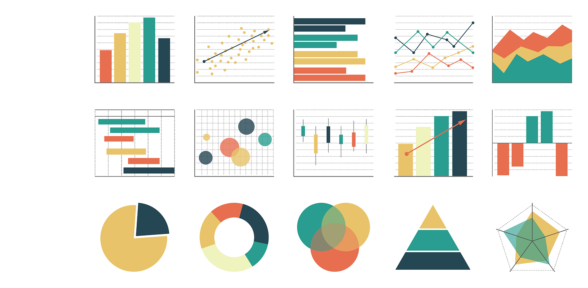
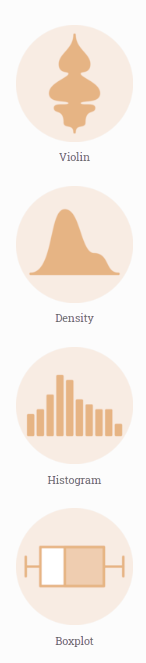
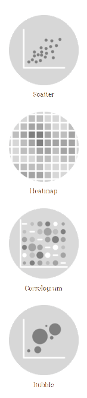
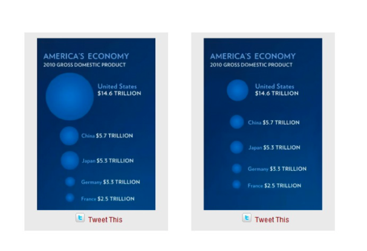
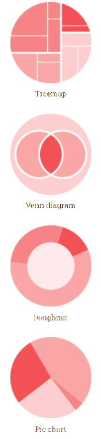
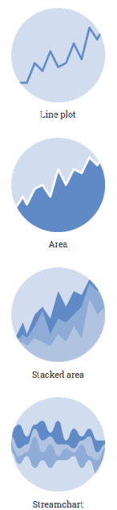
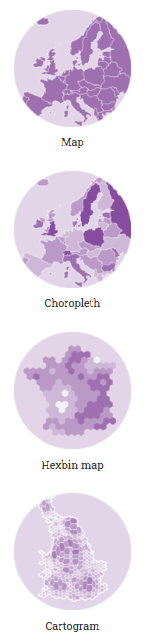
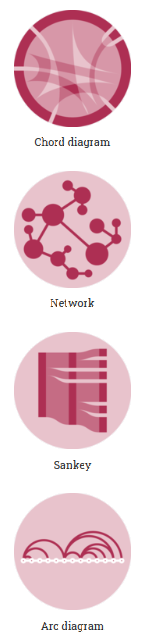
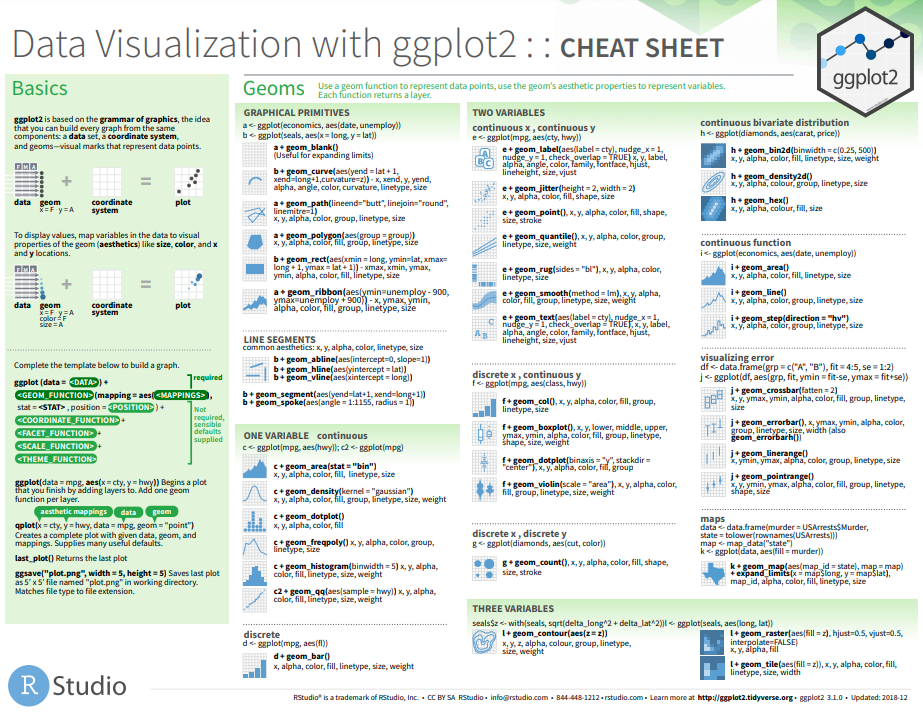

class: left, centre, my-title, title-slide .title[ # Introduction à la Visualisation de Données et à la Grammaire des Graphiques avec R ] .author[ ### <br/>David Munoz Tord, Vestin, Iván ] .date[ ### <br/> 2023-Nov-01 ] --- <div> <style type="text/css">.xaringan-extra-logo { width: 110px; height: 128px; z-index: 0; background-image: url(https://wedata.ch/img/logo/wedata.png); background-size: contain; background-repeat: no-repeat; position: absolute; top:2.5em;right:1.5em; } </style> <script>(function () { let tries = 0 function addLogo () { if (typeof slideshow === 'undefined') { tries += 1 if (tries < 10) { setTimeout(addLogo, 100) } } else { document.querySelectorAll('.remark-slide-content:not(.title-slide):not(.inverse):not(.hide_logo)') .forEach(function (slide) { const logo = document.createElement('div') logo.classList = 'xaringan-extra-logo' logo.href = null slide.appendChild(logo) }) } } document.addEventListener('DOMContentLoaded', addLogo) })()</script> </div> # Table des matières .div.blue[ - Grammaire des Graphiques et Théorie ] .div.blue[ - Implémentation: ggplot2 ] .div.blue[ - Aesthetic Mapping & Multidimensionalité <!--Personnalisation Avancée et Thèmes --> ] .div.blue[ - Projets Pratiques ] <!--comments --> ??? Ce cours n'est pas une introduction à R, mais une introduction à la visualisation de données avec R. Il est donc nécessaire d'avoir une connaissance de base de R pour suivre ce cours. Si vous n'avez pas de connaissances de base en R, vous pouvez suivre le cours [Introduction à R](https://www.datacamp.com/courses/free-introduction-to-r) sur DataCamp. De plus, ce cours ne pourra pas etre une exaustif quant a l'utilisation de ggplot2 car cela pourrait prendres des jours, mais il vous donnera les bases pour commencer à explorer et à créer vos propres graphiques. --- # But - Tentative d'inciter les gens à en savoir plus par eux-mêmes - Partager mon point de vue personnel sur la raison pour laquelle la grammaire des graphiques domine pour la plupart des ensembles de données <a href="./img/graphs.png">  </a> --- class: inverse center middle # Ressources .pull-left[ <a href="https://r4ds.hadley.nz/data-visualize.html"> <img src="https://r4ds.hadley.nz/cover.jpg" width="300px"/> </a> ] .pull-right[ <a href="http://www.ievbras.ru/ecostat/Kiril/R/Biblio_N/R_Eng/Wickham2016.pdf"> <img src="https://m.media-amazon.com/images/I/51smGgbUUjL._SL1251_.jpg" width="270px"/> </a> ] <!--comments --> ??? - Hadley Wickham, le créateur de ggplot2, a écrit un livre sur la visualisation de données avec R, [R for Data Science](https://r4ds.had.co.nz/), qui est un excellent point de départ pour apprendre à utiliser ggplot2. --- class: inverse center middle # Grammaire des Graphiques --- ## Grammaire des Graphiques - La grammaire des graphiques est un framework pour construire des graphiques en couches, en utilisant des composants de base pour construire des graphiques plus complexes ## Pourquoi? - Framework agile pour l'exploration des données - Permet de créer des graphiques complexes avec peu de code - Géneralise facilement à de vaste ensemble de variables avec des hiérarchies complexes --- class: inverse center middle # Dataviz: Théorie --- ## Dataviz, un univers de possibilités - On va **essayer** de faire un aperçu général de tous les **genre** de graphiques que l'on peut faire. - **Distribution**: Histogramme, Densité, Boxplot, Violin, etc. - **Relation**: Scatterplot, Corrélogramme, heatmap, etc. - **Ranking**: Barplot, Spider chart, Parrallel, etc. - **Evolution**: Line Chart, Area Chart, etc. - **Partie d'un tout**: Treemap, Pie Chart, Doughnut, etc. - **Cartographie**: Choropleth, Bubble Map, etc. - **Réseau**: Network, Sankey, etc. <!--comments--> ??? On peut faire 7 Meta categories de graphiques: Distribution, Relation, Ranking, Evolution, Partie d'un tout, Cartographie, Réseau. --- #### Distribution: Visualiser la tendance d'une ou plusieurs variables numériques .pull-left-small[ <a href="./img/Distrib.png">  </a> ] .pull-right-large[ - **Violin plot**: un hybride entre un boxplot en boîte et un density plot <br> - **Density plot**: les proportions de valeurs dans un intervalle continu <br> - **Histogram**: la fréquence des données en utilisant des intervalles de largeur égale (bins) <br> - **Boxplot**: résume la distribution des données (médiane, quartiles, valeurs aberrantes) ] <!--comments--> ??? - Les violons sont particulièrement adaptés lorsque la quantité de données est importante et qu'il est impossible de montrer des observations individuelles. on ajoute souvent un boxplot au milleu - Les histogrammes et les diagrammes de densité sont tous deux utiles pour visualiser la distribution des données, mais ils montrent des choses légèrement différentes. Les histogrammes montrent les frequences, tandis que les diagrammes de densité montrent les proportions. - Un boxplot montre la distribution des données quantitatives d'une manière qui facilite les comparaisons entre les variables ou entre les niveaux d'une variable catégorielle. La ligne qui divise la boîte en deux parties représente la médiane. Les extrémités de la boîte indique les quartiles supérieur et inférieur. Les lignes extrêmes indiquent la valeur la plus élevée et la plus basse, apres cela on vois des valeurs aberrantes. / Attention! Le boxplot cache la taille de l'échantillon de chaque groupe, il faut l'afficher avec une annotation ou la largeur de la boîte. / ! Ordonner votre boxplot/violine par la médiane peut le rendre plus efficace --- #### Relation: Relation entre 2 variables numériques/continues .pull-left-small[ <a href="./img/Corre.png">  </a> ] .pull-right-large[ - **Scatter plot**: relation entre deux variables numériques <br> - **heatmap**: valeurs individuelles dans une matrice représentées par des couleurs <br> - **correlogram**: une matrice, où chaque point représente la corrélation entre deux variables <br> - **bubble plot**: un nuage de points avec une troisième variable numérique associée à la taille du cercle ] <!--comments--> ??? La Overplotting est l'erreur la plus fréquente lorsque la taille de l'échantillon est élevée. N'oubliez pas de montrer les sous-groupes si vous en avez. carte thermique : Il faut souvent normaliser les données Pensez aux échelles (log, sqrt, etc.) ! Et où elles commencent , a 0 ou autre chose ? heatmap : C'est un peu comme regarder un tableau de données depuis le haut. / ! La palette de couleurs est importante / ! N'oubliez pas une légende pour la taille des bulles --- #### Pourquoi les graphiques en 3D sont une mauvaise idée <a href="./img/failureCircle.png">  </a> <!--commemnts --> ??? n'utilisez jamais le graphique à bulles 3D parce qu'il s'échelonne quadratiquement ! La perspective est également la pire chose que l'on puisse faire à un graphique, car les objets les plus éloignés semblent plus petits, mais notre cerveau les perçoit comme étant plus grands qu'ils ne le sont. --- #### Ranking: Comparer des valeurs numériques (unique ou moyenner) entre elles .pull-left-small[ <a href="./img/Ranking.png"> </a> ] .pull-right-large[ - **Barplot**: chaque valeur de la variable catégorielle est représentée par une barre <br> - **Spider plot**: chaque variable a son propre axe, tous les axes sont reliés au centre de la figure <br> - **Wordcloud**: affiche une liste de mots, l'importance de chacun étant indiquée par la taille ou la couleur de la police - **Parralel plot**: chaque observation est représentée par une ligne traversant une série d'axes parallèles, correspondant à une variable ou à une dimension spécifique ] <!--comments--> ??? Barplot vs histogramme Barplot a ne pas confondre avec un histogramme. C-a-d -> la distance entre les barres n'a pas de sens, alors que la distance entre les barres dans un histogramme est importante. Des noms tres longs ? Pensez à une version horizontale. trier son barplot permet souvent de mieux comprendre la situation. Les lollipop plot sont souvent plus attrayants que les diagrammes en barres, où la barre est transformée en une ligne et un point, ce qui est plus attrayant et transmet aussi bien l'information tout en étant moins encombré. je recommande. Les wordcloud sont hype, mais ils déforment souvent la réalité et ne sont pas très effiace. Par exemple, les mots longs seront plus visibles etc.. Utiliser plutôt un lolipop plot horizontal trier ? Le graphique parallèle permet de visualiser plusieurs dimensions à la fois. Il est souvent préférable au graphique en araignée, car les valeurs sont plus faciles à comparer lorsqu'elles sont disposées le long d'un seul axe vertical ou horizontal. --- #### Partie d'un tout: illustrer des proportions numériques .pull-left-small[ <a href="./img/Part.png">  </a> ] .pull-right-large[ - **treemap**: chaque groupe est représenté par un rectangle dont la surface est proportionnelle à sa valeur - **Venn diagramme**: chaque ensemble est représenté par un cercle, la taille du cercle représente l'importance du groupe, l'intersection des cercles indique les points communs entre les groupes - **doughnut and pie chart**: un cercle divisé en secteurs qui représentent chacun une proportion de l'ensemble ] <!--comments--> ??? Treemaps ont l'avantage d'utiliser efficacement l'espace, ce qui les rend utiles pour représenter une grande quantité de données. Mais n'annotez pas plus de 3 niveaux de la hiérarchie, cela rendrait la figure illisible. Diagramme de Venn : N'utilisez pas plus de 3 ensembles, cela rendrait la figure illisible. Les pie chart sont très critiqués et doivent être évités autant que possible. L'être humain est très mauvais pour traduire des angles en valeurs. Pourquoi ne pas plutôt envisager un stacked percentage bar plot ? --- #### Evolution: Montrer des tendances temporelles pour ou plusieurs variables numeriqies .pull-left-small[ <a href="./img/Evo.png">  </a> ] .pull-right-large[ - **line plot**: chaque observation est représentée par un point, les points sont reliés par des lignes - **area plot**: extension d'un line plot, la zone entre l'axe des x et la ligne est rempli par une couleur <br> - **stacked area et streamcharts**: extension d'un area plot, les zones sont empilées les unes sur les autres pour montrer l'évolution de plusieurs groupes ] <!--comments--> ??? Lineplot : il est similaire à un scatter plot, à ceci près que les points de mesure sont ordonnés (généralement en fonction de leur valeur sur l'axe des x) et reliés par des segments de ligne droite. Un graphique linéaire est souvent utilisé pour visualiser une tendance dans les données sur des intervalles de temps - une série chronologique - et la ligne est donc souvent tracée chronologiquement. Attention au graphique spaghetti : trop de lignes rendent le graphique illisible. Je suis un grand fan des area chart et je pense qu'ils rendent la tendance plus évidente que l'utilisation d'un lineplot Stacked area : il peut être difficile de lire l'évolution d'un groupe spécifique. L'ordre des groupes (de bas en haut) peut avoir une influenc. Streamgraph (Graphique en flux) : il n'y a pas de coin : les bords sont arrondis, ce qui donne une belle impression de flux. Bon pour étudier les proportions relatives de l'ensemble. --- #### Cartographie: Visualiser des données géographiques .pull-left-small[ <a href="./img/Cart.png">  </a> ] .pull-right-large[ - **carte**: projection de coordonnées géographiques sur une carte <br> - **chloropleth**: chaque région est colorée en fonction de la valeur d'une variable <br> - **hexbin map**: chaque région est remplie de petits hexagones, la couleur de l'hexagone indique la valeur d'une variable <br> - **cartogram**: chaque région est redimensionnée en fonction de la valeur d'une variable ] <!--comments--> ??? Les cartes sont un excellent moyen de visualiser des données géographiques. carte choroplèthe : Normalisez votre variable : vous ne pouvez pas comparer des chiffres bruts entre des régions de taille ou de population différentes. Si vos régions ont des tailles très diverses, cela introduit un biais. Ne l'appelez pas carte choroplèthe, mais carte chOrOpleth. La carte hexagonale est une sorte de carte choroplèthe. Elle supprime le biais introduit par la taille différente des régions dans la carte choroplèthe, puisque chaque région est représentée par le même hexagone. Le cartogramme vise à corriger le biais : lorsqu'une variable est agrégée par région, une région avec très peu de points de données semblera aussi importante qu'une région avec beaucoup de points de données. --- #### Réseaux: Visualiser des relations entre des entités (noeuds et liens) .pull-left-small[ <a href="./img/Network.png">  </a> ] .pull-right-large[ - **chord diagram**: chaque entité est représentée par un arc, la taille de l'arc est proportionnelle à la valeur d'une variable - **graph diagram**: la taille des noeuds et des arcs est proportionnelle à la valeur d'une variable <br> - **Sankey diagram**: plusieurs entités (nœuds) sont représentées par des rectangles, la relation entre ces entités est représentée par des liens proportionnels à une valeur - **arc diagram**: nœuds sont affichés le long d'un axe unique et les liens sont représentés par des arcs ] <!--comments--> ??? Les réseaux constituent un domaine de recherche à part entière. Les diagrammes de réseaux ne sont pas faciles à comprendre. Donnez beaucoup d'explications à votre public lorsque vous les présentez. Attention à l'encombrement et à l'absence de connexions faibles ? Chord: L'ordre des groupes autour du cercle est important, il est préférable de minimiser le nombre d'arcs qui se croisent. Il existe plusieurs types de graphs dirgams Ils peuvent être dirigés (flux) ou non dirigés (connexion). Les liens peuvent être mis en évidence ou non. Sankey diagrams permet de visualiser les flux. Arc : permet de mettre en évidence les clusters en 2D --- class: inverse center middle # Quiz #1 --- ## Quiz #1 - Quel type de graphique est le plus adapté pour visualiser la relation entre deux variables continues (e.g. taille et poids) ? -- **Scatter plot** -- - Quel type de graphique est le plus adapté pour comparer visuellement la distribution de deux variables continues avec beaucoup de points (e.g. age d'une population par sexe) ? -- **Violon plot / boxplot** -- - Quel type de graphique est le plus adapté pour visualiser la corrélation entre **toutes** les variables d'un dataset ? -- **Correlogram ** -- - Quel type de graphique est le plus adapté pour visualiser l'évolution de la température moyenne en France au cours des 50 dernières années ? -- **Line plot ou area plot** -- - Quel type de graphique est le plus adapté pour visualiser la répartition des ventes de voitures par marque ? -- **Bar plot** -- / Et par marque et par année ? -- **(Stacked) bar plot empilé** -- - Quel type de graphique est le plus adapté pour visualiser les relations entre les pays de l'UE ? -- **Graph diagram** --- class: inverse center middle # Implémentation: GGplot2 --- ## GGplot2 .pull-left-large[ - GGplot2 est une implémentation de la grammaire des graphiques en R, crée par Hadley Wickham. <br> - Vous fournissez les données, dites à ggplot2 comment faire correspondre les variables à l'esthétique, quelles graphiques utiliser, et il s'occupe des détails. <br> - Disponible sur R [ggplot2](https://ggplot2.tidyverse.org/) et Python [plotnine](https://plotnine.readthedocs.io/en/v0.12.3/) ] .pull-right-small[ <a href="https://camo.githubusercontent.com/a6cc89d06ac569b886318ed743f16cdbcf0f2fe7bce5804bdcd1c160b99797f2/687474703a2f2f692e696d6775722e636f6d2f4472496c522e706e67"> <img src="https://camo.githubusercontent.com/a6cc89d06ac569b886318ed743f16cdbcf0f2fe7bce5804bdcd1c160b99797f2/687474703a2f2f692e696d6775722e636f6d2f4472496c522e706e67" width="270px"/> </a> ] <!--comments--> ??? Imaginer React /Vue vs Vanilla JS les gens peuvent trouver ca "trop compliquer" mais c'est plus facile a utiliser et plus puissant --- ## Syntaxe de GGplot2 .pull-left-large[ - **Data**: Les données à utiliser pour créer le graphique - **Aesthetic**: Les caractéristiques visuelles du graphique - **Geom**: La géométrie qui représente les données - **Scale**: Comment les caractéristiques visuelles sont converties en valeurs d'affichage - **Statistics**: Transformations statistiques. Comptes, Moyennes, etc. - **Coordinates**: Système numérique pour déterminer la position de la géométrie. Cartésien, Polaire, etc. - **Facets**: Diviser les données en sous-ensembles - **Theme**: Personnalisation des éléments non liés aux données ] .pull-right-small[ <a href="https://nbisweden.github.io/RaukR-2019/ggplot/presentation/ggplot_presentation_assets/gog.png"> <img src="https://nbisweden.github.io/RaukR-2019/ggplot/presentation/ggplot_presentation_assets/gog.png" width="240px"/> </a><a href="https://nbisweden.github.io/RaukR-2019/ggplot/presentation/ggplot_presentation_assets/syntax.png"> <img src="https://nbisweden.github.io/RaukR-2019/ggplot/presentation/ggplot_presentation_assets/syntax.png" width="370px"/> </a> ] --- class: inverse center middle # Familiarisation --- ## Données sur le taux de suicide (1985- 2016) <div style="border: 1px solid #ddd; padding: 0px; overflow-y: scroll; height:400px; overflow-x: scroll; width:100%; "><table class="table" style="margin-left: auto; margin-right: auto;"> <thead> <tr> <th style="text-align:left;position: sticky; top:0; background-color: #FFFFFF;"> country </th> <th style="text-align:right;position: sticky; top:0; background-color: #FFFFFF;"> year </th> <th style="text-align:left;position: sticky; top:0; background-color: #FFFFFF;"> age </th> <th style="text-align:left;position: sticky; top:0; background-color: #FFFFFF;"> sex </th> <th style="text-align:right;position: sticky; top:0; background-color: #FFFFFF;"> suicides_no </th> <th style="text-align:right;position: sticky; top:0; background-color: #FFFFFF;"> population </th> </tr> </thead> <tbody> <tr> <td style="text-align:left;"> Bahrain </td> <td style="text-align:right;"> 1985 </td> <td style="text-align:left;"> 25-34 years </td> <td style="text-align:left;"> male </td> <td style="text-align:right;"> 7 </td> <td style="text-align:right;"> 67600 </td> </tr> <tr> <td style="text-align:left;"> Bahrain </td> <td style="text-align:right;"> 1985 </td> <td style="text-align:left;"> 35-54 years </td> <td style="text-align:left;"> male </td> <td style="text-align:right;"> 3 </td> <td style="text-align:right;"> 49700 </td> </tr> <tr> <td style="text-align:left;"> Bahrain </td> <td style="text-align:right;"> 1985 </td> <td style="text-align:left;"> 35-54 years </td> <td style="text-align:left;"> female </td> <td style="text-align:right;"> 1 </td> <td style="text-align:right;"> 26900 </td> </tr> <tr> <td style="text-align:left;"> Bahrain </td> <td style="text-align:right;"> 1985 </td> <td style="text-align:left;"> 15-24 years </td> <td style="text-align:left;"> female </td> <td style="text-align:right;"> 0 </td> <td style="text-align:right;"> 37800 </td> </tr> <tr> <td style="text-align:left;"> Bahrain </td> <td style="text-align:right;"> 1985 </td> <td style="text-align:left;"> 25-34 years </td> <td style="text-align:left;"> female </td> <td style="text-align:right;"> 0 </td> <td style="text-align:right;"> 27600 </td> </tr> <tr> <td style="text-align:left;"> Bahrain </td> <td style="text-align:right;"> 1985 </td> <td style="text-align:left;"> 5-14 years </td> <td style="text-align:left;"> female </td> <td style="text-align:right;"> 0 </td> <td style="text-align:right;"> 41400 </td> </tr> <tr> <td style="text-align:left;"> Bahrain </td> <td style="text-align:right;"> 1985 </td> <td style="text-align:left;"> 55-74 years </td> <td style="text-align:left;"> female </td> <td style="text-align:right;"> 0 </td> <td style="text-align:right;"> 8700 </td> </tr> <tr> <td style="text-align:left;"> Bahrain </td> <td style="text-align:right;"> 1985 </td> <td style="text-align:left;"> 75+ years </td> <td style="text-align:left;"> female </td> <td style="text-align:right;"> 0 </td> <td style="text-align:right;"> 1500 </td> </tr> <tr> <td style="text-align:left;"> Bahrain </td> <td style="text-align:right;"> 1985 </td> <td style="text-align:left;"> 15-24 years </td> <td style="text-align:left;"> male </td> <td style="text-align:right;"> 0 </td> <td style="text-align:right;"> 49700 </td> </tr> <tr> <td style="text-align:left;"> Bahrain </td> <td style="text-align:right;"> 1985 </td> <td style="text-align:left;"> 5-14 years </td> <td style="text-align:left;"> male </td> <td style="text-align:right;"> 0 </td> <td style="text-align:right;"> 42000 </td> </tr> <tr> <td style="text-align:left;"> Bahrain </td> <td style="text-align:right;"> 1985 </td> <td style="text-align:left;"> 55-74 years </td> <td style="text-align:left;"> male </td> <td style="text-align:right;"> 0 </td> <td style="text-align:right;"> 11600 </td> </tr> <tr> <td style="text-align:left;"> Bahrain </td> <td style="text-align:right;"> 1985 </td> <td style="text-align:left;"> 75+ years </td> <td style="text-align:left;"> male </td> <td style="text-align:right;"> 0 </td> <td style="text-align:right;"> 1400 </td> </tr> <tr> <td style="text-align:left;"> Bahrain </td> <td style="text-align:right;"> 1987 </td> <td style="text-align:left;"> 55-74 years </td> <td style="text-align:left;"> male </td> <td style="text-align:right;"> 1 </td> <td style="text-align:right;"> 11800 </td> </tr> <tr> <td style="text-align:left;"> Bahrain </td> <td style="text-align:right;"> 1987 </td> <td style="text-align:left;"> 35-54 years </td> <td style="text-align:left;"> male </td> <td style="text-align:right;"> 3 </td> <td style="text-align:right;"> 47700 </td> </tr> <tr> <td style="text-align:left;"> Bahrain </td> <td style="text-align:right;"> 1987 </td> <td style="text-align:left;"> 25-34 years </td> <td style="text-align:left;"> male </td> <td style="text-align:right;"> 3 </td> <td style="text-align:right;"> 63900 </td> </tr> <tr> <td style="text-align:left;"> Bahrain </td> <td style="text-align:right;"> 1987 </td> <td style="text-align:left;"> 25-34 years </td> <td style="text-align:left;"> female </td> <td style="text-align:right;"> 1 </td> <td style="text-align:right;"> 27500 </td> </tr> <tr> <td style="text-align:left;"> Bahrain </td> <td style="text-align:right;"> 1987 </td> <td style="text-align:left;"> 15-24 years </td> <td style="text-align:left;"> female </td> <td style="text-align:right;"> 1 </td> <td style="text-align:right;"> 38600 </td> </tr> <tr> <td style="text-align:left;"> Bahrain </td> <td style="text-align:right;"> 1987 </td> <td style="text-align:left;"> 35-54 years </td> <td style="text-align:left;"> female </td> <td style="text-align:right;"> 0 </td> <td style="text-align:right;"> 27300 </td> </tr> <tr> <td style="text-align:left;"> Bahrain </td> <td style="text-align:right;"> 1987 </td> <td style="text-align:left;"> 5-14 years </td> <td style="text-align:left;"> female </td> <td style="text-align:right;"> 0 </td> <td style="text-align:right;"> 42500 </td> </tr> <tr> <td style="text-align:left;"> Bahrain </td> <td style="text-align:right;"> 1987 </td> <td style="text-align:left;"> 55-74 years </td> <td style="text-align:left;"> female </td> <td style="text-align:right;"> 0 </td> <td style="text-align:right;"> 8900 </td> </tr> <tr> <td style="text-align:left;"> Bahrain </td> <td style="text-align:right;"> 1987 </td> <td style="text-align:left;"> 75+ years </td> <td style="text-align:left;"> female </td> <td style="text-align:right;"> 0 </td> <td style="text-align:right;"> 1500 </td> </tr> <tr> <td style="text-align:left;"> Bahrain </td> <td style="text-align:right;"> 1987 </td> <td style="text-align:left;"> 15-24 years </td> <td style="text-align:left;"> male </td> <td style="text-align:right;"> 0 </td> <td style="text-align:right;"> 49400 </td> </tr> <tr> <td style="text-align:left;"> Bahrain </td> <td style="text-align:right;"> 1987 </td> <td style="text-align:left;"> 5-14 years </td> <td style="text-align:left;"> male </td> <td style="text-align:right;"> 0 </td> <td style="text-align:right;"> 43200 </td> </tr> <tr> <td style="text-align:left;"> Bahrain </td> <td style="text-align:right;"> 1987 </td> <td style="text-align:left;"> 75+ years </td> <td style="text-align:left;"> male </td> <td style="text-align:right;"> 0 </td> <td style="text-align:right;"> 1600 </td> </tr> <tr> <td style="text-align:left;"> Bahrain </td> <td style="text-align:right;"> 1988 </td> <td style="text-align:left;"> 25-34 years </td> <td style="text-align:left;"> male </td> <td style="text-align:right;"> 8 </td> <td style="text-align:right;"> 61600 </td> </tr> <tr> <td style="text-align:left;"> Bahrain </td> <td style="text-align:right;"> 1988 </td> <td style="text-align:left;"> 35-54 years </td> <td style="text-align:left;"> male </td> <td style="text-align:right;"> 4 </td> <td style="text-align:right;"> 63500 </td> </tr> <tr> <td style="text-align:left;"> Bahrain </td> <td style="text-align:right;"> 1988 </td> <td style="text-align:left;"> 35-54 years </td> <td style="text-align:left;"> female </td> <td style="text-align:right;"> 1 </td> <td style="text-align:right;"> 30900 </td> </tr> <tr> <td style="text-align:left;"> Bahrain </td> <td style="text-align:right;"> 1988 </td> <td style="text-align:left;"> 15-24 years </td> <td style="text-align:left;"> male </td> <td style="text-align:right;"> 1 </td> <td style="text-align:right;"> 44100 </td> </tr> <tr> <td style="text-align:left;"> Bahrain </td> <td style="text-align:right;"> 1988 </td> <td style="text-align:left;"> 15-24 years </td> <td style="text-align:left;"> female </td> <td style="text-align:right;"> 0 </td> <td style="text-align:right;"> 38300 </td> </tr> <tr> <td style="text-align:left;"> Bahrain </td> <td style="text-align:right;"> 1988 </td> <td style="text-align:left;"> 25-34 years </td> <td style="text-align:left;"> female </td> <td style="text-align:right;"> 0 </td> <td style="text-align:right;"> 32000 </td> </tr> <tr> <td style="text-align:left;"> Bahrain </td> <td style="text-align:right;"> 1988 </td> <td style="text-align:left;"> 5-14 years </td> <td style="text-align:left;"> female </td> <td style="text-align:right;"> 0 </td> <td style="text-align:right;"> 45400 </td> </tr> <tr> <td style="text-align:left;"> Bahrain </td> <td style="text-align:right;"> 1988 </td> <td style="text-align:left;"> 55-74 years </td> <td style="text-align:left;"> female </td> <td style="text-align:right;"> 0 </td> <td style="text-align:right;"> 10300 </td> </tr> <tr> <td style="text-align:left;"> Bahrain </td> <td style="text-align:right;"> 1988 </td> <td style="text-align:left;"> 75+ years </td> <td style="text-align:left;"> female </td> <td style="text-align:right;"> 0 </td> <td style="text-align:right;"> 1400 </td> </tr> <tr> <td style="text-align:left;"> Bahrain </td> <td style="text-align:right;"> 1988 </td> <td style="text-align:left;"> 5-14 years </td> <td style="text-align:left;"> male </td> <td style="text-align:right;"> 0 </td> <td style="text-align:right;"> 46500 </td> </tr> <tr> <td style="text-align:left;"> Bahrain </td> <td style="text-align:right;"> 1988 </td> <td style="text-align:left;"> 55-74 years </td> <td style="text-align:left;"> male </td> <td style="text-align:right;"> 0 </td> <td style="text-align:right;"> 14400 </td> </tr> <tr> <td style="text-align:left;"> Bahrain </td> <td style="text-align:right;"> 1988 </td> <td style="text-align:left;"> 75+ years </td> <td style="text-align:left;"> male </td> <td style="text-align:right;"> 0 </td> <td style="text-align:right;"> 1300 </td> </tr> <tr> <td style="text-align:left;"> Bahrain </td> <td style="text-align:right;"> 1997 </td> <td style="text-align:left;"> 15-24 years </td> <td style="text-align:left;"> female </td> <td style="text-align:right;"> 0 </td> <td style="text-align:right;"> 46573 </td> </tr> <tr> <td style="text-align:left;"> Bahrain </td> <td style="text-align:right;"> 1997 </td> <td style="text-align:left;"> 25-34 years </td> <td style="text-align:left;"> female </td> <td style="text-align:right;"> 0 </td> <td style="text-align:right;"> 50841 </td> </tr> <tr> <td style="text-align:left;"> Bahrain </td> <td style="text-align:right;"> 1997 </td> <td style="text-align:left;"> 35-54 years </td> <td style="text-align:left;"> female </td> <td style="text-align:right;"> 0 </td> <td style="text-align:right;"> 53562 </td> </tr> <tr> <td style="text-align:left;"> Bahrain </td> <td style="text-align:right;"> 1997 </td> <td style="text-align:left;"> 5-14 years </td> <td style="text-align:left;"> female </td> <td style="text-align:right;"> 0 </td> <td style="text-align:right;"> 55390 </td> </tr> <tr> <td style="text-align:left;"> Bahrain </td> <td style="text-align:right;"> 1997 </td> <td style="text-align:left;"> 55-74 years </td> <td style="text-align:left;"> female </td> <td style="text-align:right;"> 0 </td> <td style="text-align:right;"> 13826 </td> </tr> <tr> <td style="text-align:left;"> Bahrain </td> <td style="text-align:right;"> 1997 </td> <td style="text-align:left;"> 75+ years </td> <td style="text-align:left;"> female </td> <td style="text-align:right;"> 0 </td> <td style="text-align:right;"> 2250 </td> </tr> <tr> <td style="text-align:left;"> Bahrain </td> <td style="text-align:right;"> 1997 </td> <td style="text-align:left;"> 15-24 years </td> <td style="text-align:left;"> male </td> <td style="text-align:right;"> 0 </td> <td style="text-align:right;"> 54369 </td> </tr> <tr> <td style="text-align:left;"> Bahrain </td> <td style="text-align:right;"> 1997 </td> <td style="text-align:left;"> 25-34 years </td> <td style="text-align:left;"> male </td> <td style="text-align:right;"> 0 </td> <td style="text-align:right;"> 80297 </td> </tr> <tr> <td style="text-align:left;"> Bahrain </td> <td style="text-align:right;"> 1997 </td> <td style="text-align:left;"> 35-54 years </td> <td style="text-align:left;"> male </td> <td style="text-align:right;"> 0 </td> <td style="text-align:right;"> 96825 </td> </tr> <tr> <td style="text-align:left;"> Bahrain </td> <td style="text-align:right;"> 1997 </td> <td style="text-align:left;"> 5-14 years </td> <td style="text-align:left;"> male </td> <td style="text-align:right;"> 0 </td> <td style="text-align:right;"> 57431 </td> </tr> <tr> <td style="text-align:left;"> Bahrain </td> <td style="text-align:right;"> 1997 </td> <td style="text-align:left;"> 55-74 years </td> <td style="text-align:left;"> male </td> <td style="text-align:right;"> 0 </td> <td style="text-align:right;"> 16035 </td> </tr> <tr> <td style="text-align:left;"> Bahrain </td> <td style="text-align:right;"> 1997 </td> <td style="text-align:left;"> 75+ years </td> <td style="text-align:left;"> male </td> <td style="text-align:right;"> 0 </td> <td style="text-align:right;"> 2355 </td> </tr> <tr> <td style="text-align:left;"> Bahrain </td> <td style="text-align:right;"> 1998 </td> <td style="text-align:left;"> 15-24 years </td> <td style="text-align:left;"> female </td> <td style="text-align:right;"> 0 </td> <td style="text-align:right;"> 48147 </td> </tr> <tr> <td style="text-align:left;"> Bahrain </td> <td style="text-align:right;"> 1998 </td> <td style="text-align:left;"> 25-34 years </td> <td style="text-align:left;"> female </td> <td style="text-align:right;"> 0 </td> <td style="text-align:right;"> 51596 </td> </tr> <tr> <td style="text-align:left;"> Bahrain </td> <td style="text-align:right;"> 1998 </td> <td style="text-align:left;"> 35-54 years </td> <td style="text-align:left;"> female </td> <td style="text-align:right;"> 0 </td> <td style="text-align:right;"> 56917 </td> </tr> <tr> <td style="text-align:left;"> Bahrain </td> <td style="text-align:right;"> 1998 </td> <td style="text-align:left;"> 5-14 years </td> <td style="text-align:left;"> female </td> <td style="text-align:right;"> 0 </td> <td style="text-align:right;"> 56626 </td> </tr> <tr> <td style="text-align:left;"> Bahrain </td> <td style="text-align:right;"> 1998 </td> <td style="text-align:left;"> 55-74 years </td> <td style="text-align:left;"> female </td> <td style="text-align:right;"> 0 </td> <td style="text-align:right;"> 14404 </td> </tr> <tr> <td style="text-align:left;"> Bahrain </td> <td style="text-align:right;"> 1998 </td> <td style="text-align:left;"> 75+ years </td> <td style="text-align:left;"> female </td> <td style="text-align:right;"> 0 </td> <td style="text-align:right;"> 2312 </td> </tr> <tr> <td style="text-align:left;"> Bahrain </td> <td style="text-align:right;"> 1998 </td> <td style="text-align:left;"> 15-24 years </td> <td style="text-align:left;"> male </td> <td style="text-align:right;"> 0 </td> <td style="text-align:right;"> 56377 </td> </tr> <tr> <td style="text-align:left;"> Bahrain </td> <td style="text-align:right;"> 1998 </td> <td style="text-align:left;"> 25-34 years </td> <td style="text-align:left;"> male </td> <td style="text-align:right;"> 0 </td> <td style="text-align:right;"> 80849 </td> </tr> <tr> <td style="text-align:left;"> Bahrain </td> <td style="text-align:right;"> 1998 </td> <td style="text-align:left;"> 35-54 years </td> <td style="text-align:left;"> male </td> <td style="text-align:right;"> 0 </td> <td style="text-align:right;"> 101013 </td> </tr> <tr> <td style="text-align:left;"> Bahrain </td> <td style="text-align:right;"> 1998 </td> <td style="text-align:left;"> 5-14 years </td> <td style="text-align:left;"> male </td> <td style="text-align:right;"> 0 </td> <td style="text-align:right;"> 58935 </td> </tr> <tr> <td style="text-align:left;"> Bahrain </td> <td style="text-align:right;"> 1998 </td> <td style="text-align:left;"> 55-74 years </td> <td style="text-align:left;"> male </td> <td style="text-align:right;"> 0 </td> <td style="text-align:right;"> 16409 </td> </tr> <tr> <td style="text-align:left;"> Bahrain </td> <td style="text-align:right;"> 1998 </td> <td style="text-align:left;"> 75+ years </td> <td style="text-align:left;"> male </td> <td style="text-align:right;"> 0 </td> <td style="text-align:right;"> 2423 </td> </tr> <tr> <td style="text-align:left;"> Bahrain </td> <td style="text-align:right;"> 1999 </td> <td style="text-align:left;"> 25-34 years </td> <td style="text-align:left;"> male </td> <td style="text-align:right;"> 8 </td> <td style="text-align:right;"> 82791 </td> </tr> <tr> <td style="text-align:left;"> Bahrain </td> <td style="text-align:right;"> 1999 </td> <td style="text-align:left;"> 35-54 years </td> <td style="text-align:left;"> male </td> <td style="text-align:right;"> 4 </td> <td style="text-align:right;"> 105903 </td> </tr> <tr> <td style="text-align:left;"> Bahrain </td> <td style="text-align:right;"> 1999 </td> <td style="text-align:left;"> 15-24 years </td> <td style="text-align:left;"> male </td> <td style="text-align:right;"> 2 </td> <td style="text-align:right;"> 57914 </td> </tr> <tr> <td style="text-align:left;"> Bahrain </td> <td style="text-align:right;"> 1999 </td> <td style="text-align:left;"> 15-24 years </td> <td style="text-align:left;"> female </td> <td style="text-align:right;"> 1 </td> <td style="text-align:right;"> 49631 </td> </tr> <tr> <td style="text-align:left;"> Bahrain </td> <td style="text-align:right;"> 1999 </td> <td style="text-align:left;"> 25-34 years </td> <td style="text-align:left;"> female </td> <td style="text-align:right;"> 1 </td> <td style="text-align:right;"> 52339 </td> </tr> <tr> <td style="text-align:left;"> Bahrain </td> <td style="text-align:right;"> 1999 </td> <td style="text-align:left;"> 35-54 years </td> <td style="text-align:left;"> female </td> <td style="text-align:right;"> 1 </td> <td style="text-align:right;"> 60568 </td> </tr> <tr> <td style="text-align:left;"> Bahrain </td> <td style="text-align:right;"> 1999 </td> <td style="text-align:left;"> 5-14 years </td> <td style="text-align:left;"> female </td> <td style="text-align:right;"> 0 </td> <td style="text-align:right;"> 58374 </td> </tr> <tr> <td style="text-align:left;"> Bahrain </td> <td style="text-align:right;"> 1999 </td> <td style="text-align:left;"> 55-74 years </td> <td style="text-align:left;"> female </td> <td style="text-align:right;"> 0 </td> <td style="text-align:right;"> 15017 </td> </tr> <tr> <td style="text-align:left;"> Bahrain </td> <td style="text-align:right;"> 1999 </td> <td style="text-align:left;"> 75+ years </td> <td style="text-align:left;"> female </td> <td style="text-align:right;"> 0 </td> <td style="text-align:right;"> 2339 </td> </tr> <tr> <td style="text-align:left;"> Bahrain </td> <td style="text-align:right;"> 1999 </td> <td style="text-align:left;"> 5-14 years </td> <td style="text-align:left;"> male </td> <td style="text-align:right;"> 0 </td> <td style="text-align:right;"> 61554 </td> </tr> <tr> <td style="text-align:left;"> Bahrain </td> <td style="text-align:right;"> 1999 </td> <td style="text-align:left;"> 55-74 years </td> <td style="text-align:left;"> male </td> <td style="text-align:right;"> 0 </td> <td style="text-align:right;"> 16810 </td> </tr> <tr> <td style="text-align:left;"> Bahrain </td> <td style="text-align:right;"> 1999 </td> <td style="text-align:left;"> 75+ years </td> <td style="text-align:left;"> male </td> <td style="text-align:right;"> 0 </td> <td style="text-align:right;"> 2522 </td> </tr> <tr> <td style="text-align:left;"> Bahrain </td> <td style="text-align:right;"> 2000 </td> <td style="text-align:left;"> 25-34 years </td> <td style="text-align:left;"> male </td> <td style="text-align:right;"> 16 </td> <td style="text-align:right;"> 86231 </td> </tr> <tr> <td style="text-align:left;"> Bahrain </td> <td style="text-align:right;"> 2000 </td> <td style="text-align:left;"> 35-54 years </td> <td style="text-align:left;"> male </td> <td style="text-align:right;"> 10 </td> <td style="text-align:right;"> 112060 </td> </tr> <tr> <td style="text-align:left;"> Bahrain </td> <td style="text-align:right;"> 2000 </td> <td style="text-align:left;"> 15-24 years </td> <td style="text-align:left;"> male </td> <td style="text-align:right;"> 2 </td> <td style="text-align:right;"> 59208 </td> </tr> <tr> <td style="text-align:left;"> Bahrain </td> <td style="text-align:right;"> 2000 </td> <td style="text-align:left;"> 25-34 years </td> <td style="text-align:left;"> female </td> <td style="text-align:right;"> 1 </td> <td style="text-align:right;"> 53263 </td> </tr> <tr> <td style="text-align:left;"> Bahrain </td> <td style="text-align:right;"> 2000 </td> <td style="text-align:left;"> 15-24 years </td> <td style="text-align:left;"> female </td> <td style="text-align:right;"> 0 </td> <td style="text-align:right;"> 50968 </td> </tr> <tr> <td style="text-align:left;"> Bahrain </td> <td style="text-align:right;"> 2000 </td> <td style="text-align:left;"> 35-54 years </td> <td style="text-align:left;"> female </td> <td style="text-align:right;"> 0 </td> <td style="text-align:right;"> 64617 </td> </tr> <tr> <td style="text-align:left;"> Bahrain </td> <td style="text-align:right;"> 2000 </td> <td style="text-align:left;"> 5-14 years </td> <td style="text-align:left;"> female </td> <td style="text-align:right;"> 0 </td> <td style="text-align:right;"> 60791 </td> </tr> <tr> <td style="text-align:left;"> Bahrain </td> <td style="text-align:right;"> 2000 </td> <td style="text-align:left;"> 55-74 years </td> <td style="text-align:left;"> female </td> <td style="text-align:right;"> 0 </td> <td style="text-align:right;"> 15556 </td> </tr> <tr> <td style="text-align:left;"> Bahrain </td> <td style="text-align:right;"> 2000 </td> <td style="text-align:left;"> 75+ years </td> <td style="text-align:left;"> female </td> <td style="text-align:right;"> 0 </td> <td style="text-align:right;"> 2394 </td> </tr> <tr> <td style="text-align:left;"> Bahrain </td> <td style="text-align:right;"> 2000 </td> <td style="text-align:left;"> 5-14 years </td> <td style="text-align:left;"> male </td> <td style="text-align:right;"> 0 </td> <td style="text-align:right;"> 65512 </td> </tr> <tr> <td style="text-align:left;"> Bahrain </td> <td style="text-align:right;"> 2000 </td> <td style="text-align:left;"> 55-74 years </td> <td style="text-align:left;"> male </td> <td style="text-align:right;"> 0 </td> <td style="text-align:right;"> 17346 </td> </tr> <tr> <td style="text-align:left;"> Bahrain </td> <td style="text-align:right;"> 2000 </td> <td style="text-align:left;"> 75+ years </td> <td style="text-align:left;"> male </td> <td style="text-align:right;"> 0 </td> <td style="text-align:right;"> 2648 </td> </tr> <tr> <td style="text-align:left;"> Bahrain </td> <td style="text-align:right;"> 2001 </td> <td style="text-align:left;"> 25-34 years </td> <td style="text-align:left;"> male </td> <td style="text-align:right;"> 8 </td> <td style="text-align:right;"> 90920 </td> </tr> <tr> <td style="text-align:left;"> Bahrain </td> <td style="text-align:right;"> 2001 </td> <td style="text-align:left;"> 35-54 years </td> <td style="text-align:left;"> male </td> <td style="text-align:right;"> 8 </td> <td style="text-align:right;"> 118151 </td> </tr> <tr> <td style="text-align:left;"> Bahrain </td> <td style="text-align:right;"> 2001 </td> <td style="text-align:left;"> 55-74 years </td> <td style="text-align:left;"> male </td> <td style="text-align:right;"> 1 </td> <td style="text-align:right;"> 17917 </td> </tr> <tr> <td style="text-align:left;"> Bahrain </td> <td style="text-align:right;"> 2001 </td> <td style="text-align:left;"> 15-24 years </td> <td style="text-align:left;"> male </td> <td style="text-align:right;"> 2 </td> <td style="text-align:right;"> 68309 </td> </tr> <tr> <td style="text-align:left;"> Bahrain </td> <td style="text-align:right;"> 2001 </td> <td style="text-align:left;"> 15-24 years </td> <td style="text-align:left;"> female </td> <td style="text-align:right;"> 1 </td> <td style="text-align:right;"> 54497 </td> </tr> <tr> <td style="text-align:left;"> Bahrain </td> <td style="text-align:right;"> 2001 </td> <td style="text-align:left;"> 25-34 years </td> <td style="text-align:left;"> female </td> <td style="text-align:right;"> 1 </td> <td style="text-align:right;"> 55961 </td> </tr> <tr> <td style="text-align:left;"> Bahrain </td> <td style="text-align:right;"> 2001 </td> <td style="text-align:left;"> 5-14 years </td> <td style="text-align:left;"> male </td> <td style="text-align:right;"> 1 </td> <td style="text-align:right;"> 67127 </td> </tr> <tr> <td style="text-align:left;"> Bahrain </td> <td style="text-align:right;"> 2001 </td> <td style="text-align:left;"> 35-54 years </td> <td style="text-align:left;"> female </td> <td style="text-align:right;"> 1 </td> <td style="text-align:right;"> 67856 </td> </tr> <tr> <td style="text-align:left;"> Bahrain </td> <td style="text-align:right;"> 2001 </td> <td style="text-align:left;"> 5-14 years </td> <td style="text-align:left;"> female </td> <td style="text-align:right;"> 0 </td> <td style="text-align:right;"> 62316 </td> </tr> <tr> <td style="text-align:left;"> Bahrain </td> <td style="text-align:right;"> 2001 </td> <td style="text-align:left;"> 55-74 years </td> <td style="text-align:left;"> female </td> <td style="text-align:right;"> 0 </td> <td style="text-align:right;"> 15791 </td> </tr> <tr> <td style="text-align:left;"> Bahrain </td> <td style="text-align:right;"> 2001 </td> <td style="text-align:left;"> 75+ years </td> <td style="text-align:left;"> female </td> <td style="text-align:right;"> 0 </td> <td style="text-align:right;"> 2544 </td> </tr> <tr> <td style="text-align:left;"> Bahrain </td> <td style="text-align:right;"> 2001 </td> <td style="text-align:left;"> 75+ years </td> <td style="text-align:left;"> male </td> <td style="text-align:right;"> 0 </td> <td style="text-align:right;"> 2694 </td> </tr> <tr> <td style="text-align:left;"> Bahrain </td> <td style="text-align:right;"> 2002 </td> <td style="text-align:left;"> 25-34 years </td> <td style="text-align:left;"> male </td> <td style="text-align:right;"> 7 </td> <td style="text-align:right;"> 97288 </td> </tr> <tr> <td style="text-align:left;"> Bahrain </td> <td style="text-align:right;"> 2002 </td> <td style="text-align:left;"> 35-54 years </td> <td style="text-align:left;"> male </td> <td style="text-align:right;"> 9 </td> <td style="text-align:right;"> 126500 </td> </tr> <tr> <td style="text-align:left;"> Bahrain </td> <td style="text-align:right;"> 2002 </td> <td style="text-align:left;"> 35-54 years </td> <td style="text-align:left;"> female </td> <td style="text-align:right;"> 4 </td> <td style="text-align:right;"> 71376 </td> </tr> <tr> <td style="text-align:left;"> Bahrain </td> <td style="text-align:right;"> 2002 </td> <td style="text-align:left;"> 15-24 years </td> <td style="text-align:left;"> female </td> <td style="text-align:right;"> 2 </td> <td style="text-align:right;"> 57599 </td> </tr> </tbody> </table></div> <!--comments--> ??? --- ## Basic R VS GGplot2 .pull-left[ ```r plot(df$population, df$suicides_no) # Basic R ``` <img src="DataViz_With_R_files/figure-html/unnamed-chunk-16-1.png" width="400px" height="400px" style="display: block; margin: auto auto auto 0;" /> ] .pull-right[ ```r ggplot(data=df, mapping=aes(x=population, y=suicides_no)) + geom_point() # ggplot2 ``` <img src="DataViz_With_R_files/figure-html/unnamed-chunk-18-1.png" width="340px" height="340px" style="display: block; margin: auto auto auto 0;" /> ] <!--comments --> ??? ils sont tous les deux des graphiques de dispersion, mais deja ggplot2 me parait plus facile a lire et a comprendre En quelque mots, le premier parametre est le dataframes, le deuxieme est aes qui est un objet qui contient les variables que l'on veut utiliser pour le graphique, ici x pour l'axe des abscisses et y pour l'axe des ordonnées, et le troisieme est la geometrie du graphique, ici un point --- ## Comment colorer les points par sexe? - Traditionnellement, on utilisait le fromat **wide** des données pour les graphiques groupés <div style="border: 1px solid #ddd; padding: 0px; overflow-y: scroll; height:400px; overflow-x: scroll; width:100%; "><table class="table" style="font-size: 16px; margin-left: auto; margin-right: auto;"> <thead> <tr> <th style="text-align:left;position: sticky; top:0; background-color: #FFFFFF;"> country </th> <th style="text-align:right;position: sticky; top:0; background-color: #FFFFFF;"> year </th> <th style="text-align:left;position: sticky; top:0; background-color: #FFFFFF;"> age </th> <th style="text-align:right;position: sticky; top:0; background-color: #FFFFFF;"> population_male </th> <th style="text-align:right;position: sticky; top:0; background-color: #FFFFFF;"> population_female </th> <th style="text-align:right;position: sticky; top:0; background-color: #FFFFFF;"> suicides_no_male </th> <th style="text-align:right;position: sticky; top:0; background-color: #FFFFFF;"> suicides_no_female </th> </tr> </thead> <tbody> <tr> <td style="text-align:left;"> Bahrain </td> <td style="text-align:right;"> 1985 </td> <td style="text-align:left;"> 25-34 years </td> <td style="text-align:right;"> 67600 </td> <td style="text-align:right;"> 27600 </td> <td style="text-align:right;"> 7 </td> <td style="text-align:right;"> 0 </td> </tr> <tr> <td style="text-align:left;"> Bahrain </td> <td style="text-align:right;"> 1985 </td> <td style="text-align:left;"> 35-54 years </td> <td style="text-align:right;"> 49700 </td> <td style="text-align:right;"> 26900 </td> <td style="text-align:right;"> 3 </td> <td style="text-align:right;"> 1 </td> </tr> <tr> <td style="text-align:left;"> Bahrain </td> <td style="text-align:right;"> 1985 </td> <td style="text-align:left;"> 15-24 years </td> <td style="text-align:right;"> 49700 </td> <td style="text-align:right;"> 37800 </td> <td style="text-align:right;"> 0 </td> <td style="text-align:right;"> 0 </td> </tr> <tr> <td style="text-align:left;"> Bahrain </td> <td style="text-align:right;"> 1985 </td> <td style="text-align:left;"> 5-14 years </td> <td style="text-align:right;"> 42000 </td> <td style="text-align:right;"> 41400 </td> <td style="text-align:right;"> 0 </td> <td style="text-align:right;"> 0 </td> </tr> <tr> <td style="text-align:left;"> Bahrain </td> <td style="text-align:right;"> 1985 </td> <td style="text-align:left;"> 55-74 years </td> <td style="text-align:right;"> 11600 </td> <td style="text-align:right;"> 8700 </td> <td style="text-align:right;"> 0 </td> <td style="text-align:right;"> 0 </td> </tr> <tr> <td style="text-align:left;"> Bahrain </td> <td style="text-align:right;"> 1985 </td> <td style="text-align:left;"> 75+ years </td> <td style="text-align:right;"> 1400 </td> <td style="text-align:right;"> 1500 </td> <td style="text-align:right;"> 0 </td> <td style="text-align:right;"> 0 </td> </tr> <tr> <td style="text-align:left;"> Bahrain </td> <td style="text-align:right;"> 1987 </td> <td style="text-align:left;"> 55-74 years </td> <td style="text-align:right;"> 11800 </td> <td style="text-align:right;"> 8900 </td> <td style="text-align:right;"> 1 </td> <td style="text-align:right;"> 0 </td> </tr> <tr> <td style="text-align:left;"> Bahrain </td> <td style="text-align:right;"> 1987 </td> <td style="text-align:left;"> 35-54 years </td> <td style="text-align:right;"> 47700 </td> <td style="text-align:right;"> 27300 </td> <td style="text-align:right;"> 3 </td> <td style="text-align:right;"> 0 </td> </tr> <tr> <td style="text-align:left;"> Bahrain </td> <td style="text-align:right;"> 1987 </td> <td style="text-align:left;"> 25-34 years </td> <td style="text-align:right;"> 63900 </td> <td style="text-align:right;"> 27500 </td> <td style="text-align:right;"> 3 </td> <td style="text-align:right;"> 1 </td> </tr> <tr> <td style="text-align:left;"> Bahrain </td> <td style="text-align:right;"> 1987 </td> <td style="text-align:left;"> 15-24 years </td> <td style="text-align:right;"> 49400 </td> <td style="text-align:right;"> 38600 </td> <td style="text-align:right;"> 0 </td> <td style="text-align:right;"> 1 </td> </tr> <tr> <td style="text-align:left;"> Bahrain </td> <td style="text-align:right;"> 1987 </td> <td style="text-align:left;"> 5-14 years </td> <td style="text-align:right;"> 43200 </td> <td style="text-align:right;"> 42500 </td> <td style="text-align:right;"> 0 </td> <td style="text-align:right;"> 0 </td> </tr> <tr> <td style="text-align:left;"> Bahrain </td> <td style="text-align:right;"> 1987 </td> <td style="text-align:left;"> 75+ years </td> <td style="text-align:right;"> 1600 </td> <td style="text-align:right;"> 1500 </td> <td style="text-align:right;"> 0 </td> <td style="text-align:right;"> 0 </td> </tr> <tr> <td style="text-align:left;"> Bahrain </td> <td style="text-align:right;"> 1988 </td> <td style="text-align:left;"> 25-34 years </td> <td style="text-align:right;"> 61600 </td> <td style="text-align:right;"> 32000 </td> <td style="text-align:right;"> 8 </td> <td style="text-align:right;"> 0 </td> </tr> <tr> <td style="text-align:left;"> Bahrain </td> <td style="text-align:right;"> 1988 </td> <td style="text-align:left;"> 35-54 years </td> <td style="text-align:right;"> 63500 </td> <td style="text-align:right;"> 30900 </td> <td style="text-align:right;"> 4 </td> <td style="text-align:right;"> 1 </td> </tr> <tr> <td style="text-align:left;"> Bahrain </td> <td style="text-align:right;"> 1988 </td> <td style="text-align:left;"> 15-24 years </td> <td style="text-align:right;"> 44100 </td> <td style="text-align:right;"> 38300 </td> <td style="text-align:right;"> 1 </td> <td style="text-align:right;"> 0 </td> </tr> <tr> <td style="text-align:left;"> Bahrain </td> <td style="text-align:right;"> 1988 </td> <td style="text-align:left;"> 5-14 years </td> <td style="text-align:right;"> 46500 </td> <td style="text-align:right;"> 45400 </td> <td style="text-align:right;"> 0 </td> <td style="text-align:right;"> 0 </td> </tr> <tr> <td style="text-align:left;"> Bahrain </td> <td style="text-align:right;"> 1988 </td> <td style="text-align:left;"> 55-74 years </td> <td style="text-align:right;"> 14400 </td> <td style="text-align:right;"> 10300 </td> <td style="text-align:right;"> 0 </td> <td style="text-align:right;"> 0 </td> </tr> <tr> <td style="text-align:left;"> Bahrain </td> <td style="text-align:right;"> 1988 </td> <td style="text-align:left;"> 75+ years </td> <td style="text-align:right;"> 1300 </td> <td style="text-align:right;"> 1400 </td> <td style="text-align:right;"> 0 </td> <td style="text-align:right;"> 0 </td> </tr> <tr> <td style="text-align:left;"> Bahrain </td> <td style="text-align:right;"> 1997 </td> <td style="text-align:left;"> 15-24 years </td> <td style="text-align:right;"> 54369 </td> <td style="text-align:right;"> 46573 </td> <td style="text-align:right;"> 0 </td> <td style="text-align:right;"> 0 </td> </tr> <tr> <td style="text-align:left;"> Bahrain </td> <td style="text-align:right;"> 1997 </td> <td style="text-align:left;"> 25-34 years </td> <td style="text-align:right;"> 80297 </td> <td style="text-align:right;"> 50841 </td> <td style="text-align:right;"> 0 </td> <td style="text-align:right;"> 0 </td> </tr> <tr> <td style="text-align:left;"> Bahrain </td> <td style="text-align:right;"> 1997 </td> <td style="text-align:left;"> 35-54 years </td> <td style="text-align:right;"> 96825 </td> <td style="text-align:right;"> 53562 </td> <td style="text-align:right;"> 0 </td> <td style="text-align:right;"> 0 </td> </tr> <tr> <td style="text-align:left;"> Bahrain </td> <td style="text-align:right;"> 1997 </td> <td style="text-align:left;"> 5-14 years </td> <td style="text-align:right;"> 57431 </td> <td style="text-align:right;"> 55390 </td> <td style="text-align:right;"> 0 </td> <td style="text-align:right;"> 0 </td> </tr> <tr> <td style="text-align:left;"> Bahrain </td> <td style="text-align:right;"> 1997 </td> <td style="text-align:left;"> 55-74 years </td> <td style="text-align:right;"> 16035 </td> <td style="text-align:right;"> 13826 </td> <td style="text-align:right;"> 0 </td> <td style="text-align:right;"> 0 </td> </tr> <tr> <td style="text-align:left;"> Bahrain </td> <td style="text-align:right;"> 1997 </td> <td style="text-align:left;"> 75+ years </td> <td style="text-align:right;"> 2355 </td> <td style="text-align:right;"> 2250 </td> <td style="text-align:right;"> 0 </td> <td style="text-align:right;"> 0 </td> </tr> <tr> <td style="text-align:left;"> Bahrain </td> <td style="text-align:right;"> 1998 </td> <td style="text-align:left;"> 15-24 years </td> <td style="text-align:right;"> 56377 </td> <td style="text-align:right;"> 48147 </td> <td style="text-align:right;"> 0 </td> <td style="text-align:right;"> 0 </td> </tr> <tr> <td style="text-align:left;"> Bahrain </td> <td style="text-align:right;"> 1998 </td> <td style="text-align:left;"> 25-34 years </td> <td style="text-align:right;"> 80849 </td> <td style="text-align:right;"> 51596 </td> <td style="text-align:right;"> 0 </td> <td style="text-align:right;"> 0 </td> </tr> <tr> <td style="text-align:left;"> Bahrain </td> <td style="text-align:right;"> 1998 </td> <td style="text-align:left;"> 35-54 years </td> <td style="text-align:right;"> 101013 </td> <td style="text-align:right;"> 56917 </td> <td style="text-align:right;"> 0 </td> <td style="text-align:right;"> 0 </td> </tr> <tr> <td style="text-align:left;"> Bahrain </td> <td style="text-align:right;"> 1998 </td> <td style="text-align:left;"> 5-14 years </td> <td style="text-align:right;"> 58935 </td> <td style="text-align:right;"> 56626 </td> <td style="text-align:right;"> 0 </td> <td style="text-align:right;"> 0 </td> </tr> <tr> <td style="text-align:left;"> Bahrain </td> <td style="text-align:right;"> 1998 </td> <td style="text-align:left;"> 55-74 years </td> <td style="text-align:right;"> 16409 </td> <td style="text-align:right;"> 14404 </td> <td style="text-align:right;"> 0 </td> <td style="text-align:right;"> 0 </td> </tr> <tr> <td style="text-align:left;"> Bahrain </td> <td style="text-align:right;"> 1998 </td> <td style="text-align:left;"> 75+ years </td> <td style="text-align:right;"> 2423 </td> <td style="text-align:right;"> 2312 </td> <td style="text-align:right;"> 0 </td> <td style="text-align:right;"> 0 </td> </tr> <tr> <td style="text-align:left;"> Bahrain </td> <td style="text-align:right;"> 1999 </td> <td style="text-align:left;"> 25-34 years </td> <td style="text-align:right;"> 82791 </td> <td style="text-align:right;"> 52339 </td> <td style="text-align:right;"> 8 </td> <td style="text-align:right;"> 1 </td> </tr> <tr> <td style="text-align:left;"> Bahrain </td> <td style="text-align:right;"> 1999 </td> <td style="text-align:left;"> 35-54 years </td> <td style="text-align:right;"> 105903 </td> <td style="text-align:right;"> 60568 </td> <td style="text-align:right;"> 4 </td> <td style="text-align:right;"> 1 </td> </tr> <tr> <td style="text-align:left;"> Bahrain </td> <td style="text-align:right;"> 1999 </td> <td style="text-align:left;"> 15-24 years </td> <td style="text-align:right;"> 57914 </td> <td style="text-align:right;"> 49631 </td> <td style="text-align:right;"> 2 </td> <td style="text-align:right;"> 1 </td> </tr> <tr> <td style="text-align:left;"> Bahrain </td> <td style="text-align:right;"> 1999 </td> <td style="text-align:left;"> 5-14 years </td> <td style="text-align:right;"> 61554 </td> <td style="text-align:right;"> 58374 </td> <td style="text-align:right;"> 0 </td> <td style="text-align:right;"> 0 </td> </tr> <tr> <td style="text-align:left;"> Bahrain </td> <td style="text-align:right;"> 1999 </td> <td style="text-align:left;"> 55-74 years </td> <td style="text-align:right;"> 16810 </td> <td style="text-align:right;"> 15017 </td> <td style="text-align:right;"> 0 </td> <td style="text-align:right;"> 0 </td> </tr> <tr> <td style="text-align:left;"> Bahrain </td> <td style="text-align:right;"> 1999 </td> <td style="text-align:left;"> 75+ years </td> <td style="text-align:right;"> 2522 </td> <td style="text-align:right;"> 2339 </td> <td style="text-align:right;"> 0 </td> <td style="text-align:right;"> 0 </td> </tr> <tr> <td style="text-align:left;"> Bahrain </td> <td style="text-align:right;"> 2000 </td> <td style="text-align:left;"> 25-34 years </td> <td style="text-align:right;"> 86231 </td> <td style="text-align:right;"> 53263 </td> <td style="text-align:right;"> 16 </td> <td style="text-align:right;"> 1 </td> </tr> <tr> <td style="text-align:left;"> Bahrain </td> <td style="text-align:right;"> 2000 </td> <td style="text-align:left;"> 35-54 years </td> <td style="text-align:right;"> 112060 </td> <td style="text-align:right;"> 64617 </td> <td style="text-align:right;"> 10 </td> <td style="text-align:right;"> 0 </td> </tr> <tr> <td style="text-align:left;"> Bahrain </td> <td style="text-align:right;"> 2000 </td> <td style="text-align:left;"> 15-24 years </td> <td style="text-align:right;"> 59208 </td> <td style="text-align:right;"> 50968 </td> <td style="text-align:right;"> 2 </td> <td style="text-align:right;"> 0 </td> </tr> <tr> <td style="text-align:left;"> Bahrain </td> <td style="text-align:right;"> 2000 </td> <td style="text-align:left;"> 5-14 years </td> <td style="text-align:right;"> 65512 </td> <td style="text-align:right;"> 60791 </td> <td style="text-align:right;"> 0 </td> <td style="text-align:right;"> 0 </td> </tr> <tr> <td style="text-align:left;"> Bahrain </td> <td style="text-align:right;"> 2000 </td> <td style="text-align:left;"> 55-74 years </td> <td style="text-align:right;"> 17346 </td> <td style="text-align:right;"> 15556 </td> <td style="text-align:right;"> 0 </td> <td style="text-align:right;"> 0 </td> </tr> <tr> <td style="text-align:left;"> Bahrain </td> <td style="text-align:right;"> 2000 </td> <td style="text-align:left;"> 75+ years </td> <td style="text-align:right;"> 2648 </td> <td style="text-align:right;"> 2394 </td> <td style="text-align:right;"> 0 </td> <td style="text-align:right;"> 0 </td> </tr> <tr> <td style="text-align:left;"> Bahrain </td> <td style="text-align:right;"> 2001 </td> <td style="text-align:left;"> 25-34 years </td> <td style="text-align:right;"> 90920 </td> <td style="text-align:right;"> 55961 </td> <td style="text-align:right;"> 8 </td> <td style="text-align:right;"> 1 </td> </tr> <tr> <td style="text-align:left;"> Bahrain </td> <td style="text-align:right;"> 2001 </td> <td style="text-align:left;"> 35-54 years </td> <td style="text-align:right;"> 118151 </td> <td style="text-align:right;"> 67856 </td> <td style="text-align:right;"> 8 </td> <td style="text-align:right;"> 1 </td> </tr> <tr> <td style="text-align:left;"> Bahrain </td> <td style="text-align:right;"> 2001 </td> <td style="text-align:left;"> 55-74 years </td> <td style="text-align:right;"> 17917 </td> <td style="text-align:right;"> 15791 </td> <td style="text-align:right;"> 1 </td> <td style="text-align:right;"> 0 </td> </tr> <tr> <td style="text-align:left;"> Bahrain </td> <td style="text-align:right;"> 2001 </td> <td style="text-align:left;"> 15-24 years </td> <td style="text-align:right;"> 68309 </td> <td style="text-align:right;"> 54497 </td> <td style="text-align:right;"> 2 </td> <td style="text-align:right;"> 1 </td> </tr> <tr> <td style="text-align:left;"> Bahrain </td> <td style="text-align:right;"> 2001 </td> <td style="text-align:left;"> 5-14 years </td> <td style="text-align:right;"> 67127 </td> <td style="text-align:right;"> 62316 </td> <td style="text-align:right;"> 1 </td> <td style="text-align:right;"> 0 </td> </tr> <tr> <td style="text-align:left;"> Bahrain </td> <td style="text-align:right;"> 2001 </td> <td style="text-align:left;"> 75+ years </td> <td style="text-align:right;"> 2694 </td> <td style="text-align:right;"> 2544 </td> <td style="text-align:right;"> 0 </td> <td style="text-align:right;"> 0 </td> </tr> <tr> <td style="text-align:left;"> Bahrain </td> <td style="text-align:right;"> 2002 </td> <td style="text-align:left;"> 25-34 years </td> <td style="text-align:right;"> 97288 </td> <td style="text-align:right;"> 59350 </td> <td style="text-align:right;"> 7 </td> <td style="text-align:right;"> 1 </td> </tr> <tr> <td style="text-align:left;"> Bahrain </td> <td style="text-align:right;"> 2002 </td> <td style="text-align:left;"> 35-54 years </td> <td style="text-align:right;"> 126500 </td> <td style="text-align:right;"> 71376 </td> <td style="text-align:right;"> 9 </td> <td style="text-align:right;"> 4 </td> </tr> <tr> <td style="text-align:left;"> Bahrain </td> <td style="text-align:right;"> 2002 </td> <td style="text-align:left;"> 15-24 years </td> <td style="text-align:right;"> 76442 </td> <td style="text-align:right;"> 57599 </td> <td style="text-align:right;"> 2 </td> <td style="text-align:right;"> 2 </td> </tr> <tr> <td style="text-align:left;"> Bahrain </td> <td style="text-align:right;"> 2002 </td> <td style="text-align:left;"> 5-14 years </td> <td style="text-align:right;"> 68596 </td> <td style="text-align:right;"> 63714 </td> <td style="text-align:right;"> 0 </td> <td style="text-align:right;"> 0 </td> </tr> <tr> <td style="text-align:left;"> Bahrain </td> <td style="text-align:right;"> 2002 </td> <td style="text-align:left;"> 55-74 years </td> <td style="text-align:right;"> 18646 </td> <td style="text-align:right;"> 16006 </td> <td style="text-align:right;"> 0 </td> <td style="text-align:right;"> 0 </td> </tr> <tr> <td style="text-align:left;"> Bahrain </td> <td style="text-align:right;"> 2002 </td> <td style="text-align:left;"> 75+ years </td> <td style="text-align:right;"> 2755 </td> <td style="text-align:right;"> 2738 </td> <td style="text-align:right;"> 0 </td> <td style="text-align:right;"> 0 </td> </tr> <tr> <td style="text-align:left;"> Bahrain </td> <td style="text-align:right;"> 2003 </td> <td style="text-align:left;"> 35-54 years </td> <td style="text-align:right;"> 137287 </td> <td style="text-align:right;"> 75430 </td> <td style="text-align:right;"> 17 </td> <td style="text-align:right;"> 0 </td> </tr> <tr> <td style="text-align:left;"> Bahrain </td> <td style="text-align:right;"> 2003 </td> <td style="text-align:left;"> 25-34 years </td> <td style="text-align:right;"> 105799 </td> <td style="text-align:right;"> 63380 </td> <td style="text-align:right;"> 9 </td> <td style="text-align:right;"> 5 </td> </tr> <tr> <td style="text-align:left;"> Bahrain </td> <td style="text-align:right;"> 2003 </td> <td style="text-align:left;"> 15-24 years </td> <td style="text-align:right;"> 83143 </td> <td style="text-align:right;"> 60298 </td> <td style="text-align:right;"> 3 </td> <td style="text-align:right;"> 0 </td> </tr> <tr> <td style="text-align:left;"> Bahrain </td> <td style="text-align:right;"> 2003 </td> <td style="text-align:left;"> 5-14 years </td> <td style="text-align:right;"> 70584 </td> <td style="text-align:right;"> 65298 </td> <td style="text-align:right;"> 0 </td> <td style="text-align:right;"> 0 </td> </tr> <tr> <td style="text-align:left;"> Bahrain </td> <td style="text-align:right;"> 2003 </td> <td style="text-align:left;"> 55-74 years </td> <td style="text-align:right;"> 19574 </td> <td style="text-align:right;"> 16343 </td> <td style="text-align:right;"> 0 </td> <td style="text-align:right;"> 0 </td> </tr> <tr> <td style="text-align:left;"> Bahrain </td> <td style="text-align:right;"> 2003 </td> <td style="text-align:left;"> 75+ years </td> <td style="text-align:right;"> 2831 </td> <td style="text-align:right;"> 2946 </td> <td style="text-align:right;"> 0 </td> <td style="text-align:right;"> 0 </td> </tr> <tr> <td style="text-align:left;"> Bahrain </td> <td style="text-align:right;"> 2004 </td> <td style="text-align:left;"> 55-74 years </td> <td style="text-align:right;"> 20717 </td> <td style="text-align:right;"> 16975 </td> <td style="text-align:right;"> 4 </td> <td style="text-align:right;"> 0 </td> </tr> <tr> <td style="text-align:left;"> Bahrain </td> <td style="text-align:right;"> 2004 </td> <td style="text-align:left;"> 25-34 years </td> <td style="text-align:right;"> 116777 </td> <td style="text-align:right;"> 68052 </td> <td style="text-align:right;"> 19 </td> <td style="text-align:right;"> 3 </td> </tr> <tr> <td style="text-align:left;"> Bahrain </td> <td style="text-align:right;"> 2004 </td> <td style="text-align:left;"> 35-54 years </td> <td style="text-align:right;"> 150835 </td> <td style="text-align:right;"> 80288 </td> <td style="text-align:right;"> 10 </td> <td style="text-align:right;"> 3 </td> </tr> <tr> <td style="text-align:left;"> Bahrain </td> <td style="text-align:right;"> 2004 </td> <td style="text-align:left;"> 15-24 years </td> <td style="text-align:right;"> 88431 </td> <td style="text-align:right;"> 62699 </td> <td style="text-align:right;"> 2 </td> <td style="text-align:right;"> 1 </td> </tr> <tr> <td style="text-align:left;"> Bahrain </td> <td style="text-align:right;"> 2004 </td> <td style="text-align:left;"> 5-14 years </td> <td style="text-align:right;"> 73422 </td> <td style="text-align:right;"> 67313 </td> <td style="text-align:right;"> 0 </td> <td style="text-align:right;"> 0 </td> </tr> <tr> <td style="text-align:left;"> Bahrain </td> <td style="text-align:right;"> 2004 </td> <td style="text-align:left;"> 75+ years </td> <td style="text-align:right;"> 2924 </td> <td style="text-align:right;"> 3126 </td> <td style="text-align:right;"> 0 </td> <td style="text-align:right;"> 0 </td> </tr> <tr> <td style="text-align:left;"> Bahrain </td> <td style="text-align:right;"> 2005 </td> <td style="text-align:left;"> 25-34 years </td> <td style="text-align:right;"> 142375 </td> <td style="text-align:right;"> 73758 </td> <td style="text-align:right;"> 15 </td> <td style="text-align:right;"> 3 </td> </tr> <tr> <td style="text-align:left;"> Bahrain </td> <td style="text-align:right;"> 2005 </td> <td style="text-align:left;"> 35-54 years </td> <td style="text-align:right;"> 174785 </td> <td style="text-align:right;"> 92102 </td> <td style="text-align:right;"> 14 </td> <td style="text-align:right;"> 2 </td> </tr> <tr> <td style="text-align:left;"> Bahrain </td> <td style="text-align:right;"> 2005 </td> <td style="text-align:left;"> 55-74 years </td> <td style="text-align:right;"> 27261 </td> <td style="text-align:right;"> 19983 </td> <td style="text-align:right;"> 2 </td> <td style="text-align:right;"> 0 </td> </tr> <tr> <td style="text-align:left;"> Bahrain </td> <td style="text-align:right;"> 2005 </td> <td style="text-align:left;"> 15-24 years </td> <td style="text-align:right;"> 79928 </td> <td style="text-align:right;"> 64792 </td> <td style="text-align:right;"> 4 </td> <td style="text-align:right;"> 2 </td> </tr> <tr> <td style="text-align:left;"> Bahrain </td> <td style="text-align:right;"> 2005 </td> <td style="text-align:left;"> 5-14 years </td> <td style="text-align:right;"> 69742 </td> <td style="text-align:right;"> 66362 </td> <td style="text-align:right;"> 0 </td> <td style="text-align:right;"> 0 </td> </tr> <tr> <td style="text-align:left;"> Bahrain </td> <td style="text-align:right;"> 2005 </td> <td style="text-align:left;"> 75+ years </td> <td style="text-align:right;"> 4063 </td> <td style="text-align:right;"> 4389 </td> <td style="text-align:right;"> 0 </td> <td style="text-align:right;"> 0 </td> </tr> <tr> <td style="text-align:left;"> Bahrain </td> <td style="text-align:right;"> 2006 </td> <td style="text-align:left;"> 25-34 years </td> <td style="text-align:right;"> 158656 </td> <td style="text-align:right;"> 80271 </td> <td style="text-align:right;"> 12 </td> <td style="text-align:right;"> 5 </td> </tr> <tr> <td style="text-align:left;"> Bahrain </td> <td style="text-align:right;"> 2006 </td> <td style="text-align:left;"> 15-24 years </td> <td style="text-align:right;"> 86090 </td> <td style="text-align:right;"> 69020 </td> <td style="text-align:right;"> 1 </td> <td style="text-align:right;"> 3 </td> </tr> <tr> <td style="text-align:left;"> Bahrain </td> <td style="text-align:right;"> 2006 </td> <td style="text-align:left;"> 55-74 years </td> <td style="text-align:right;"> 29960 </td> <td style="text-align:right;"> 21363 </td> <td style="text-align:right;"> 1 </td> <td style="text-align:right;"> 0 </td> </tr> <tr> <td style="text-align:left;"> Bahrain </td> <td style="text-align:right;"> 2006 </td> <td style="text-align:left;"> 35-54 years </td> <td style="text-align:right;"> 192597 </td> <td style="text-align:right;"> 100668 </td> <td style="text-align:right;"> 3 </td> <td style="text-align:right;"> 3 </td> </tr> <tr> <td style="text-align:left;"> Bahrain </td> <td style="text-align:right;"> 2006 </td> <td style="text-align:left;"> 5-14 years </td> <td style="text-align:right;"> 71974 </td> <td style="text-align:right;"> 68590 </td> <td style="text-align:right;"> 0 </td> <td style="text-align:right;"> 0 </td> </tr> <tr> <td style="text-align:left;"> Bahrain </td> <td style="text-align:right;"> 2006 </td> <td style="text-align:left;"> 75+ years </td> <td style="text-align:right;"> 4439 </td> <td style="text-align:right;"> 4915 </td> <td style="text-align:right;"> 0 </td> <td style="text-align:right;"> 0 </td> </tr> <tr> <td style="text-align:left;"> Bahrain </td> <td style="text-align:right;"> 2007 </td> <td style="text-align:left;"> 25-34 years </td> <td style="text-align:right;"> 176938 </td> <td style="text-align:right;"> 87472 </td> <td style="text-align:right;"> 14 </td> <td style="text-align:right;"> 3 </td> </tr> <tr> <td style="text-align:left;"> Bahrain </td> <td style="text-align:right;"> 2007 </td> <td style="text-align:left;"> 35-54 years </td> <td style="text-align:right;"> 212426 </td> <td style="text-align:right;"> 110173 </td> <td style="text-align:right;"> 13 </td> <td style="text-align:right;"> 2 </td> </tr> <tr> <td style="text-align:left;"> Bahrain </td> <td style="text-align:right;"> 2007 </td> <td style="text-align:left;"> 55-74 years </td> <td style="text-align:right;"> 32965 </td> <td style="text-align:right;"> 22872 </td> <td style="text-align:right;"> 2 </td> <td style="text-align:right;"> 0 </td> </tr> <tr> <td style="text-align:left;"> Bahrain </td> <td style="text-align:right;"> 2007 </td> <td style="text-align:left;"> 15-24 years </td> <td style="text-align:right;"> 92875 </td> <td style="text-align:right;"> 73617 </td> <td style="text-align:right;"> 5 </td> <td style="text-align:right;"> 1 </td> </tr> <tr> <td style="text-align:left;"> Bahrain </td> <td style="text-align:right;"> 2007 </td> <td style="text-align:left;"> 5-14 years </td> <td style="text-align:right;"> 74222 </td> <td style="text-align:right;"> 70861 </td> <td style="text-align:right;"> 0 </td> <td style="text-align:right;"> 0 </td> </tr> <tr> <td style="text-align:left;"> Bahrain </td> <td style="text-align:right;"> 2007 </td> <td style="text-align:left;"> 75+ years </td> <td style="text-align:right;"> 4852 </td> <td style="text-align:right;"> 5497 </td> <td style="text-align:right;"> 0 </td> <td style="text-align:right;"> 0 </td> </tr> <tr> <td style="text-align:left;"> Bahrain </td> <td style="text-align:right;"> 2008 </td> <td style="text-align:left;"> 25-34 years </td> <td style="text-align:right;"> 196832 </td> <td style="text-align:right;"> 93449 </td> <td style="text-align:right;"> 21 </td> <td style="text-align:right;"> 2 </td> </tr> <tr> <td style="text-align:left;"> Bahrain </td> <td style="text-align:right;"> 2008 </td> <td style="text-align:left;"> 35-54 years </td> <td style="text-align:right;"> 225866 </td> <td style="text-align:right;"> 115468 </td> <td style="text-align:right;"> 13 </td> <td style="text-align:right;"> 3 </td> </tr> <tr> <td style="text-align:left;"> Bahrain </td> <td style="text-align:right;"> 2008 </td> <td style="text-align:left;"> 15-24 years </td> <td style="text-align:right;"> 96458 </td> <td style="text-align:right;"> 76246 </td> <td style="text-align:right;"> 0 </td> <td style="text-align:right;"> 3 </td> </tr> <tr> <td style="text-align:left;"> Bahrain </td> <td style="text-align:right;"> 2008 </td> <td style="text-align:left;"> 55-74 years </td> <td style="text-align:right;"> 35879 </td> <td style="text-align:right;"> 24495 </td> <td style="text-align:right;"> 1 </td> <td style="text-align:right;"> 0 </td> </tr> <tr> <td style="text-align:left;"> Bahrain </td> <td style="text-align:right;"> 2008 </td> <td style="text-align:left;"> 5-14 years </td> <td style="text-align:right;"> 76617 </td> <td style="text-align:right;"> 72955 </td> <td style="text-align:right;"> 0 </td> <td style="text-align:right;"> 0 </td> </tr> <tr> <td style="text-align:left;"> Bahrain </td> <td style="text-align:right;"> 2008 </td> <td style="text-align:left;"> 75+ years </td> <td style="text-align:right;"> 4654 </td> <td style="text-align:right;"> 5191 </td> <td style="text-align:right;"> 0 </td> <td style="text-align:right;"> 0 </td> </tr> <tr> <td style="text-align:left;"> Bahrain </td> <td style="text-align:right;"> 2009 </td> <td style="text-align:left;"> 35-54 years </td> <td style="text-align:right;"> 242558 </td> <td style="text-align:right;"> 118835 </td> <td style="text-align:right;"> 14 </td> <td style="text-align:right;"> 2 </td> </tr> <tr> <td style="text-align:left;"> Bahrain </td> <td style="text-align:right;"> 2009 </td> <td style="text-align:left;"> 25-34 years </td> <td style="text-align:right;"> 222448 </td> <td style="text-align:right;"> 99580 </td> <td style="text-align:right;"> 9 </td> <td style="text-align:right;"> 4 </td> </tr> <tr> <td style="text-align:left;"> Bahrain </td> <td style="text-align:right;"> 2009 </td> <td style="text-align:left;"> 15-24 years </td> <td style="text-align:right;"> 102256 </td> <td style="text-align:right;"> 80832 </td> <td style="text-align:right;"> 4 </td> <td style="text-align:right;"> 0 </td> </tr> <tr> <td style="text-align:left;"> Bahrain </td> <td style="text-align:right;"> 2009 </td> <td style="text-align:left;"> 55-74 years </td> <td style="text-align:right;"> 38002 </td> <td style="text-align:right;"> 25915 </td> <td style="text-align:right;"> 1 </td> <td style="text-align:right;"> 0 </td> </tr> <tr> <td style="text-align:left;"> Bahrain </td> <td style="text-align:right;"> 2009 </td> <td style="text-align:left;"> 5-14 years </td> <td style="text-align:right;"> 79180 </td> <td style="text-align:right;"> 75122 </td> <td style="text-align:right;"> 2 </td> <td style="text-align:right;"> 0 </td> </tr> <tr> <td style="text-align:left;"> Bahrain </td> <td style="text-align:right;"> 2009 </td> <td style="text-align:left;"> 75+ years </td> <td style="text-align:right;"> 4091 </td> <td style="text-align:right;"> 4103 </td> <td style="text-align:right;"> 0 </td> <td style="text-align:right;"> 0 </td> </tr> <tr> <td style="text-align:left;"> Bahrain </td> <td style="text-align:right;"> 2010 </td> <td style="text-align:left;"> 35-54 years </td> <td style="text-align:right;"> 252232 </td> <td style="text-align:right;"> 125709 </td> <td style="text-align:right;"> 8 </td> <td style="text-align:right;"> 2 </td> </tr> <tr> <td style="text-align:left;"> Bahrain </td> <td style="text-align:right;"> 2010 </td> <td style="text-align:left;"> 25-34 years </td> <td style="text-align:right;"> 235591 </td> <td style="text-align:right;"> 104368 </td> <td style="text-align:right;"> 6 </td> <td style="text-align:right;"> 1 </td> </tr> <tr> <td style="text-align:left;"> Bahrain </td> <td style="text-align:right;"> 2010 </td> <td style="text-align:left;"> 55-74 years </td> <td style="text-align:right;"> 41999 </td> <td style="text-align:right;"> 27834 </td> <td style="text-align:right;"> 1 </td> <td style="text-align:right;"> 0 </td> </tr> <tr> <td style="text-align:left;"> Bahrain </td> <td style="text-align:right;"> 2010 </td> <td style="text-align:left;"> 15-24 years </td> <td style="text-align:right;"> 103388 </td> <td style="text-align:right;"> 80571 </td> <td style="text-align:right;"> 0 </td> <td style="text-align:right;"> 1 </td> </tr> </tbody> </table></div> <!--comments --> ??? --- ## Old school way .pull-left-large[ ```r # Basic R # D'abord une premiere couche avec les femmes plot(df_wide$population_female, df_wide$suicides_no_female, col="blue") # après on ajoute les hommes points(df_wide$population_male, df_wide$suicides_no_male, col="red") ``` ] .pull-right-small[ <img src="DataViz_With_R_files/figure-html/unnamed-chunk-21-1.png" width="400px" height="400px" style="display: block; margin: auto auto auto 0;" /> ] <!--comments --> ??? Stupide et compliqué --- ## GGplot2 way - **ggplot2** utilise le format 'long' pour les graphiques groupés (reminder) - une columne = une variable ! <div style="border: 1px solid #ddd; padding: 0px; overflow-y: scroll; height:300px; overflow-x: scroll; width:100%; "><table class="table" style="margin-left: auto; margin-right: auto;"> <thead> <tr> <th style="text-align:left;position: sticky; top:0; background-color: #FFFFFF;"> country </th> <th style="text-align:right;position: sticky; top:0; background-color: #FFFFFF;"> year </th> <th style="text-align:left;position: sticky; top:0; background-color: #FFFFFF;"> age </th> <th style="text-align:left;position: sticky; top:0; background-color: #FFFFFF;"> sex </th> <th style="text-align:right;position: sticky; top:0; background-color: #FFFFFF;"> suicides_no </th> <th style="text-align:right;position: sticky; top:0; background-color: #FFFFFF;"> population </th> </tr> </thead> <tbody> <tr> <td style="text-align:left;"> Bahrain </td> <td style="text-align:right;"> 1985 </td> <td style="text-align:left;"> 25-34 years </td> <td style="text-align:left;"> male </td> <td style="text-align:right;"> 7 </td> <td style="text-align:right;"> 67600 </td> </tr> <tr> <td style="text-align:left;"> Bahrain </td> <td style="text-align:right;"> 1985 </td> <td style="text-align:left;"> 35-54 years </td> <td style="text-align:left;"> male </td> <td style="text-align:right;"> 3 </td> <td style="text-align:right;"> 49700 </td> </tr> <tr> <td style="text-align:left;"> Bahrain </td> <td style="text-align:right;"> 1985 </td> <td style="text-align:left;"> 35-54 years </td> <td style="text-align:left;"> female </td> <td style="text-align:right;"> 1 </td> <td style="text-align:right;"> 26900 </td> </tr> <tr> <td style="text-align:left;"> Bahrain </td> <td style="text-align:right;"> 1985 </td> <td style="text-align:left;"> 15-24 years </td> <td style="text-align:left;"> female </td> <td style="text-align:right;"> 0 </td> <td style="text-align:right;"> 37800 </td> </tr> <tr> <td style="text-align:left;"> Bahrain </td> <td style="text-align:right;"> 1985 </td> <td style="text-align:left;"> 25-34 years </td> <td style="text-align:left;"> female </td> <td style="text-align:right;"> 0 </td> <td style="text-align:right;"> 27600 </td> </tr> <tr> <td style="text-align:left;"> Bahrain </td> <td style="text-align:right;"> 1985 </td> <td style="text-align:left;"> 5-14 years </td> <td style="text-align:left;"> female </td> <td style="text-align:right;"> 0 </td> <td style="text-align:right;"> 41400 </td> </tr> <tr> <td style="text-align:left;"> Bahrain </td> <td style="text-align:right;"> 1985 </td> <td style="text-align:left;"> 55-74 years </td> <td style="text-align:left;"> female </td> <td style="text-align:right;"> 0 </td> <td style="text-align:right;"> 8700 </td> </tr> <tr> <td style="text-align:left;"> Bahrain </td> <td style="text-align:right;"> 1985 </td> <td style="text-align:left;"> 75+ years </td> <td style="text-align:left;"> female </td> <td style="text-align:right;"> 0 </td> <td style="text-align:right;"> 1500 </td> </tr> <tr> <td style="text-align:left;"> Bahrain </td> <td style="text-align:right;"> 1985 </td> <td style="text-align:left;"> 15-24 years </td> <td style="text-align:left;"> male </td> <td style="text-align:right;"> 0 </td> <td style="text-align:right;"> 49700 </td> </tr> <tr> <td style="text-align:left;"> Bahrain </td> <td style="text-align:right;"> 1985 </td> <td style="text-align:left;"> 5-14 years </td> <td style="text-align:left;"> male </td> <td style="text-align:right;"> 0 </td> <td style="text-align:right;"> 42000 </td> </tr> <tr> <td style="text-align:left;"> Bahrain </td> <td style="text-align:right;"> 1985 </td> <td style="text-align:left;"> 55-74 years </td> <td style="text-align:left;"> male </td> <td style="text-align:right;"> 0 </td> <td style="text-align:right;"> 11600 </td> </tr> <tr> <td style="text-align:left;"> Bahrain </td> <td style="text-align:right;"> 1985 </td> <td style="text-align:left;"> 75+ years </td> <td style="text-align:left;"> male </td> <td style="text-align:right;"> 0 </td> <td style="text-align:right;"> 1400 </td> </tr> <tr> <td style="text-align:left;"> Bahrain </td> <td style="text-align:right;"> 1987 </td> <td style="text-align:left;"> 55-74 years </td> <td style="text-align:left;"> male </td> <td style="text-align:right;"> 1 </td> <td style="text-align:right;"> 11800 </td> </tr> <tr> <td style="text-align:left;"> Bahrain </td> <td style="text-align:right;"> 1987 </td> <td style="text-align:left;"> 35-54 years </td> <td style="text-align:left;"> male </td> <td style="text-align:right;"> 3 </td> <td style="text-align:right;"> 47700 </td> </tr> <tr> <td style="text-align:left;"> Bahrain </td> <td style="text-align:right;"> 1987 </td> <td style="text-align:left;"> 25-34 years </td> <td style="text-align:left;"> male </td> <td style="text-align:right;"> 3 </td> <td style="text-align:right;"> 63900 </td> </tr> <tr> <td style="text-align:left;"> Bahrain </td> <td style="text-align:right;"> 1987 </td> <td style="text-align:left;"> 25-34 years </td> <td style="text-align:left;"> female </td> <td style="text-align:right;"> 1 </td> <td style="text-align:right;"> 27500 </td> </tr> <tr> <td style="text-align:left;"> Bahrain </td> <td style="text-align:right;"> 1987 </td> <td style="text-align:left;"> 15-24 years </td> <td style="text-align:left;"> female </td> <td style="text-align:right;"> 1 </td> <td style="text-align:right;"> 38600 </td> </tr> <tr> <td style="text-align:left;"> Bahrain </td> <td style="text-align:right;"> 1987 </td> <td style="text-align:left;"> 35-54 years </td> <td style="text-align:left;"> female </td> <td style="text-align:right;"> 0 </td> <td style="text-align:right;"> 27300 </td> </tr> <tr> <td style="text-align:left;"> Bahrain </td> <td style="text-align:right;"> 1987 </td> <td style="text-align:left;"> 5-14 years </td> <td style="text-align:left;"> female </td> <td style="text-align:right;"> 0 </td> <td style="text-align:right;"> 42500 </td> </tr> <tr> <td style="text-align:left;"> Bahrain </td> <td style="text-align:right;"> 1987 </td> <td style="text-align:left;"> 55-74 years </td> <td style="text-align:left;"> female </td> <td style="text-align:right;"> 0 </td> <td style="text-align:right;"> 8900 </td> </tr> <tr> <td style="text-align:left;"> Bahrain </td> <td style="text-align:right;"> 1987 </td> <td style="text-align:left;"> 75+ years </td> <td style="text-align:left;"> female </td> <td style="text-align:right;"> 0 </td> <td style="text-align:right;"> 1500 </td> </tr> <tr> <td style="text-align:left;"> Bahrain </td> <td style="text-align:right;"> 1987 </td> <td style="text-align:left;"> 15-24 years </td> <td style="text-align:left;"> male </td> <td style="text-align:right;"> 0 </td> <td style="text-align:right;"> 49400 </td> </tr> <tr> <td style="text-align:left;"> Bahrain </td> <td style="text-align:right;"> 1987 </td> <td style="text-align:left;"> 5-14 years </td> <td style="text-align:left;"> male </td> <td style="text-align:right;"> 0 </td> <td style="text-align:right;"> 43200 </td> </tr> <tr> <td style="text-align:left;"> Bahrain </td> <td style="text-align:right;"> 1987 </td> <td style="text-align:left;"> 75+ years </td> <td style="text-align:left;"> male </td> <td style="text-align:right;"> 0 </td> <td style="text-align:right;"> 1600 </td> </tr> <tr> <td style="text-align:left;"> Bahrain </td> <td style="text-align:right;"> 1988 </td> <td style="text-align:left;"> 25-34 years </td> <td style="text-align:left;"> male </td> <td style="text-align:right;"> 8 </td> <td style="text-align:right;"> 61600 </td> </tr> <tr> <td style="text-align:left;"> Bahrain </td> <td style="text-align:right;"> 1988 </td> <td style="text-align:left;"> 35-54 years </td> <td style="text-align:left;"> male </td> <td style="text-align:right;"> 4 </td> <td style="text-align:right;"> 63500 </td> </tr> <tr> <td style="text-align:left;"> Bahrain </td> <td style="text-align:right;"> 1988 </td> <td style="text-align:left;"> 35-54 years </td> <td style="text-align:left;"> female </td> <td style="text-align:right;"> 1 </td> <td style="text-align:right;"> 30900 </td> </tr> <tr> <td style="text-align:left;"> Bahrain </td> <td style="text-align:right;"> 1988 </td> <td style="text-align:left;"> 15-24 years </td> <td style="text-align:left;"> male </td> <td style="text-align:right;"> 1 </td> <td style="text-align:right;"> 44100 </td> </tr> <tr> <td style="text-align:left;"> Bahrain </td> <td style="text-align:right;"> 1988 </td> <td style="text-align:left;"> 15-24 years </td> <td style="text-align:left;"> female </td> <td style="text-align:right;"> 0 </td> <td style="text-align:right;"> 38300 </td> </tr> <tr> <td style="text-align:left;"> Bahrain </td> <td style="text-align:right;"> 1988 </td> <td style="text-align:left;"> 25-34 years </td> <td style="text-align:left;"> female </td> <td style="text-align:right;"> 0 </td> <td style="text-align:right;"> 32000 </td> </tr> <tr> <td style="text-align:left;"> Bahrain </td> <td style="text-align:right;"> 1988 </td> <td style="text-align:left;"> 5-14 years </td> <td style="text-align:left;"> female </td> <td style="text-align:right;"> 0 </td> <td style="text-align:right;"> 45400 </td> </tr> <tr> <td style="text-align:left;"> Bahrain </td> <td style="text-align:right;"> 1988 </td> <td style="text-align:left;"> 55-74 years </td> <td style="text-align:left;"> female </td> <td style="text-align:right;"> 0 </td> <td style="text-align:right;"> 10300 </td> </tr> <tr> <td style="text-align:left;"> Bahrain </td> <td style="text-align:right;"> 1988 </td> <td style="text-align:left;"> 75+ years </td> <td style="text-align:left;"> female </td> <td style="text-align:right;"> 0 </td> <td style="text-align:right;"> 1400 </td> </tr> <tr> <td style="text-align:left;"> Bahrain </td> <td style="text-align:right;"> 1988 </td> <td style="text-align:left;"> 5-14 years </td> <td style="text-align:left;"> male </td> <td style="text-align:right;"> 0 </td> <td style="text-align:right;"> 46500 </td> </tr> <tr> <td style="text-align:left;"> Bahrain </td> <td style="text-align:right;"> 1988 </td> <td style="text-align:left;"> 55-74 years </td> <td style="text-align:left;"> male </td> <td style="text-align:right;"> 0 </td> <td style="text-align:right;"> 14400 </td> </tr> <tr> <td style="text-align:left;"> Bahrain </td> <td style="text-align:right;"> 1988 </td> <td style="text-align:left;"> 75+ years </td> <td style="text-align:left;"> male </td> <td style="text-align:right;"> 0 </td> <td style="text-align:right;"> 1300 </td> </tr> <tr> <td style="text-align:left;"> Bahrain </td> <td style="text-align:right;"> 1997 </td> <td style="text-align:left;"> 15-24 years </td> <td style="text-align:left;"> female </td> <td style="text-align:right;"> 0 </td> <td style="text-align:right;"> 46573 </td> </tr> <tr> <td style="text-align:left;"> Bahrain </td> <td style="text-align:right;"> 1997 </td> <td style="text-align:left;"> 25-34 years </td> <td style="text-align:left;"> female </td> <td style="text-align:right;"> 0 </td> <td style="text-align:right;"> 50841 </td> </tr> <tr> <td style="text-align:left;"> Bahrain </td> <td style="text-align:right;"> 1997 </td> <td style="text-align:left;"> 35-54 years </td> <td style="text-align:left;"> female </td> <td style="text-align:right;"> 0 </td> <td style="text-align:right;"> 53562 </td> </tr> <tr> <td style="text-align:left;"> Bahrain </td> <td style="text-align:right;"> 1997 </td> <td style="text-align:left;"> 5-14 years </td> <td style="text-align:left;"> female </td> <td style="text-align:right;"> 0 </td> <td style="text-align:right;"> 55390 </td> </tr> <tr> <td style="text-align:left;"> Bahrain </td> <td style="text-align:right;"> 1997 </td> <td style="text-align:left;"> 55-74 years </td> <td style="text-align:left;"> female </td> <td style="text-align:right;"> 0 </td> <td style="text-align:right;"> 13826 </td> </tr> <tr> <td style="text-align:left;"> Bahrain </td> <td style="text-align:right;"> 1997 </td> <td style="text-align:left;"> 75+ years </td> <td style="text-align:left;"> female </td> <td style="text-align:right;"> 0 </td> <td style="text-align:right;"> 2250 </td> </tr> <tr> <td style="text-align:left;"> Bahrain </td> <td style="text-align:right;"> 1997 </td> <td style="text-align:left;"> 15-24 years </td> <td style="text-align:left;"> male </td> <td style="text-align:right;"> 0 </td> <td style="text-align:right;"> 54369 </td> </tr> <tr> <td style="text-align:left;"> Bahrain </td> <td style="text-align:right;"> 1997 </td> <td style="text-align:left;"> 25-34 years </td> <td style="text-align:left;"> male </td> <td style="text-align:right;"> 0 </td> <td style="text-align:right;"> 80297 </td> </tr> <tr> <td style="text-align:left;"> Bahrain </td> <td style="text-align:right;"> 1997 </td> <td style="text-align:left;"> 35-54 years </td> <td style="text-align:left;"> male </td> <td style="text-align:right;"> 0 </td> <td style="text-align:right;"> 96825 </td> </tr> <tr> <td style="text-align:left;"> Bahrain </td> <td style="text-align:right;"> 1997 </td> <td style="text-align:left;"> 5-14 years </td> <td style="text-align:left;"> male </td> <td style="text-align:right;"> 0 </td> <td style="text-align:right;"> 57431 </td> </tr> <tr> <td style="text-align:left;"> Bahrain </td> <td style="text-align:right;"> 1997 </td> <td style="text-align:left;"> 55-74 years </td> <td style="text-align:left;"> male </td> <td style="text-align:right;"> 0 </td> <td style="text-align:right;"> 16035 </td> </tr> <tr> <td style="text-align:left;"> Bahrain </td> <td style="text-align:right;"> 1997 </td> <td style="text-align:left;"> 75+ years </td> <td style="text-align:left;"> male </td> <td style="text-align:right;"> 0 </td> <td style="text-align:right;"> 2355 </td> </tr> <tr> <td style="text-align:left;"> Bahrain </td> <td style="text-align:right;"> 1998 </td> <td style="text-align:left;"> 15-24 years </td> <td style="text-align:left;"> female </td> <td style="text-align:right;"> 0 </td> <td style="text-align:right;"> 48147 </td> </tr> <tr> <td style="text-align:left;"> Bahrain </td> <td style="text-align:right;"> 1998 </td> <td style="text-align:left;"> 25-34 years </td> <td style="text-align:left;"> female </td> <td style="text-align:right;"> 0 </td> <td style="text-align:right;"> 51596 </td> </tr> <tr> <td style="text-align:left;"> Bahrain </td> <td style="text-align:right;"> 1998 </td> <td style="text-align:left;"> 35-54 years </td> <td style="text-align:left;"> female </td> <td style="text-align:right;"> 0 </td> <td style="text-align:right;"> 56917 </td> </tr> <tr> <td style="text-align:left;"> Bahrain </td> <td style="text-align:right;"> 1998 </td> <td style="text-align:left;"> 5-14 years </td> <td style="text-align:left;"> female </td> <td style="text-align:right;"> 0 </td> <td style="text-align:right;"> 56626 </td> </tr> <tr> <td style="text-align:left;"> Bahrain </td> <td style="text-align:right;"> 1998 </td> <td style="text-align:left;"> 55-74 years </td> <td style="text-align:left;"> female </td> <td style="text-align:right;"> 0 </td> <td style="text-align:right;"> 14404 </td> </tr> <tr> <td style="text-align:left;"> Bahrain </td> <td style="text-align:right;"> 1998 </td> <td style="text-align:left;"> 75+ years </td> <td style="text-align:left;"> female </td> <td style="text-align:right;"> 0 </td> <td style="text-align:right;"> 2312 </td> </tr> <tr> <td style="text-align:left;"> Bahrain </td> <td style="text-align:right;"> 1998 </td> <td style="text-align:left;"> 15-24 years </td> <td style="text-align:left;"> male </td> <td style="text-align:right;"> 0 </td> <td style="text-align:right;"> 56377 </td> </tr> <tr> <td style="text-align:left;"> Bahrain </td> <td style="text-align:right;"> 1998 </td> <td style="text-align:left;"> 25-34 years </td> <td style="text-align:left;"> male </td> <td style="text-align:right;"> 0 </td> <td style="text-align:right;"> 80849 </td> </tr> <tr> <td style="text-align:left;"> Bahrain </td> <td style="text-align:right;"> 1998 </td> <td style="text-align:left;"> 35-54 years </td> <td style="text-align:left;"> male </td> <td style="text-align:right;"> 0 </td> <td style="text-align:right;"> 101013 </td> </tr> <tr> <td style="text-align:left;"> Bahrain </td> <td style="text-align:right;"> 1998 </td> <td style="text-align:left;"> 5-14 years </td> <td style="text-align:left;"> male </td> <td style="text-align:right;"> 0 </td> <td style="text-align:right;"> 58935 </td> </tr> <tr> <td style="text-align:left;"> Bahrain </td> <td style="text-align:right;"> 1998 </td> <td style="text-align:left;"> 55-74 years </td> <td style="text-align:left;"> male </td> <td style="text-align:right;"> 0 </td> <td style="text-align:right;"> 16409 </td> </tr> <tr> <td style="text-align:left;"> Bahrain </td> <td style="text-align:right;"> 1998 </td> <td style="text-align:left;"> 75+ years </td> <td style="text-align:left;"> male </td> <td style="text-align:right;"> 0 </td> <td style="text-align:right;"> 2423 </td> </tr> <tr> <td style="text-align:left;"> Bahrain </td> <td style="text-align:right;"> 1999 </td> <td style="text-align:left;"> 25-34 years </td> <td style="text-align:left;"> male </td> <td style="text-align:right;"> 8 </td> <td style="text-align:right;"> 82791 </td> </tr> <tr> <td style="text-align:left;"> Bahrain </td> <td style="text-align:right;"> 1999 </td> <td style="text-align:left;"> 35-54 years </td> <td style="text-align:left;"> male </td> <td style="text-align:right;"> 4 </td> <td style="text-align:right;"> 105903 </td> </tr> <tr> <td style="text-align:left;"> Bahrain </td> <td style="text-align:right;"> 1999 </td> <td style="text-align:left;"> 15-24 years </td> <td style="text-align:left;"> male </td> <td style="text-align:right;"> 2 </td> <td style="text-align:right;"> 57914 </td> </tr> <tr> <td style="text-align:left;"> Bahrain </td> <td style="text-align:right;"> 1999 </td> <td style="text-align:left;"> 15-24 years </td> <td style="text-align:left;"> female </td> <td style="text-align:right;"> 1 </td> <td style="text-align:right;"> 49631 </td> </tr> <tr> <td style="text-align:left;"> Bahrain </td> <td style="text-align:right;"> 1999 </td> <td style="text-align:left;"> 25-34 years </td> <td style="text-align:left;"> female </td> <td style="text-align:right;"> 1 </td> <td style="text-align:right;"> 52339 </td> </tr> <tr> <td style="text-align:left;"> Bahrain </td> <td style="text-align:right;"> 1999 </td> <td style="text-align:left;"> 35-54 years </td> <td style="text-align:left;"> female </td> <td style="text-align:right;"> 1 </td> <td style="text-align:right;"> 60568 </td> </tr> <tr> <td style="text-align:left;"> Bahrain </td> <td style="text-align:right;"> 1999 </td> <td style="text-align:left;"> 5-14 years </td> <td style="text-align:left;"> female </td> <td style="text-align:right;"> 0 </td> <td style="text-align:right;"> 58374 </td> </tr> <tr> <td style="text-align:left;"> Bahrain </td> <td style="text-align:right;"> 1999 </td> <td style="text-align:left;"> 55-74 years </td> <td style="text-align:left;"> female </td> <td style="text-align:right;"> 0 </td> <td style="text-align:right;"> 15017 </td> </tr> <tr> <td style="text-align:left;"> Bahrain </td> <td style="text-align:right;"> 1999 </td> <td style="text-align:left;"> 75+ years </td> <td style="text-align:left;"> female </td> <td style="text-align:right;"> 0 </td> <td style="text-align:right;"> 2339 </td> </tr> <tr> <td style="text-align:left;"> Bahrain </td> <td style="text-align:right;"> 1999 </td> <td style="text-align:left;"> 5-14 years </td> <td style="text-align:left;"> male </td> <td style="text-align:right;"> 0 </td> <td style="text-align:right;"> 61554 </td> </tr> <tr> <td style="text-align:left;"> Bahrain </td> <td style="text-align:right;"> 1999 </td> <td style="text-align:left;"> 55-74 years </td> <td style="text-align:left;"> male </td> <td style="text-align:right;"> 0 </td> <td style="text-align:right;"> 16810 </td> </tr> <tr> <td style="text-align:left;"> Bahrain </td> <td style="text-align:right;"> 1999 </td> <td style="text-align:left;"> 75+ years </td> <td style="text-align:left;"> male </td> <td style="text-align:right;"> 0 </td> <td style="text-align:right;"> 2522 </td> </tr> <tr> <td style="text-align:left;"> Bahrain </td> <td style="text-align:right;"> 2000 </td> <td style="text-align:left;"> 25-34 years </td> <td style="text-align:left;"> male </td> <td style="text-align:right;"> 16 </td> <td style="text-align:right;"> 86231 </td> </tr> <tr> <td style="text-align:left;"> Bahrain </td> <td style="text-align:right;"> 2000 </td> <td style="text-align:left;"> 35-54 years </td> <td style="text-align:left;"> male </td> <td style="text-align:right;"> 10 </td> <td style="text-align:right;"> 112060 </td> </tr> <tr> <td style="text-align:left;"> Bahrain </td> <td style="text-align:right;"> 2000 </td> <td style="text-align:left;"> 15-24 years </td> <td style="text-align:left;"> male </td> <td style="text-align:right;"> 2 </td> <td style="text-align:right;"> 59208 </td> </tr> <tr> <td style="text-align:left;"> Bahrain </td> <td style="text-align:right;"> 2000 </td> <td style="text-align:left;"> 25-34 years </td> <td style="text-align:left;"> female </td> <td style="text-align:right;"> 1 </td> <td style="text-align:right;"> 53263 </td> </tr> <tr> <td style="text-align:left;"> Bahrain </td> <td style="text-align:right;"> 2000 </td> <td style="text-align:left;"> 15-24 years </td> <td style="text-align:left;"> female </td> <td style="text-align:right;"> 0 </td> <td style="text-align:right;"> 50968 </td> </tr> <tr> <td style="text-align:left;"> Bahrain </td> <td style="text-align:right;"> 2000 </td> <td style="text-align:left;"> 35-54 years </td> <td style="text-align:left;"> female </td> <td style="text-align:right;"> 0 </td> <td style="text-align:right;"> 64617 </td> </tr> <tr> <td style="text-align:left;"> Bahrain </td> <td style="text-align:right;"> 2000 </td> <td style="text-align:left;"> 5-14 years </td> <td style="text-align:left;"> female </td> <td style="text-align:right;"> 0 </td> <td style="text-align:right;"> 60791 </td> </tr> <tr> <td style="text-align:left;"> Bahrain </td> <td style="text-align:right;"> 2000 </td> <td style="text-align:left;"> 55-74 years </td> <td style="text-align:left;"> female </td> <td style="text-align:right;"> 0 </td> <td style="text-align:right;"> 15556 </td> </tr> <tr> <td style="text-align:left;"> Bahrain </td> <td style="text-align:right;"> 2000 </td> <td style="text-align:left;"> 75+ years </td> <td style="text-align:left;"> female </td> <td style="text-align:right;"> 0 </td> <td style="text-align:right;"> 2394 </td> </tr> <tr> <td style="text-align:left;"> Bahrain </td> <td style="text-align:right;"> 2000 </td> <td style="text-align:left;"> 5-14 years </td> <td style="text-align:left;"> male </td> <td style="text-align:right;"> 0 </td> <td style="text-align:right;"> 65512 </td> </tr> <tr> <td style="text-align:left;"> Bahrain </td> <td style="text-align:right;"> 2000 </td> <td style="text-align:left;"> 55-74 years </td> <td style="text-align:left;"> male </td> <td style="text-align:right;"> 0 </td> <td style="text-align:right;"> 17346 </td> </tr> <tr> <td style="text-align:left;"> Bahrain </td> <td style="text-align:right;"> 2000 </td> <td style="text-align:left;"> 75+ years </td> <td style="text-align:left;"> male </td> <td style="text-align:right;"> 0 </td> <td style="text-align:right;"> 2648 </td> </tr> <tr> <td style="text-align:left;"> Bahrain </td> <td style="text-align:right;"> 2001 </td> <td style="text-align:left;"> 25-34 years </td> <td style="text-align:left;"> male </td> <td style="text-align:right;"> 8 </td> <td style="text-align:right;"> 90920 </td> </tr> <tr> <td style="text-align:left;"> Bahrain </td> <td style="text-align:right;"> 2001 </td> <td style="text-align:left;"> 35-54 years </td> <td style="text-align:left;"> male </td> <td style="text-align:right;"> 8 </td> <td style="text-align:right;"> 118151 </td> </tr> <tr> <td style="text-align:left;"> Bahrain </td> <td style="text-align:right;"> 2001 </td> <td style="text-align:left;"> 55-74 years </td> <td style="text-align:left;"> male </td> <td style="text-align:right;"> 1 </td> <td style="text-align:right;"> 17917 </td> </tr> <tr> <td style="text-align:left;"> Bahrain </td> <td style="text-align:right;"> 2001 </td> <td style="text-align:left;"> 15-24 years </td> <td style="text-align:left;"> male </td> <td style="text-align:right;"> 2 </td> <td style="text-align:right;"> 68309 </td> </tr> <tr> <td style="text-align:left;"> Bahrain </td> <td style="text-align:right;"> 2001 </td> <td style="text-align:left;"> 15-24 years </td> <td style="text-align:left;"> female </td> <td style="text-align:right;"> 1 </td> <td style="text-align:right;"> 54497 </td> </tr> <tr> <td style="text-align:left;"> Bahrain </td> <td style="text-align:right;"> 2001 </td> <td style="text-align:left;"> 25-34 years </td> <td style="text-align:left;"> female </td> <td style="text-align:right;"> 1 </td> <td style="text-align:right;"> 55961 </td> </tr> <tr> <td style="text-align:left;"> Bahrain </td> <td style="text-align:right;"> 2001 </td> <td style="text-align:left;"> 5-14 years </td> <td style="text-align:left;"> male </td> <td style="text-align:right;"> 1 </td> <td style="text-align:right;"> 67127 </td> </tr> <tr> <td style="text-align:left;"> Bahrain </td> <td style="text-align:right;"> 2001 </td> <td style="text-align:left;"> 35-54 years </td> <td style="text-align:left;"> female </td> <td style="text-align:right;"> 1 </td> <td style="text-align:right;"> 67856 </td> </tr> <tr> <td style="text-align:left;"> Bahrain </td> <td style="text-align:right;"> 2001 </td> <td style="text-align:left;"> 5-14 years </td> <td style="text-align:left;"> female </td> <td style="text-align:right;"> 0 </td> <td style="text-align:right;"> 62316 </td> </tr> <tr> <td style="text-align:left;"> Bahrain </td> <td style="text-align:right;"> 2001 </td> <td style="text-align:left;"> 55-74 years </td> <td style="text-align:left;"> female </td> <td style="text-align:right;"> 0 </td> <td style="text-align:right;"> 15791 </td> </tr> <tr> <td style="text-align:left;"> Bahrain </td> <td style="text-align:right;"> 2001 </td> <td style="text-align:left;"> 75+ years </td> <td style="text-align:left;"> female </td> <td style="text-align:right;"> 0 </td> <td style="text-align:right;"> 2544 </td> </tr> <tr> <td style="text-align:left;"> Bahrain </td> <td style="text-align:right;"> 2001 </td> <td style="text-align:left;"> 75+ years </td> <td style="text-align:left;"> male </td> <td style="text-align:right;"> 0 </td> <td style="text-align:right;"> 2694 </td> </tr> <tr> <td style="text-align:left;"> Bahrain </td> <td style="text-align:right;"> 2002 </td> <td style="text-align:left;"> 25-34 years </td> <td style="text-align:left;"> male </td> <td style="text-align:right;"> 7 </td> <td style="text-align:right;"> 97288 </td> </tr> <tr> <td style="text-align:left;"> Bahrain </td> <td style="text-align:right;"> 2002 </td> <td style="text-align:left;"> 35-54 years </td> <td style="text-align:left;"> male </td> <td style="text-align:right;"> 9 </td> <td style="text-align:right;"> 126500 </td> </tr> <tr> <td style="text-align:left;"> Bahrain </td> <td style="text-align:right;"> 2002 </td> <td style="text-align:left;"> 35-54 years </td> <td style="text-align:left;"> female </td> <td style="text-align:right;"> 4 </td> <td style="text-align:right;"> 71376 </td> </tr> <tr> <td style="text-align:left;"> Bahrain </td> <td style="text-align:right;"> 2002 </td> <td style="text-align:left;"> 15-24 years </td> <td style="text-align:left;"> female </td> <td style="text-align:right;"> 2 </td> <td style="text-align:right;"> 57599 </td> </tr> </tbody> </table></div> --- ## Comment colorer les points par sexe? .pull-left[ ```r ggplot(df, aes(x=population, y=suicides_no, color=sex)) + geom_point() ``` ] .pull-right[ <img src="DataViz_With_R_files/figure-html/unnamed-chunk-24-1.png" width="500px" height="400px" style="display: block; margin: auto auto auto 0;" /> ] <!--comments --> ??? Deja la syntaxe est plus simple, on a pas besoin de specifier les variables a chaque fois, on peut les specifier une fois pour toute dans aes. On rajoute juste un nouveau mapping, ici "color" et bam tout le reste est fait pour nous --- class: inverse center middle # Aesthetics Les rouages de ggplot2 --- ## Aesthetics - **x** pour l'axe des abscisses - **y** pour l'axe des ordonnées - **color** pour la couleur (les bords) - **size** pour la taille - **shape** pour la forme - **alpha** pour la transparence - **linetype** pour le type de ligne - **fill** pour le remplissage - et plein d'autres encore... <!--comments--> ??? - **aes** est un objet qui contient les variables que l'on veut utiliser pour le graphique --- ## Colorer par pays? Easy .pull-left[ ```r ggplot(df, aes(x=population, y=suicides_no, color=country)) + geom_point() ``` ] .pull-right[ <img src="DataViz_With_R_files/figure-html/unnamed-chunk-26-1.png" width="500px" height="400px" style="display: block; margin: auto auto auto 0;" /> ] <!--comments --> ??? Super easy on rmeplace juste le color aestic par la variable country La maniere traditionnelle de faire des graphiques groupés aurait demandé de recodé le tout --- ## Forme par pays? Pfff.. .pull-left[ ```r ggplot(df, aes(x=population, y=suicides_no, shape=country)) + geom_point() ``` ] .pull-right[ <img src="DataViz_With_R_files/figure-html/unnamed-chunk-28-1.png" width="500px" height="400px" style="display: block; margin: auto auto auto 0;" /> ] <!--comments --> ??? Pff.. juste chnager color par shape ! --- class: inverse center middle # Geoms Le plus utile --- ## Geoms - Les **geoms** sont les élements géometrics qui vont **reprensenter** les données - ** geom_point()** pour les nuage de points - **geom_line()** pour les lignes - **geom_bar()** pour les barres - **geom_boxplot()** pour les boites à moustaches - **geom_histogram()** pour les histogrammes - **geom_density()** pour les densités - **geom_smooth()** pour les courbes de tendances - **geom_area()** pour les aires - **geom_violin()** pour les violons - et plein d'autres encore... ```r help.search("^geom_",package="ggplot2") ``` <!--comments--> ??? geom stands for geometric object il y a des dizaines de geoms dans ggplot2, on va en voir quelques unes aujourd'hui --- ## Exemples <a href="https://nbisweden.github.io/RaukR-2019/ggplot/presentation/ggplot_presentation_assets/geoms.png"> <img src="https://nbisweden.github.io/RaukR-2019/ggplot/presentation/ggplot_presentation_assets/geoms.png" width="1070px"/> </a> <!-- comments --> On en a deja vu quelques unes, mais il y a en des centaines d'autres point histogram et density sont les plus courants --- ## Regression par pays .pull-left[ ```r ggplot(df, aes(x=population, y=suicides_no, color=country)) + geom_point() + geom_smooth() # on rajoute une courbe de tendance ``` ] .pull-right[ <img src="DataViz_With_R_files/figure-html/unnamed-chunk-32-1.png" width="500px" height="400px" style="display: block; margin: auto auto auto 0;" /> ] <!--comments --> ??? on rajoute une courbe de tendance --- ## Regression pour l'ensemble des pays .pull-left[ ```r ggplot(df, aes(x=population, y=suicides_no)) + geom_point(aes(color=country)) + geom_smooth() # on rajoute une courbe de tendance ``` - On peut séparer les geoms individuelement ! ] .pull-right[ <img src="DataViz_With_R_files/figure-html/unnamed-chunk-34-1.png" width="500px" height="400px" style="display: block; margin: auto auto auto 0;" /> ] <!--comments --> ??? En enlevent le color de aes, on peut le mettre dans geom_point et ca va colorer/grouper les points par les payes mais pas la courbe de tendance. Elle reste globale. Attention l'ordre compte. --- ## Analogie anatomique .pull-left[ ```r ggplot(df, aes(x=population, y=suicides_no, label = age)) + geom_point(aes(color=country)) ggplot(df, aes(x=population, y=suicides_no, label = age)) + geom_text(aes(color=country)) ``` ] .pull-right[ <img src="DataViz_With_R_files/figure-html/unnamed-chunk-36-1.png" width="500px" height="400px" style="display: block; margin: auto auto auto 0;" /> ] <!--comments --> ??? L'analogie est celle des genes et de l'environnement. L'aes est les genes, les geoms sont l'environnement. Dependant de l'environnement, les genes vont s'exprimer differement. Certain aes ne vont rien faire avec certain geoms. Par exemple, shape ne va rien faire avec geom_smooth et label ne va rien faire avec geom_point alors quil change tout avec geom_text! --- class: inverse center middle # Stats Le coeur du data sciencist --- ## Statistiques - On peut rajouter des statistiques sur les graphiques - **smooth()** pour les courbes de tendances - **summary()** pour les résumés statistiques - **density()** pour les densités - **ellipse()** pour les ellipses de confiance - **qq()** pour les graphiques quantiles-quantiles - et plein d'autres encore... --- ## Exemples .pull-left[ - Les statistiques calculent de nouvelles variables à partir des données d'entrée. Les geoms ont des statistiques par défaut mais on peut les changer. ```r ggplot(iris) + geom_bar(aes(x=Sepal.Length), stat="bin") ggplot(iris) + geom_bar(aes(x=Species), stat="count") ggplot(iris) + geom_bar(aes(x=Species, y=Sepal.Length), stat="identity") ``` ] .pull-right[ <img src="DataViz_With_R_files/figure-html/unnamed-chunk-38-1.png" width="500px" height="400px" style="display: block; margin: auto auto auto 0;" /> ] --- ## Regression par pays (mais pour de vrai) .pull-left[ ```r ggplot(df, aes(x=population, y=suicides_no, color=country)) + geom_point() + geom_smooth(method="lm", formula=y~x) # on rajoute une method a une formule ggplot(df, aes(x=population, y=suicides_no, color=country)) + geom_point() + geom_smooth() # sinon par default geom_smooth() utilise # method = 'loess' and formula = 'y ~ x' ``` ] .pull-right[ <img src="DataViz_With_R_files/figure-html/unnamed-chunk-40-1.png" width="500px" height="450px" style="display: block; margin: auto auto auto 0;" /> ] <!--comments --> ??? je vous ai "menti" un peu. La regression il y avait des arguments caché dans ma commande --- class: inverse center middle # Scales To cut or no to cut --- ## Graphiques malhonnêtes <a href="https://static1.squarespace.com/static/55b6a6dce4b089e11621d3ed/55b6d08fe4b0d8b921b02f83/55b6d0a3e4b0d8b921b03574/1438044323461/1000w/"> <img src="https://static1.squarespace.com/static/55b6a6dce4b089e11621d3ed/55b6d08fe4b0d8b921b02f83/55b6d0a3e4b0d8b921b03574/1438044323461/1000w/" width="600"/> </a> <!-- comments--> ??? Couper ou ne pas couper l'axe des Y est probablement l'un des sujets les plus controversés en matière de visualisation de données. Il y a clairement des acteurs malhonnetes qui vont couper l'axe des Y pour faire croire que les données sont plus importantes qu'elles ne le sont en réalité. Mais il y a aussi des cas où couper l'axe des Y est une bonne idée. Quand est-ce que c'est une bonne idée de couper l'axe des Y? Bah en general avec les times series on veut montrer les tendances et pas les valeurs absolues. Donc on peut couper l'axe des Y pour montrer les tendances VS un baseline; Mais il faut le faire avec parcimonie et en indiquant clairement que l'axe est coupé. barplot : Pour ce type de graphique, il existe un consensus : l'axe des ordonnées doit commencer à 0. Lineplot: il n'y a pas de consensus, même si, en général, il n'est pas nécessaire de commencer à 0. --- ## Changer les échelles .pull-left[ - On peut changer les échelles des axes - **scale_x_log10()** pour une échelle logarithmique - **scale_x_reverse()** pour inverser l'axe - **scale_x_sqrt()** pour une échelle racine carrée ```r ggplot(df, aes(x=population, y=suicides_no)) + geom_point(aes( color=country)) + scale_x_log10() + scale_y_log10() ``` ] .pull-right[ <img src="DataViz_With_R_files/figure-html/unnamed-chunk-43-1.png" width="500px" height="400px" style="display: block; margin: auto auto auto 0;" /> ] <!--comments --> ??? C'est hyper simple de changer les échelles des axes. Il suffit d'utiliser les fonctions scale_x_log10() et scale_y_log10() pour une échelle logarithmique, scale_x_reverse() pour inverser l'axe, scale_x_sqrt() pour une échelle racine carrée, etc. --- class: inverse center middle # Position Comment positionner les geoms --- ## Position .pull-left[ - On peut changer la position des geoms - **dodge()** pour les barres côte à côte - **jitter()** pour les points avec un peu de bruit - **stack()** pour les barres empilées - **position_identity()** pour les points - et plein d'autres encore... ```r ggplot(df,aes(x=age,y=suicides_no,fill=country)) + geom_bar(stat="identity",position="stack") ggplot(df,aes(x=age,y=suicides_no,fill=country)) + geom_bar(stat="identity",position="dodge") ``` ] .pull-right[ <img src="DataViz_With_R_files/figure-html/unnamed-chunk-45-1.png" width="500px" height="450px" style="display: block; margin: auto auto auto 0;" /> ] --- ## Jitter .pull-left[ ```r #sans jitter / sans alpha ggplot(df, aes(x=age, y=suicides_no, color=country)) + geom_point() #avec jitter / avec alpha ggplot(df, aes(x=age, y=suicides_no, color=country)) + geom_point(position="jitter", alpha=0.3) ``` ] .pull-right[ <img src="DataViz_With_R_files/figure-html/unnamed-chunk-47-1.png" width="500px" height="450px" style="display: block; margin: auto auto auto 0;" /> ] <!--comments --> ??? Premier est illisible est le second a deja pas mal plus de lisibilité --- ## Jitter + Boxplot / Violin .pull-left[ ```r #jitter + boxplot ggplot(df, aes(x=age, y=suicides_no)) + geom_boxplot() + geom_point(position="jitter", alpha=0.3) ``` ] .pull-right[ <img src="DataViz_With_R_files/figure-html/unnamed-chunk-49-1.png" width="500px" height="450px" style="display: block; margin: auto auto auto 0;" /> ] <!--comments --> ??? Un des types de plots que j'utilise le plus pour explorer les données, très puissant et très simple à faire --- class: inverse center middle # Facets --- ## Facettes (Unidimensionnelles) .pull-left[ ```r #meme echelle partout ggplot(df, aes(x=age, y=suicides_no)) + geom_boxplot() + geom_point(position="jitter", alpha=0.3) + facet_wrap(~country) #echelle libre ggplot(df, aes(x=age, y=suicides_no)) + geom_boxplot() + geom_point(position="jitter", alpha=0.3) + facet_wrap(~country, scales = "free") ``` ] .pull-right[ <img src="DataViz_With_R_files/figure-html/unnamed-chunk-51-1.png" width="500px" height="450px" style="display: block; margin: auto auto auto 0;" /> ] <!-- comments --> ??? - On peut faire des facettes - **facet_wrap()** pour des facettes en une dimension --- ## Facettes (Multidimensionnelles: 2D) .pull-left[ ```r ggplot(df, aes(x=age, y=suicides_no)) + geom_boxplot() + geom_point(position="jitter", alpha=0.3) + facet_grid(country~sex, scales = "free") ``` ] .pull-right[ <img src="DataViz_With_R_files/figure-html/unnamed-chunk-53-1.png" width="500px" height="450px" style="display: block; margin: auto auto auto 0;" /> ] <!-- comments --> ??? - ou en deux dimensions - **facet_grid()** la c'est juste un exemple, la j'ai mis les echelles en libre pour que ca soit plus lisible mais c'est pas forcement une bonne idée --- class: inverse center middle # Tout ensemble --- ## Mettons tout ensemble On va essayer de poser la question: Comment peut-on visualiser une **comparaison par sexe** des tendances du **nombre de suicide** à travers **les années** dans **chaque pays** et dans chaque **groupe d'age**? <br> <br> -- ggplot(**df**, aes(x= -- **year**, -- y= -- **suicides_no**, -- color= -- **sex**)) + -- <br> geom_line() + -- <br> geom_smooth(method = -- **"lm"**, se = FALSE) -- <br> facet_grid( -- **country~age**, scales = "free") + <!-- comment: --> ??? On peut ainsi voir une ligne de regression pour chaque groupe. Ce qui nous permet de voir clairement ce qui se passe avec le nombre de suicide a travers le temps dans chaque pays et dans chaque groupe d'age, et par sex. Voila en 4 ligne, on peut obtenir une visualisation assez complexe et qui tient la route. Cela nous aurait pris beeeeaucoup plus de temps avec un approche tradtionnelle. et le pire c'est que si on finiissait avec cela avec une approche tradtionnelle cela serait encore hyper chiant de changer si on aime pas le resultat J'espere que cet exemple vous montre l'interet des facettes, on peut faire des graphiques tres riches en information et tres lisibles. et cela montre aussi l´agilité du framework ggplot2 --- <img src="DataViz_With_R_files/figure-html/unnamed-chunk-54-1.png" width="650px" style="display: block; margin: auto;" /> --- class: inverse center middle # Interactivité le fun! --- ## Facile avec Plotly ! .pull-left[ ```r #creer le graphique p <- ggplot(df, aes(x=population, y=suicides_no)) + geom_point(aes(color=country)) + geom_smooth() + custom_theme #envelopper dans ggplotly plotly::ggplotly(p) ``` ] .pull-right[ <div class="plotly html-widget html-fill-item-overflow-hidden html-fill-item" id="htmlwidget-6780805d125e215daad5" style="width:500px;height:450px;"></div> <script type="application/json" data-for="htmlwidget-6780805d125e215daad5">{"x":{"data":[{"x":[67600,49700,26900,37800,27600,41400,8700,1500,49700,42000,11600,1400,11800,47700,63900,27500,38600,27300,42500,8900,1500,49400,43200,1600,61600,63500,30900,44100,38300,32000,45400,10300,1400,46500,14400,1300,46573,50841,53562,55390,13826,2250,54369,80297,96825,57431,16035,2355,48147,51596,56917,56626,14404,2312,56377,80849,101013,58935,16409,2423,82791,105903,57914,49631,52339,60568,58374,15017,2339,61554,16810,2522,86231,112060,59208,53263,50968,64617,60791,15556,2394,65512,17346,2648,90920,118151,17917,68309,54497,55961,67127,67856,62316,15791,2544,2694,97288,126500,71376,57599,76442,59350,63714,16006,2738,68596,18646,2755,137287,105799,63380,83143,60298,75430,65298,16343,2946,70584,19574,2831,20717,116777,150835,68052,80288,88431,62699,67313,16975,3126,73422,2924,142375,174785,27261,79928,73758,64792,92102,66362,19983,4389,69742,4063,158656,80271,69020,29960,100668,192597,86090,68590,21363,4915,71974,4439,176938,212426,32965,92875,87472,110173,73617,70861,22872,5497,74222,4852,196832,225866,76246,35879,115468,93449,72955,24495,5191,96458,76617,4654,242558,222448,99580,102256,38002,79180,118835,80832,75122,25915,4103,4091,252232,235591,41999,125709,80571,104368,77140,27834,4625,103388,81414,4289,101695,43883,98138,220691,242955,123582,75788,77270,29140,4742,81209,4369,237133,268027,110796,111603,81091,135976,81275,31641,4548,85538,50001,4149,110064,237632,269162,80476,112513,139352,82726,33780,4859,86269,53308,4351,100635,237952,110838,258922,78926,139103,82452,41406,6154,86539,64351,6688],"y":[7,3,1,0,0,0,0,0,0,0,0,0,1,3,3,1,1,0,0,0,0,0,0,0,8,4,1,1,0,0,0,0,0,0,0,0,0,0,0,0,0,0,0,0,0,0,0,0,0,0,0,0,0,0,0,0,0,0,0,0,8,4,2,1,1,1,0,0,0,0,0,0,16,10,2,1,0,0,0,0,0,0,0,0,8,8,1,2,1,1,1,1,0,0,0,0,7,9,4,2,2,1,0,0,0,0,0,0,17,9,5,3,0,0,0,0,0,0,0,0,4,19,10,3,3,2,1,0,0,0,0,0,15,14,2,4,3,2,2,0,0,0,0,0,12,5,3,1,3,3,1,0,0,0,0,0,14,13,2,5,3,2,1,0,0,0,0,0,21,13,3,1,3,2,0,0,0,0,0,0,14,9,4,4,1,2,2,0,0,0,0,0,8,6,1,2,1,1,0,0,0,0,0,0,3,1,2,4,4,2,1,1,0,0,0,0,11,6,1,1,0,0,0,0,0,0,0,0,1,2,2,0,0,0,0,0,0,0,0,0,4,3,1,1,0,0,0,0,0,0,0,0],"text":["population: 67600<br />suicides_no: 7<br />country: Bahrain","population: 49700<br />suicides_no: 3<br />country: Bahrain","population: 26900<br />suicides_no: 1<br />country: Bahrain","population: 37800<br />suicides_no: 0<br />country: Bahrain","population: 27600<br />suicides_no: 0<br />country: Bahrain","population: 41400<br />suicides_no: 0<br />country: Bahrain","population: 8700<br />suicides_no: 0<br />country: Bahrain","population: 1500<br />suicides_no: 0<br />country: Bahrain","population: 49700<br />suicides_no: 0<br />country: Bahrain","population: 42000<br />suicides_no: 0<br />country: Bahrain","population: 11600<br />suicides_no: 0<br />country: Bahrain","population: 1400<br />suicides_no: 0<br />country: Bahrain","population: 11800<br />suicides_no: 1<br />country: Bahrain","population: 47700<br />suicides_no: 3<br />country: Bahrain","population: 63900<br />suicides_no: 3<br />country: Bahrain","population: 27500<br />suicides_no: 1<br />country: Bahrain","population: 38600<br />suicides_no: 1<br />country: Bahrain","population: 27300<br />suicides_no: 0<br />country: Bahrain","population: 42500<br />suicides_no: 0<br />country: Bahrain","population: 8900<br />suicides_no: 0<br />country: Bahrain","population: 1500<br />suicides_no: 0<br />country: Bahrain","population: 49400<br />suicides_no: 0<br />country: Bahrain","population: 43200<br />suicides_no: 0<br />country: Bahrain","population: 1600<br />suicides_no: 0<br />country: Bahrain","population: 61600<br />suicides_no: 8<br />country: Bahrain","population: 63500<br />suicides_no: 4<br />country: Bahrain","population: 30900<br />suicides_no: 1<br />country: Bahrain","population: 44100<br />suicides_no: 1<br />country: Bahrain","population: 38300<br />suicides_no: 0<br />country: Bahrain","population: 32000<br />suicides_no: 0<br />country: Bahrain","population: 45400<br />suicides_no: 0<br />country: Bahrain","population: 10300<br />suicides_no: 0<br />country: Bahrain","population: 1400<br />suicides_no: 0<br />country: Bahrain","population: 46500<br />suicides_no: 0<br />country: Bahrain","population: 14400<br />suicides_no: 0<br />country: Bahrain","population: 1300<br />suicides_no: 0<br />country: Bahrain","population: 46573<br />suicides_no: 0<br />country: Bahrain","population: 50841<br />suicides_no: 0<br />country: Bahrain","population: 53562<br />suicides_no: 0<br />country: Bahrain","population: 55390<br />suicides_no: 0<br />country: Bahrain","population: 13826<br />suicides_no: 0<br />country: Bahrain","population: 2250<br />suicides_no: 0<br />country: Bahrain","population: 54369<br />suicides_no: 0<br />country: Bahrain","population: 80297<br />suicides_no: 0<br />country: Bahrain","population: 96825<br />suicides_no: 0<br />country: Bahrain","population: 57431<br />suicides_no: 0<br />country: Bahrain","population: 16035<br />suicides_no: 0<br />country: Bahrain","population: 2355<br />suicides_no: 0<br />country: Bahrain","population: 48147<br />suicides_no: 0<br />country: Bahrain","population: 51596<br />suicides_no: 0<br />country: Bahrain","population: 56917<br />suicides_no: 0<br />country: Bahrain","population: 56626<br />suicides_no: 0<br />country: Bahrain","population: 14404<br />suicides_no: 0<br />country: Bahrain","population: 2312<br />suicides_no: 0<br />country: Bahrain","population: 56377<br />suicides_no: 0<br />country: Bahrain","population: 80849<br />suicides_no: 0<br />country: Bahrain","population: 101013<br />suicides_no: 0<br />country: Bahrain","population: 58935<br />suicides_no: 0<br />country: Bahrain","population: 16409<br />suicides_no: 0<br />country: Bahrain","population: 2423<br />suicides_no: 0<br />country: Bahrain","population: 82791<br />suicides_no: 8<br />country: Bahrain","population: 105903<br />suicides_no: 4<br />country: Bahrain","population: 57914<br />suicides_no: 2<br />country: Bahrain","population: 49631<br />suicides_no: 1<br />country: Bahrain","population: 52339<br />suicides_no: 1<br />country: Bahrain","population: 60568<br />suicides_no: 1<br />country: Bahrain","population: 58374<br />suicides_no: 0<br />country: Bahrain","population: 15017<br />suicides_no: 0<br />country: Bahrain","population: 2339<br />suicides_no: 0<br />country: Bahrain","population: 61554<br />suicides_no: 0<br />country: Bahrain","population: 16810<br />suicides_no: 0<br />country: Bahrain","population: 2522<br />suicides_no: 0<br />country: Bahrain","population: 86231<br />suicides_no: 16<br />country: Bahrain","population: 112060<br />suicides_no: 10<br />country: Bahrain","population: 59208<br />suicides_no: 2<br />country: Bahrain","population: 53263<br />suicides_no: 1<br />country: Bahrain","population: 50968<br />suicides_no: 0<br />country: Bahrain","population: 64617<br />suicides_no: 0<br />country: Bahrain","population: 60791<br />suicides_no: 0<br />country: Bahrain","population: 15556<br />suicides_no: 0<br />country: Bahrain","population: 2394<br />suicides_no: 0<br />country: Bahrain","population: 65512<br />suicides_no: 0<br />country: Bahrain","population: 17346<br />suicides_no: 0<br />country: Bahrain","population: 2648<br />suicides_no: 0<br />country: Bahrain","population: 90920<br />suicides_no: 8<br />country: Bahrain","population: 118151<br />suicides_no: 8<br />country: Bahrain","population: 17917<br />suicides_no: 1<br />country: Bahrain","population: 68309<br />suicides_no: 2<br />country: Bahrain","population: 54497<br />suicides_no: 1<br />country: Bahrain","population: 55961<br />suicides_no: 1<br />country: Bahrain","population: 67127<br />suicides_no: 1<br />country: Bahrain","population: 67856<br />suicides_no: 1<br />country: Bahrain","population: 62316<br />suicides_no: 0<br />country: Bahrain","population: 15791<br />suicides_no: 0<br />country: Bahrain","population: 2544<br />suicides_no: 0<br />country: Bahrain","population: 2694<br />suicides_no: 0<br />country: Bahrain","population: 97288<br />suicides_no: 7<br />country: Bahrain","population: 126500<br />suicides_no: 9<br />country: Bahrain","population: 71376<br />suicides_no: 4<br />country: Bahrain","population: 57599<br />suicides_no: 2<br />country: Bahrain","population: 76442<br />suicides_no: 2<br />country: Bahrain","population: 59350<br />suicides_no: 1<br />country: Bahrain","population: 63714<br />suicides_no: 0<br />country: Bahrain","population: 16006<br />suicides_no: 0<br />country: Bahrain","population: 2738<br />suicides_no: 0<br />country: Bahrain","population: 68596<br />suicides_no: 0<br />country: Bahrain","population: 18646<br />suicides_no: 0<br />country: Bahrain","population: 2755<br />suicides_no: 0<br />country: Bahrain","population: 137287<br />suicides_no: 17<br />country: Bahrain","population: 105799<br />suicides_no: 9<br />country: Bahrain","population: 63380<br />suicides_no: 5<br />country: Bahrain","population: 83143<br />suicides_no: 3<br />country: Bahrain","population: 60298<br />suicides_no: 0<br />country: Bahrain","population: 75430<br />suicides_no: 0<br />country: Bahrain","population: 65298<br />suicides_no: 0<br />country: Bahrain","population: 16343<br />suicides_no: 0<br />country: Bahrain","population: 2946<br />suicides_no: 0<br />country: Bahrain","population: 70584<br />suicides_no: 0<br />country: Bahrain","population: 19574<br />suicides_no: 0<br />country: Bahrain","population: 2831<br />suicides_no: 0<br />country: Bahrain","population: 20717<br />suicides_no: 4<br />country: Bahrain","population: 116777<br />suicides_no: 19<br />country: Bahrain","population: 150835<br />suicides_no: 10<br />country: Bahrain","population: 68052<br />suicides_no: 3<br />country: Bahrain","population: 80288<br />suicides_no: 3<br />country: Bahrain","population: 88431<br />suicides_no: 2<br />country: Bahrain","population: 62699<br />suicides_no: 1<br />country: Bahrain","population: 67313<br />suicides_no: 0<br />country: Bahrain","population: 16975<br />suicides_no: 0<br />country: Bahrain","population: 3126<br />suicides_no: 0<br />country: Bahrain","population: 73422<br />suicides_no: 0<br />country: Bahrain","population: 2924<br />suicides_no: 0<br />country: Bahrain","population: 142375<br />suicides_no: 15<br />country: Bahrain","population: 174785<br />suicides_no: 14<br />country: Bahrain","population: 27261<br />suicides_no: 2<br />country: Bahrain","population: 79928<br />suicides_no: 4<br />country: Bahrain","population: 73758<br />suicides_no: 3<br />country: Bahrain","population: 64792<br />suicides_no: 2<br />country: Bahrain","population: 92102<br />suicides_no: 2<br />country: Bahrain","population: 66362<br />suicides_no: 0<br />country: Bahrain","population: 19983<br />suicides_no: 0<br />country: Bahrain","population: 4389<br />suicides_no: 0<br />country: Bahrain","population: 69742<br />suicides_no: 0<br />country: Bahrain","population: 4063<br />suicides_no: 0<br />country: Bahrain","population: 158656<br />suicides_no: 12<br />country: Bahrain","population: 80271<br />suicides_no: 5<br />country: Bahrain","population: 69020<br />suicides_no: 3<br />country: Bahrain","population: 29960<br />suicides_no: 1<br />country: Bahrain","population: 100668<br />suicides_no: 3<br />country: Bahrain","population: 192597<br />suicides_no: 3<br />country: Bahrain","population: 86090<br />suicides_no: 1<br />country: Bahrain","population: 68590<br />suicides_no: 0<br />country: Bahrain","population: 21363<br />suicides_no: 0<br />country: Bahrain","population: 4915<br />suicides_no: 0<br />country: Bahrain","population: 71974<br />suicides_no: 0<br />country: Bahrain","population: 4439<br />suicides_no: 0<br />country: Bahrain","population: 176938<br />suicides_no: 14<br />country: Bahrain","population: 212426<br />suicides_no: 13<br />country: Bahrain","population: 32965<br />suicides_no: 2<br />country: Bahrain","population: 92875<br />suicides_no: 5<br />country: Bahrain","population: 87472<br />suicides_no: 3<br />country: Bahrain","population: 110173<br />suicides_no: 2<br />country: Bahrain","population: 73617<br />suicides_no: 1<br />country: Bahrain","population: 70861<br />suicides_no: 0<br />country: Bahrain","population: 22872<br />suicides_no: 0<br />country: Bahrain","population: 5497<br />suicides_no: 0<br />country: Bahrain","population: 74222<br />suicides_no: 0<br />country: Bahrain","population: 4852<br />suicides_no: 0<br />country: Bahrain","population: 196832<br />suicides_no: 21<br />country: Bahrain","population: 225866<br />suicides_no: 13<br />country: Bahrain","population: 76246<br />suicides_no: 3<br />country: Bahrain","population: 35879<br />suicides_no: 1<br />country: Bahrain","population: 115468<br />suicides_no: 3<br />country: Bahrain","population: 93449<br />suicides_no: 2<br />country: Bahrain","population: 72955<br />suicides_no: 0<br />country: Bahrain","population: 24495<br />suicides_no: 0<br />country: Bahrain","population: 5191<br />suicides_no: 0<br />country: Bahrain","population: 96458<br />suicides_no: 0<br />country: Bahrain","population: 76617<br />suicides_no: 0<br />country: Bahrain","population: 4654<br />suicides_no: 0<br />country: Bahrain","population: 242558<br />suicides_no: 14<br />country: Bahrain","population: 222448<br />suicides_no: 9<br />country: Bahrain","population: 99580<br />suicides_no: 4<br />country: Bahrain","population: 102256<br />suicides_no: 4<br />country: Bahrain","population: 38002<br />suicides_no: 1<br />country: Bahrain","population: 79180<br />suicides_no: 2<br />country: Bahrain","population: 118835<br />suicides_no: 2<br />country: Bahrain","population: 80832<br />suicides_no: 0<br />country: Bahrain","population: 75122<br />suicides_no: 0<br />country: Bahrain","population: 25915<br />suicides_no: 0<br />country: Bahrain","population: 4103<br />suicides_no: 0<br />country: Bahrain","population: 4091<br />suicides_no: 0<br />country: Bahrain","population: 252232<br />suicides_no: 8<br />country: Bahrain","population: 235591<br />suicides_no: 6<br />country: Bahrain","population: 41999<br />suicides_no: 1<br />country: Bahrain","population: 125709<br />suicides_no: 2<br />country: Bahrain","population: 80571<br />suicides_no: 1<br />country: Bahrain","population: 104368<br />suicides_no: 1<br />country: Bahrain","population: 77140<br />suicides_no: 0<br />country: Bahrain","population: 27834<br />suicides_no: 0<br />country: Bahrain","population: 4625<br />suicides_no: 0<br />country: Bahrain","population: 103388<br />suicides_no: 0<br />country: Bahrain","population: 81414<br />suicides_no: 0<br />country: Bahrain","population: 4289<br />suicides_no: 0<br />country: Bahrain","population: 101695<br />suicides_no: 3<br />country: Bahrain","population: 43883<br />suicides_no: 1<br />country: Bahrain","population: 98138<br />suicides_no: 2<br />country: Bahrain","population: 220691<br />suicides_no: 4<br />country: Bahrain","population: 242955<br />suicides_no: 4<br />country: Bahrain","population: 123582<br />suicides_no: 2<br />country: Bahrain","population: 75788<br />suicides_no: 1<br />country: Bahrain","population: 77270<br />suicides_no: 1<br />country: Bahrain","population: 29140<br />suicides_no: 0<br />country: Bahrain","population: 4742<br />suicides_no: 0<br />country: Bahrain","population: 81209<br />suicides_no: 0<br />country: Bahrain","population: 4369<br />suicides_no: 0<br />country: Bahrain","population: 237133<br />suicides_no: 11<br />country: Bahrain","population: 268027<br />suicides_no: 6<br />country: Bahrain","population: 110796<br />suicides_no: 1<br />country: Bahrain","population: 111603<br />suicides_no: 1<br />country: Bahrain","population: 81091<br />suicides_no: 0<br />country: Bahrain","population: 135976<br />suicides_no: 0<br />country: Bahrain","population: 81275<br />suicides_no: 0<br />country: Bahrain","population: 31641<br />suicides_no: 0<br />country: Bahrain","population: 4548<br />suicides_no: 0<br />country: Bahrain","population: 85538<br />suicides_no: 0<br />country: Bahrain","population: 50001<br />suicides_no: 0<br />country: Bahrain","population: 4149<br />suicides_no: 0<br />country: Bahrain","population: 110064<br />suicides_no: 1<br />country: Bahrain","population: 237632<br />suicides_no: 2<br />country: Bahrain","population: 269162<br />suicides_no: 2<br />country: Bahrain","population: 80476<br />suicides_no: 0<br />country: Bahrain","population: 112513<br />suicides_no: 0<br />country: Bahrain","population: 139352<br />suicides_no: 0<br />country: Bahrain","population: 82726<br />suicides_no: 0<br />country: Bahrain","population: 33780<br />suicides_no: 0<br />country: Bahrain","population: 4859<br />suicides_no: 0<br />country: Bahrain","population: 86269<br />suicides_no: 0<br />country: Bahrain","population: 53308<br />suicides_no: 0<br />country: Bahrain","population: 4351<br />suicides_no: 0<br />country: Bahrain","population: 100635<br />suicides_no: 4<br />country: Bahrain","population: 237952<br />suicides_no: 3<br />country: Bahrain","population: 110838<br />suicides_no: 1<br />country: Bahrain","population: 258922<br />suicides_no: 1<br />country: Bahrain","population: 78926<br />suicides_no: 0<br />country: Bahrain","population: 139103<br />suicides_no: 0<br />country: Bahrain","population: 82452<br />suicides_no: 0<br />country: Bahrain","population: 41406<br />suicides_no: 0<br />country: Bahrain","population: 6154<br />suicides_no: 0<br />country: Bahrain","population: 86539<br />suicides_no: 0<br />country: Bahrain","population: 64351<br />suicides_no: 0<br />country: Bahrain","population: 6688<br />suicides_no: 0<br />country: Bahrain"],"type":"scatter","mode":"markers","marker":{"autocolorscale":false,"color":"rgba(248,118,109,1)","opacity":1,"size":5.6692913385826778,"symbol":"circle","line":{"width":1.8897637795275593,"color":"rgba(248,118,109,1)"}},"hoveron":"points","name":"Bahrain","legendgroup":"Bahrain","showlegend":true,"xaxis":"x","yaxis":"y","hoverinfo":"text","frame":null},{"x":[436306,47214,274196,284758,263792,109609,408926,481445,276055,256623,279260,268965,438770,275843,47319,278848,257675,110913,410808,484132,271013,251718,279323,268801,440546,277983,272292,47892,252818,113485,412839,485204,266372,247246,268373,279223,442825,278617,49012,265304,250687,117165,486222,412652,244923,261722,276408,265436,446764,277228,50173,257244,251394,121573,409039,489403,244706,256587,270111,259230,451103,276055,249865,50557,252489,124608,405061,493992,252324,245035,262637,251399,453841,276422,51713,243174,253439,128791,496684,402028,247712,245848,252622,241864,456468,275961,54325,237814,255044,135785,399066,498421,242244,247514,240849,230997,458658,274066,57169,233362,255707,143383,499080,396850,237053,247710,220424,230665,457735,272871,227897,60017,254022,150000,496461,395331,231241,245226,221380,210788,271641,453800,62849,221170,249053,154994,393282,492082,223982,240386,211022,200467,269578,450132,65428,214726,244528,159540,390589,488597,217069,236885,199438,189257,267333,67551,447405,210164,243589,164150,485943,387684,212154,236177,177982,187735,444829,69533,207780,264954,242106,168662,384300,483453,234198,208792,177345,167804,440281,263507,71090,205749,237032,172277,480247,381948,205781,229147,169250,160188,262907,430396,72479,198028,227810,175611,471491,380465,218961,196906,153084,161599,420391,262391,74328,189937,217769,179526,378929,460566,187312,207726,146411,154519,413107,263194,76080,187811,209964,183510,451819,378541,183799,199629,149055,141261,405191,265835,77510,188010,203647,186711,442140,182444,380096,192772,137471,144800,78763,396758,269618,189300,197504,189437,383128,431495,186406,182183,135051,141934,79672,273776,387255,190800,188903,191358,386892,419841,182926,178882,133506,140115,80426,277763,376689,191346,177888,193001,390385,406249,182632,168917],"y":[632,67,325,226,134,37,101,113,33,20,4,2,664,336,40,196,147,39,118,129,27,20,5,1,637,294,231,39,144,29,94,109,31,17,4,3,557,345,47,222,112,40,107,80,22,18,2,1,592,284,48,224,129,37,84,97,24,22,8,1,595,324,221,40,131,36,101,121,31,25,6,0,559,322,57,190,119,40,113,87,19,18,8,1,613,285,47,204,156,39,85,74,28,15,4,1,529,288,53,205,122,36,111,72,24,11,2,2,491,271,193,48,115,41,98,73,24,19,6,1,289,469,52,172,100,34,86,84,19,11,2,1,238,366,51,96,97,37,59,70,19,10,5,1,220,51,326,146,101,40,60,46,17,10,4,4,401,56,155,190,114,36,60,65,17,15,2,0,428,239,57,116,109,40,65,48,15,16,3,2,219,357,49,110,93,41,72,50,14,11,1,1,349,213,56,124,74,38,68,67,17,10,1,1,321,195,53,117,64,37,74,45,10,8,3,0,382,223,63,121,96,40,75,22,41,17,3,2,72,309,204,94,88,45,47,43,12,11,3,2,67,216,275,101,66,38,55,46,17,10,3,2,78,212,266,96,41,29,45,41,8,6],"text":["population: 436306<br />suicides_no: 632<br />country: Lithuania","population: 47214<br />suicides_no: 67<br />country: Lithuania","population: 274196<br />suicides_no: 325<br />country: Lithuania","population: 284758<br />suicides_no: 226<br />country: Lithuania","population: 263792<br />suicides_no: 134<br />country: Lithuania","population: 109609<br />suicides_no: 37<br />country: Lithuania","population: 408926<br />suicides_no: 101<br />country: Lithuania","population: 481445<br />suicides_no: 113<br />country: Lithuania","population: 276055<br />suicides_no: 33<br />country: Lithuania","population: 256623<br />suicides_no: 20<br />country: Lithuania","population: 279260<br />suicides_no: 4<br />country: Lithuania","population: 268965<br />suicides_no: 2<br />country: Lithuania","population: 438770<br />suicides_no: 664<br />country: Lithuania","population: 275843<br />suicides_no: 336<br />country: Lithuania","population: 47319<br />suicides_no: 40<br />country: Lithuania","population: 278848<br />suicides_no: 196<br />country: Lithuania","population: 257675<br />suicides_no: 147<br />country: Lithuania","population: 110913<br />suicides_no: 39<br />country: Lithuania","population: 410808<br />suicides_no: 118<br />country: Lithuania","population: 484132<br />suicides_no: 129<br />country: Lithuania","population: 271013<br />suicides_no: 27<br />country: Lithuania","population: 251718<br />suicides_no: 20<br />country: Lithuania","population: 279323<br />suicides_no: 5<br />country: Lithuania","population: 268801<br />suicides_no: 1<br />country: Lithuania","population: 440546<br />suicides_no: 637<br />country: Lithuania","population: 277983<br />suicides_no: 294<br />country: Lithuania","population: 272292<br />suicides_no: 231<br />country: Lithuania","population: 47892<br />suicides_no: 39<br />country: Lithuania","population: 252818<br />suicides_no: 144<br />country: Lithuania","population: 113485<br />suicides_no: 29<br />country: Lithuania","population: 412839<br />suicides_no: 94<br />country: Lithuania","population: 485204<br />suicides_no: 109<br />country: Lithuania","population: 266372<br />suicides_no: 31<br />country: Lithuania","population: 247246<br />suicides_no: 17<br />country: Lithuania","population: 268373<br />suicides_no: 4<br />country: Lithuania","population: 279223<br />suicides_no: 3<br />country: Lithuania","population: 442825<br />suicides_no: 557<br />country: Lithuania","population: 278617<br />suicides_no: 345<br />country: Lithuania","population: 49012<br />suicides_no: 47<br />country: Lithuania","population: 265304<br />suicides_no: 222<br />country: Lithuania","population: 250687<br />suicides_no: 112<br />country: Lithuania","population: 117165<br />suicides_no: 40<br />country: Lithuania","population: 486222<br />suicides_no: 107<br />country: Lithuania","population: 412652<br />suicides_no: 80<br />country: Lithuania","population: 244923<br />suicides_no: 22<br />country: Lithuania","population: 261722<br />suicides_no: 18<br />country: Lithuania","population: 276408<br />suicides_no: 2<br />country: Lithuania","population: 265436<br />suicides_no: 1<br />country: Lithuania","population: 446764<br />suicides_no: 592<br />country: Lithuania","population: 277228<br />suicides_no: 284<br />country: Lithuania","population: 50173<br />suicides_no: 48<br />country: Lithuania","population: 257244<br />suicides_no: 224<br />country: Lithuania","population: 251394<br />suicides_no: 129<br />country: Lithuania","population: 121573<br />suicides_no: 37<br />country: Lithuania","population: 409039<br />suicides_no: 84<br />country: Lithuania","population: 489403<br />suicides_no: 97<br />country: Lithuania","population: 244706<br />suicides_no: 24<br />country: Lithuania","population: 256587<br />suicides_no: 22<br />country: Lithuania","population: 270111<br />suicides_no: 8<br />country: Lithuania","population: 259230<br />suicides_no: 1<br />country: Lithuania","population: 451103<br />suicides_no: 595<br />country: Lithuania","population: 276055<br />suicides_no: 324<br />country: Lithuania","population: 249865<br />suicides_no: 221<br />country: Lithuania","population: 50557<br />suicides_no: 40<br />country: Lithuania","population: 252489<br />suicides_no: 131<br />country: Lithuania","population: 124608<br />suicides_no: 36<br />country: Lithuania","population: 405061<br />suicides_no: 101<br />country: Lithuania","population: 493992<br />suicides_no: 121<br />country: Lithuania","population: 252324<br />suicides_no: 31<br />country: Lithuania","population: 245035<br />suicides_no: 25<br />country: Lithuania","population: 262637<br />suicides_no: 6<br />country: Lithuania","population: 251399<br />suicides_no: 0<br />country: Lithuania","population: 453841<br />suicides_no: 559<br />country: Lithuania","population: 276422<br />suicides_no: 322<br />country: Lithuania","population: 51713<br />suicides_no: 57<br />country: Lithuania","population: 243174<br />suicides_no: 190<br />country: Lithuania","population: 253439<br />suicides_no: 119<br />country: Lithuania","population: 128791<br />suicides_no: 40<br />country: Lithuania","population: 496684<br />suicides_no: 113<br />country: Lithuania","population: 402028<br />suicides_no: 87<br />country: Lithuania","population: 247712<br />suicides_no: 19<br />country: Lithuania","population: 245848<br />suicides_no: 18<br />country: Lithuania","population: 252622<br />suicides_no: 8<br />country: Lithuania","population: 241864<br />suicides_no: 1<br />country: Lithuania","population: 456468<br />suicides_no: 613<br />country: Lithuania","population: 275961<br />suicides_no: 285<br />country: Lithuania","population: 54325<br />suicides_no: 47<br />country: Lithuania","population: 237814<br />suicides_no: 204<br />country: Lithuania","population: 255044<br />suicides_no: 156<br />country: Lithuania","population: 135785<br />suicides_no: 39<br />country: Lithuania","population: 399066<br />suicides_no: 85<br />country: Lithuania","population: 498421<br />suicides_no: 74<br />country: Lithuania","population: 242244<br />suicides_no: 28<br />country: Lithuania","population: 247514<br />suicides_no: 15<br />country: Lithuania","population: 240849<br />suicides_no: 4<br />country: Lithuania","population: 230997<br />suicides_no: 1<br />country: Lithuania","population: 458658<br />suicides_no: 529<br />country: Lithuania","population: 274066<br />suicides_no: 288<br />country: Lithuania","population: 57169<br />suicides_no: 53<br />country: Lithuania","population: 233362<br />suicides_no: 205<br />country: Lithuania","population: 255707<br />suicides_no: 122<br />country: Lithuania","population: 143383<br />suicides_no: 36<br />country: Lithuania","population: 499080<br />suicides_no: 111<br />country: Lithuania","population: 396850<br />suicides_no: 72<br />country: Lithuania","population: 237053<br />suicides_no: 24<br />country: Lithuania","population: 247710<br />suicides_no: 11<br />country: Lithuania","population: 220424<br />suicides_no: 2<br />country: Lithuania","population: 230665<br />suicides_no: 2<br />country: Lithuania","population: 457735<br />suicides_no: 491<br />country: Lithuania","population: 272871<br />suicides_no: 271<br />country: Lithuania","population: 227897<br />suicides_no: 193<br />country: Lithuania","population: 60017<br />suicides_no: 48<br />country: Lithuania","population: 254022<br />suicides_no: 115<br />country: Lithuania","population: 150000<br />suicides_no: 41<br />country: Lithuania","population: 496461<br />suicides_no: 98<br />country: Lithuania","population: 395331<br />suicides_no: 73<br />country: Lithuania","population: 231241<br />suicides_no: 24<br />country: Lithuania","population: 245226<br />suicides_no: 19<br />country: Lithuania","population: 221380<br />suicides_no: 6<br />country: Lithuania","population: 210788<br />suicides_no: 1<br />country: Lithuania","population: 271641<br />suicides_no: 289<br />country: Lithuania","population: 453800<br />suicides_no: 469<br />country: Lithuania","population: 62849<br />suicides_no: 52<br />country: Lithuania","population: 221170<br />suicides_no: 172<br />country: Lithuania","population: 249053<br />suicides_no: 100<br />country: Lithuania","population: 154994<br />suicides_no: 34<br />country: Lithuania","population: 393282<br />suicides_no: 86<br />country: Lithuania","population: 492082<br />suicides_no: 84<br />country: Lithuania","population: 223982<br />suicides_no: 19<br />country: Lithuania","population: 240386<br />suicides_no: 11<br />country: Lithuania","population: 211022<br />suicides_no: 2<br />country: Lithuania","population: 200467<br />suicides_no: 1<br />country: Lithuania","population: 269578<br />suicides_no: 238<br />country: Lithuania","population: 450132<br />suicides_no: 366<br />country: Lithuania","population: 65428<br />suicides_no: 51<br />country: Lithuania","population: 214726<br />suicides_no: 96<br />country: Lithuania","population: 244528<br />suicides_no: 97<br />country: Lithuania","population: 159540<br />suicides_no: 37<br />country: Lithuania","population: 390589<br />suicides_no: 59<br />country: Lithuania","population: 488597<br />suicides_no: 70<br />country: Lithuania","population: 217069<br />suicides_no: 19<br />country: Lithuania","population: 236885<br />suicides_no: 10<br />country: Lithuania","population: 199438<br />suicides_no: 5<br />country: Lithuania","population: 189257<br />suicides_no: 1<br />country: Lithuania","population: 267333<br />suicides_no: 220<br />country: Lithuania","population: 67551<br />suicides_no: 51<br />country: Lithuania","population: 447405<br />suicides_no: 326<br />country: Lithuania","population: 210164<br />suicides_no: 146<br />country: Lithuania","population: 243589<br />suicides_no: 101<br />country: Lithuania","population: 164150<br />suicides_no: 40<br />country: Lithuania","population: 485943<br />suicides_no: 60<br />country: Lithuania","population: 387684<br />suicides_no: 46<br />country: Lithuania","population: 212154<br />suicides_no: 17<br />country: Lithuania","population: 236177<br />suicides_no: 10<br />country: Lithuania","population: 177982<br />suicides_no: 4<br />country: Lithuania","population: 187735<br />suicides_no: 4<br />country: Lithuania","population: 444829<br />suicides_no: 401<br />country: Lithuania","population: 69533<br />suicides_no: 56<br />country: Lithuania","population: 207780<br />suicides_no: 155<br />country: Lithuania","population: 264954<br />suicides_no: 190<br />country: Lithuania","population: 242106<br />suicides_no: 114<br />country: Lithuania","population: 168662<br />suicides_no: 36<br />country: Lithuania","population: 384300<br />suicides_no: 60<br />country: Lithuania","population: 483453<br />suicides_no: 65<br />country: Lithuania","population: 234198<br />suicides_no: 17<br />country: Lithuania","population: 208792<br />suicides_no: 15<br />country: Lithuania","population: 177345<br />suicides_no: 2<br />country: Lithuania","population: 167804<br />suicides_no: 0<br />country: Lithuania","population: 440281<br />suicides_no: 428<br />country: Lithuania","population: 263507<br />suicides_no: 239<br />country: Lithuania","population: 71090<br />suicides_no: 57<br />country: Lithuania","population: 205749<br />suicides_no: 116<br />country: Lithuania","population: 237032<br />suicides_no: 109<br />country: Lithuania","population: 172277<br />suicides_no: 40<br />country: Lithuania","population: 480247<br />suicides_no: 65<br />country: Lithuania","population: 381948<br />suicides_no: 48<br />country: Lithuania","population: 205781<br />suicides_no: 15<br />country: Lithuania","population: 229147<br />suicides_no: 16<br />country: Lithuania","population: 169250<br />suicides_no: 3<br />country: Lithuania","population: 160188<br />suicides_no: 2<br />country: Lithuania","population: 262907<br />suicides_no: 219<br />country: Lithuania","population: 430396<br />suicides_no: 357<br />country: Lithuania","population: 72479<br />suicides_no: 49<br />country: Lithuania","population: 198028<br />suicides_no: 110<br />country: Lithuania","population: 227810<br />suicides_no: 93<br />country: Lithuania","population: 175611<br />suicides_no: 41<br />country: Lithuania","population: 471491<br />suicides_no: 72<br />country: Lithuania","population: 380465<br />suicides_no: 50<br />country: Lithuania","population: 218961<br />suicides_no: 14<br />country: Lithuania","population: 196906<br />suicides_no: 11<br />country: Lithuania","population: 153084<br />suicides_no: 1<br />country: Lithuania","population: 161599<br />suicides_no: 1<br />country: Lithuania","population: 420391<br />suicides_no: 349<br />country: Lithuania","population: 262391<br />suicides_no: 213<br />country: Lithuania","population: 74328<br />suicides_no: 56<br />country: Lithuania","population: 189937<br />suicides_no: 124<br />country: Lithuania","population: 217769<br />suicides_no: 74<br />country: Lithuania","population: 179526<br />suicides_no: 38<br />country: Lithuania","population: 378929<br />suicides_no: 68<br />country: Lithuania","population: 460566<br />suicides_no: 67<br />country: Lithuania","population: 187312<br />suicides_no: 17<br />country: Lithuania","population: 207726<br />suicides_no: 10<br />country: Lithuania","population: 146411<br />suicides_no: 1<br />country: Lithuania","population: 154519<br />suicides_no: 1<br />country: Lithuania","population: 413107<br />suicides_no: 321<br />country: Lithuania","population: 263194<br />suicides_no: 195<br />country: Lithuania","population: 76080<br />suicides_no: 53<br />country: Lithuania","population: 187811<br />suicides_no: 117<br />country: Lithuania","population: 209964<br />suicides_no: 64<br />country: Lithuania","population: 183510<br />suicides_no: 37<br />country: Lithuania","population: 451819<br />suicides_no: 74<br />country: Lithuania","population: 378541<br />suicides_no: 45<br />country: Lithuania","population: 183799<br />suicides_no: 10<br />country: Lithuania","population: 199629<br />suicides_no: 8<br />country: Lithuania","population: 149055<br />suicides_no: 3<br />country: Lithuania","population: 141261<br />suicides_no: 0<br />country: Lithuania","population: 405191<br />suicides_no: 382<br />country: Lithuania","population: 265835<br />suicides_no: 223<br />country: Lithuania","population: 77510<br />suicides_no: 63<br />country: Lithuania","population: 188010<br />suicides_no: 121<br />country: Lithuania","population: 203647<br />suicides_no: 96<br />country: Lithuania","population: 186711<br />suicides_no: 40<br />country: Lithuania","population: 442140<br />suicides_no: 75<br />country: Lithuania","population: 182444<br />suicides_no: 22<br />country: Lithuania","population: 380096<br />suicides_no: 41<br />country: Lithuania","population: 192772<br />suicides_no: 17<br />country: Lithuania","population: 137471<br />suicides_no: 3<br />country: Lithuania","population: 144800<br />suicides_no: 2<br />country: Lithuania","population: 78763<br />suicides_no: 72<br />country: Lithuania","population: 396758<br />suicides_no: 309<br />country: Lithuania","population: 269618<br />suicides_no: 204<br />country: Lithuania","population: 189300<br />suicides_no: 94<br />country: Lithuania","population: 197504<br />suicides_no: 88<br />country: Lithuania","population: 189437<br />suicides_no: 45<br />country: Lithuania","population: 383128<br />suicides_no: 47<br />country: Lithuania","population: 431495<br />suicides_no: 43<br />country: Lithuania","population: 186406<br />suicides_no: 12<br />country: Lithuania","population: 182183<br />suicides_no: 11<br />country: Lithuania","population: 135051<br />suicides_no: 3<br />country: Lithuania","population: 141934<br />suicides_no: 2<br />country: Lithuania","population: 79672<br />suicides_no: 67<br />country: Lithuania","population: 273776<br />suicides_no: 216<br />country: Lithuania","population: 387255<br />suicides_no: 275<br />country: Lithuania","population: 190800<br />suicides_no: 101<br />country: Lithuania","population: 188903<br />suicides_no: 66<br />country: Lithuania","population: 191358<br />suicides_no: 38<br />country: Lithuania","population: 386892<br />suicides_no: 55<br />country: Lithuania","population: 419841<br />suicides_no: 46<br />country: Lithuania","population: 182926<br />suicides_no: 17<br />country: Lithuania","population: 178882<br />suicides_no: 10<br />country: Lithuania","population: 133506<br />suicides_no: 3<br />country: Lithuania","population: 140115<br />suicides_no: 2<br />country: Lithuania","population: 80426<br />suicides_no: 78<br />country: Lithuania","population: 277763<br />suicides_no: 212<br />country: Lithuania","population: 376689<br />suicides_no: 266<br />country: Lithuania","population: 191346<br />suicides_no: 96<br />country: Lithuania","population: 177888<br />suicides_no: 41<br />country: Lithuania","population: 193001<br />suicides_no: 29<br />country: Lithuania","population: 390385<br />suicides_no: 45<br />country: Lithuania","population: 406249<br />suicides_no: 41<br />country: Lithuania","population: 182632<br />suicides_no: 8<br />country: Lithuania","population: 168917<br />suicides_no: 6<br />country: Lithuania"],"type":"scatter","mode":"markers","marker":{"autocolorscale":false,"color":"rgba(163,165,0,1)","opacity":1,"size":5.6692913385826778,"symbol":"circle","line":{"width":1.8897637795275593,"color":"rgba(163,165,0,1)"}},"hoveron":"points","name":"Lithuania","legendgroup":"Lithuania","showlegend":true,"xaxis":"x","yaxis":"y","hoverinfo":"text","frame":null},{"x":[115000,1673000,1288000,680000,1652000,1469000,1268000,106000,1402000,600000,1836000,1768000,117200,1310300,1702300,690600,1495400,1680400,1290400,109400,1425200,611700,1868800,1799700,191662,919081,1524411,2095820,1772399,1726757,1516469,196180,2135855,966021,1840930,1768842,195537,1514832,930446,2161948,1779781,1738059,201309,1514575,2204629,984037,1739451,1810805,197754,946470,2224435,1499623,1792565,1753245,1508958,205515,2271131,1006698,1710834,1780463,198230,2281687,968940,1481693,1805721,1767426,208739,1501778,2334618,1035715,1684408,1751332,196877,999107,2331906,1464384,1815183,1776940,1495529,210936,2394085,1072256,1659830,1723309,204801,1025106,2362538,1469938,1811743,1778830,1503451,222745,2437630,1109859,1699714,1640606,211446,2389646,1055685,1478000,1799884,1772766,1514774,234216,1153099,2477980,1626383,1682076,216549,1089743,2413016,1488285,1781707,1760232,245223,1529565,1200816,2514643,1615933,1668884,224927,1187973,2465505,1541529,1697398,1699144,276505,1594072,1344897,2603293,1650300,1606015],"y":[144,1432,1024,443,943,824,426,23,203,80,71,55,145,1045,1304,461,851,804,365,22,193,72,48,35,146,648,918,1211,768,500,284,30,228,102,37,26,181,1109,649,1491,924,623,53,341,313,118,49,36,214,677,1567,968,740,522,310,32,278,118,52,40,182,1609,683,997,765,536,49,303,304,121,35,35,200,729,1521,873,615,504,288,40,309,125,27,21,162,671,1468,755,508,394,224,31,244,100,18,15,165,1476,641,639,520,335,213,31,106,204,28,24,190,690,1483,650,509,358,38,186,111,218,23,11,211,649,1246,573,423,333,51,194,111,198,15,11],"text":["population: 115000<br />suicides_no: 144<br />country: Sri Lanka","population: 1673000<br />suicides_no: 1432<br />country: Sri Lanka","population: 1288000<br />suicides_no: 1024<br />country: Sri Lanka","population: 680000<br />suicides_no: 443<br />country: Sri Lanka","population: 1652000<br />suicides_no: 943<br />country: Sri Lanka","population: 1469000<br />suicides_no: 824<br />country: Sri Lanka","population: 1268000<br />suicides_no: 426<br />country: Sri Lanka","population: 106000<br />suicides_no: 23<br />country: Sri Lanka","population: 1402000<br />suicides_no: 203<br />country: Sri Lanka","population: 600000<br />suicides_no: 80<br />country: Sri Lanka","population: 1836000<br />suicides_no: 71<br />country: Sri Lanka","population: 1768000<br />suicides_no: 55<br />country: Sri Lanka","population: 117200<br />suicides_no: 145<br />country: Sri Lanka","population: 1310300<br />suicides_no: 1045<br />country: Sri Lanka","population: 1702300<br />suicides_no: 1304<br />country: Sri Lanka","population: 690600<br />suicides_no: 461<br />country: Sri Lanka","population: 1495400<br />suicides_no: 851<br />country: Sri Lanka","population: 1680400<br />suicides_no: 804<br />country: Sri Lanka","population: 1290400<br />suicides_no: 365<br />country: Sri Lanka","population: 109400<br />suicides_no: 22<br />country: Sri Lanka","population: 1425200<br />suicides_no: 193<br />country: Sri Lanka","population: 611700<br />suicides_no: 72<br />country: Sri Lanka","population: 1868800<br />suicides_no: 48<br />country: Sri Lanka","population: 1799700<br />suicides_no: 35<br />country: Sri Lanka","population: 191662<br />suicides_no: 146<br />country: Sri Lanka","population: 919081<br />suicides_no: 648<br />country: Sri Lanka","population: 1524411<br />suicides_no: 918<br />country: Sri Lanka","population: 2095820<br />suicides_no: 1211<br />country: Sri Lanka","population: 1772399<br />suicides_no: 768<br />country: Sri Lanka","population: 1726757<br />suicides_no: 500<br />country: Sri Lanka","population: 1516469<br />suicides_no: 284<br />country: Sri Lanka","population: 196180<br />suicides_no: 30<br />country: Sri Lanka","population: 2135855<br />suicides_no: 228<br />country: Sri Lanka","population: 966021<br />suicides_no: 102<br />country: Sri Lanka","population: 1840930<br />suicides_no: 37<br />country: Sri Lanka","population: 1768842<br />suicides_no: 26<br />country: Sri Lanka","population: 195537<br />suicides_no: 181<br />country: Sri Lanka","population: 1514832<br />suicides_no: 1109<br />country: Sri Lanka","population: 930446<br />suicides_no: 649<br />country: Sri Lanka","population: 2161948<br />suicides_no: 1491<br />country: Sri Lanka","population: 1779781<br />suicides_no: 924<br />country: Sri Lanka","population: 1738059<br />suicides_no: 623<br />country: Sri Lanka","population: 201309<br />suicides_no: 53<br />country: Sri Lanka","population: 1514575<br />suicides_no: 341<br />country: Sri Lanka","population: 2204629<br />suicides_no: 313<br />country: Sri Lanka","population: 984037<br />suicides_no: 118<br />country: Sri Lanka","population: 1739451<br />suicides_no: 49<br />country: Sri Lanka","population: 1810805<br />suicides_no: 36<br />country: Sri Lanka","population: 197754<br />suicides_no: 214<br />country: Sri Lanka","population: 946470<br />suicides_no: 677<br />country: Sri Lanka","population: 2224435<br />suicides_no: 1567<br />country: Sri Lanka","population: 1499623<br />suicides_no: 968<br />country: Sri Lanka","population: 1792565<br />suicides_no: 740<br />country: Sri Lanka","population: 1753245<br />suicides_no: 522<br />country: Sri Lanka","population: 1508958<br />suicides_no: 310<br />country: Sri Lanka","population: 205515<br />suicides_no: 32<br />country: Sri Lanka","population: 2271131<br />suicides_no: 278<br />country: Sri Lanka","population: 1006698<br />suicides_no: 118<br />country: Sri Lanka","population: 1710834<br />suicides_no: 52<br />country: Sri Lanka","population: 1780463<br />suicides_no: 40<br />country: Sri Lanka","population: 198230<br />suicides_no: 182<br />country: Sri Lanka","population: 2281687<br />suicides_no: 1609<br />country: Sri Lanka","population: 968940<br />suicides_no: 683<br />country: Sri Lanka","population: 1481693<br />suicides_no: 997<br />country: Sri Lanka","population: 1805721<br />suicides_no: 765<br />country: Sri Lanka","population: 1767426<br />suicides_no: 536<br />country: Sri Lanka","population: 208739<br />suicides_no: 49<br />country: Sri Lanka","population: 1501778<br />suicides_no: 303<br />country: Sri Lanka","population: 2334618<br />suicides_no: 304<br />country: Sri Lanka","population: 1035715<br />suicides_no: 121<br />country: Sri Lanka","population: 1684408<br />suicides_no: 35<br />country: Sri Lanka","population: 1751332<br />suicides_no: 35<br />country: Sri Lanka","population: 196877<br />suicides_no: 200<br />country: Sri Lanka","population: 999107<br />suicides_no: 729<br />country: Sri Lanka","population: 2331906<br />suicides_no: 1521<br />country: Sri Lanka","population: 1464384<br />suicides_no: 873<br />country: Sri Lanka","population: 1815183<br />suicides_no: 615<br />country: Sri Lanka","population: 1776940<br />suicides_no: 504<br />country: Sri Lanka","population: 1495529<br />suicides_no: 288<br />country: Sri Lanka","population: 210936<br />suicides_no: 40<br />country: Sri Lanka","population: 2394085<br />suicides_no: 309<br />country: Sri Lanka","population: 1072256<br />suicides_no: 125<br />country: Sri Lanka","population: 1659830<br />suicides_no: 27<br />country: Sri Lanka","population: 1723309<br />suicides_no: 21<br />country: Sri Lanka","population: 204801<br />suicides_no: 162<br />country: Sri Lanka","population: 1025106<br />suicides_no: 671<br />country: Sri Lanka","population: 2362538<br />suicides_no: 1468<br />country: Sri Lanka","population: 1469938<br />suicides_no: 755<br />country: Sri Lanka","population: 1811743<br />suicides_no: 508<br />country: Sri Lanka","population: 1778830<br />suicides_no: 394<br />country: Sri Lanka","population: 1503451<br />suicides_no: 224<br />country: Sri Lanka","population: 222745<br />suicides_no: 31<br />country: Sri Lanka","population: 2437630<br />suicides_no: 244<br />country: Sri Lanka","population: 1109859<br />suicides_no: 100<br />country: Sri Lanka","population: 1699714<br />suicides_no: 18<br />country: Sri Lanka","population: 1640606<br />suicides_no: 15<br />country: Sri Lanka","population: 211446<br />suicides_no: 165<br />country: Sri Lanka","population: 2389646<br />suicides_no: 1476<br />country: Sri Lanka","population: 1055685<br />suicides_no: 641<br />country: Sri Lanka","population: 1478000<br />suicides_no: 639<br />country: Sri Lanka","population: 1799884<br />suicides_no: 520<br />country: Sri Lanka","population: 1772766<br />suicides_no: 335<br />country: Sri Lanka","population: 1514774<br />suicides_no: 213<br />country: Sri Lanka","population: 234216<br />suicides_no: 31<br />country: Sri Lanka","population: 1153099<br />suicides_no: 106<br />country: Sri Lanka","population: 2477980<br />suicides_no: 204<br />country: Sri Lanka","population: 1626383<br />suicides_no: 28<br />country: Sri Lanka","population: 1682076<br />suicides_no: 24<br />country: Sri Lanka","population: 216549<br />suicides_no: 190<br />country: Sri Lanka","population: 1089743<br />suicides_no: 690<br />country: Sri Lanka","population: 2413016<br />suicides_no: 1483<br />country: Sri Lanka","population: 1488285<br />suicides_no: 650<br />country: Sri Lanka","population: 1781707<br />suicides_no: 509<br />country: Sri Lanka","population: 1760232<br />suicides_no: 358<br />country: Sri Lanka","population: 245223<br />suicides_no: 38<br />country: Sri Lanka","population: 1529565<br />suicides_no: 186<br />country: Sri Lanka","population: 1200816<br />suicides_no: 111<br />country: Sri Lanka","population: 2514643<br />suicides_no: 218<br />country: Sri Lanka","population: 1615933<br />suicides_no: 23<br />country: Sri Lanka","population: 1668884<br />suicides_no: 11<br />country: Sri Lanka","population: 224927<br />suicides_no: 211<br />country: Sri Lanka","population: 1187973<br />suicides_no: 649<br />country: Sri Lanka","population: 2465505<br />suicides_no: 1246<br />country: Sri Lanka","population: 1541529<br />suicides_no: 573<br />country: Sri Lanka","population: 1697398<br />suicides_no: 423<br />country: Sri Lanka","population: 1699144<br />suicides_no: 333<br />country: Sri Lanka","population: 276505<br />suicides_no: 51<br />country: Sri Lanka","population: 1594072<br />suicides_no: 194<br />country: Sri Lanka","population: 1344897<br />suicides_no: 111<br />country: Sri Lanka","population: 2603293<br />suicides_no: 198<br />country: Sri Lanka","population: 1650300<br />suicides_no: 15<br />country: Sri Lanka","population: 1606015<br />suicides_no: 11<br />country: Sri Lanka"],"type":"scatter","mode":"markers","marker":{"autocolorscale":false,"color":"rgba(0,191,125,1)","opacity":1,"size":5.6692913385826778,"symbol":"circle","line":{"width":1.8897637795275593,"color":"rgba(0,191,125,1)"}},"hoveron":"points","name":"Sri Lanka","legendgroup":"Sri Lanka","showlegend":true,"xaxis":"x","yaxis":"y","hoverinfo":"text","frame":null},{"x":[1202838,5170113,6899879,3969689,6002096,2418692,4731293,6879295,3899906,4549121,3740694,3542919,1227718,5159651,6950315,4039982,4715034,2454593,5964761,6933075,3980652,4538658,3480190,3674904,1272201,5141737,6997144,4130709,4665275,5919684,2508896,6986157,4073306,4483586,3625848,3435125,1304946,7060763,4217963,5119070,4573487,2551912,5863850,7055435,4162366,4389539,3599080,3412369,1338351,7132941,4320494,5101514,4444822,2599321,5807846,7131057,4262150,4270368,3415806,3600459,1360178,7192919,4427270,5093581,4317816,5762152,2625749,7196514,4366845,4138638,3630327,3445865,7271111,4577587,1367055,5106574,4218626,2671099,5765907,7264229,4465693,4021225,3687655,3486666,7357267,4655305,1371639,5128063,4077682,2670510,5765146,7352110,4529424,3882211,3742157,3544844,7453705,4707275,1361095,3957719,5170730,2647900,5792600,7448149,4569482,3760574,3806053,3608700,4751200,7561779,1349491,3868779,5209306,2619957,5816530,7557704,4606941,3674808,3837961,3642837,4776564,7691950,1412937,5179979,3811646,2692330,7672199,5746814,4614434,3624373,3859464,3664274,4786490,7859858,1460275,5146338,3746067,2740309,7826169,4613261,5677006,3564927,3894281,3697226,4758740,1500323,8015651,3696059,5148166,7970382,5648065,2771148,4576730,3520027,3732059,3929285,4695840,8158001,1534356,5191604,3673423,2797439,5664521,8098801,4508772,3501036,3753737,3949849,4615720,8305433,1562363,5254251,3680455,2807489,8226330,5703910,4419817,3503102,3975507,3778962,4536556,8459117,1589527,5314648,3709456,8366055,2816810,4332330,5750273,3523496,3967341,3768300,4243590,8222369,1618917,5390372,3650328,8374702,5820231,2801024,4251558,3581981,3902253,3714668,4114056,8250038,1653523,5545751,3758190,2817222,8405892,4149794,5969004,3642294,3706268,3896912,4023648,8282037,1681364,5665717,3854815,8432837,2821243,4059897,6085995,3718206,3677964,3868048,8324962,3960327,1713028,5755684,3953382,8494403,2829135,6170678,3993258,3785230,3832497,3642427,8397155,3951996,1749520,5831367,4029567,8555323,3983494,6236531,2844822,3856149,3591721,3781379,8462315,3940414,5891585,1792119,4108191,8633179,6287636,3955936,2866699,3911869,3709139,3532047,8519029,3935970,1834466,5943853,4193170,8709169,6345128,3923507,2886921,3963103,3648686,3479755,8559778,3984635,1873437,6013042,4214828,8751380,3915840,6414224,2901507,4000750,3443457,3610494,8582671,4047103,6096376,1911370,4210903,8778984,6497453,3946153,2915785,4009556,3591283,3425922,8592781,4128369,1960939,6171080,4225926,8788212,6570278,4012797,2944062,3995780,3426430,3586875,8617712,4222804,6253024,2013814,4236989,8790957,6652911,4094631,4001855,2973876,3594112,3429167,8673006,4261254,6392214,2043034,4204765,8852151,4296499,6737405,2976921,4054017,3695552,3521812,8656572,6488882,4320298,2096518,4180873,8837469,3004685,6839180,4356539,4017291,3734237,3559249,8665195,4360457,6597480,2158742,4171187,8850139,6952444,4388346,3052672,3992566,3778321,3602933,8692440,4408293,6716557,2200958,4151992,8881944,7075576,4414464,3070457,3966564,3663221,3840476],"y":[264,915,1208,620,678,237,411,505,176,86,3,2,280,892,1152,616,449,223,541,424,161,97,2,2,248,857,1072,618,461,464,174,417,168,105,7,3,313,1218,695,816,565,205,445,417,171,120,4,2,267,1117,664,703,482,176,352,353,157,87,2,1,264,1246,763,721,528,340,154,360,180,85,2,0,1342,801,238,628,481,151,311,336,161,93,4,1,1361,785,216,693,500,143,299,347,191,91,2,0,1274,773,221,501,652,166,263,335,181,82,12,2,881,1242,218,445,595,148,256,324,176,82,9,4,858,1247,222,602,419,152,344,237,143,81,6,4,858,1189,218,552,362,134,350,190,218,88,6,0,832,252,1180,411,519,358,224,107,171,82,4,3,968,1280,204,571,382,122,244,334,177,101,4,2,839,1361,242,604,393,144,369,232,171,88,4,1,768,1357,223,568,390,386,109,167,212,101,5,4,723,1317,225,569,361,373,239,106,136,72,4,3,747,1350,175,564,323,117,349,170,222,90,5,5,637,1311,209,575,316,381,104,144,207,91,2,2,1422,599,221,601,315,423,115,244,150,88,4,1,1359,563,215,617,296,405,162,237,97,88,4,4,1457,562,656,199,308,397,238,138,86,74,4,3,1332,547,214,613,309,354,230,132,82,70,10,4,1441,617,221,692,323,420,156,207,88,81,7,6,1542,564,676,195,332,387,229,133,97,84,4,3,1444,513,227,696,344,400,232,133,89,106,3,1,1611,553,708,207,346,417,235,134,100,70,8,4,1587,597,739,215,364,403,153,211,93,70,10,2,1743,908,586,258,331,449,103,232,124,81,5,4,1692,602,827,257,332,462,262,155,83,103,7,6,1579,596,906,273,374,473,306,181,108,104,6,4],"text":["population: 1202838<br />suicides_no: 264<br />country: United Kingdom","population: 5170113<br />suicides_no: 915<br />country: United Kingdom","population: 6899879<br />suicides_no: 1208<br />country: United Kingdom","population: 3969689<br />suicides_no: 620<br />country: United Kingdom","population: 6002096<br />suicides_no: 678<br />country: United Kingdom","population: 2418692<br />suicides_no: 237<br />country: United Kingdom","population: 4731293<br />suicides_no: 411<br />country: United Kingdom","population: 6879295<br />suicides_no: 505<br />country: United Kingdom","population: 3899906<br />suicides_no: 176<br />country: United Kingdom","population: 4549121<br />suicides_no: 86<br />country: United Kingdom","population: 3740694<br />suicides_no: 3<br />country: United Kingdom","population: 3542919<br />suicides_no: 2<br />country: United Kingdom","population: 1227718<br />suicides_no: 280<br />country: United Kingdom","population: 5159651<br />suicides_no: 892<br />country: United Kingdom","population: 6950315<br />suicides_no: 1152<br />country: United Kingdom","population: 4039982<br />suicides_no: 616<br />country: United Kingdom","population: 4715034<br />suicides_no: 449<br />country: United Kingdom","population: 2454593<br />suicides_no: 223<br />country: United Kingdom","population: 5964761<br />suicides_no: 541<br />country: United Kingdom","population: 6933075<br />suicides_no: 424<br />country: United Kingdom","population: 3980652<br />suicides_no: 161<br />country: United Kingdom","population: 4538658<br />suicides_no: 97<br />country: United Kingdom","population: 3480190<br />suicides_no: 2<br />country: United Kingdom","population: 3674904<br />suicides_no: 2<br />country: United Kingdom","population: 1272201<br />suicides_no: 248<br />country: United Kingdom","population: 5141737<br />suicides_no: 857<br />country: United Kingdom","population: 6997144<br />suicides_no: 1072<br />country: United Kingdom","population: 4130709<br />suicides_no: 618<br />country: United Kingdom","population: 4665275<br />suicides_no: 461<br />country: United Kingdom","population: 5919684<br />suicides_no: 464<br />country: United Kingdom","population: 2508896<br />suicides_no: 174<br />country: United Kingdom","population: 6986157<br />suicides_no: 417<br />country: United Kingdom","population: 4073306<br />suicides_no: 168<br />country: United Kingdom","population: 4483586<br />suicides_no: 105<br />country: United Kingdom","population: 3625848<br />suicides_no: 7<br />country: United Kingdom","population: 3435125<br />suicides_no: 3<br />country: United Kingdom","population: 1304946<br />suicides_no: 313<br />country: United Kingdom","population: 7060763<br />suicides_no: 1218<br />country: United Kingdom","population: 4217963<br />suicides_no: 695<br />country: United Kingdom","population: 5119070<br />suicides_no: 816<br />country: United Kingdom","population: 4573487<br />suicides_no: 565<br />country: United Kingdom","population: 2551912<br />suicides_no: 205<br />country: United Kingdom","population: 5863850<br />suicides_no: 445<br />country: United Kingdom","population: 7055435<br />suicides_no: 417<br />country: United Kingdom","population: 4162366<br />suicides_no: 171<br />country: United Kingdom","population: 4389539<br />suicides_no: 120<br />country: United Kingdom","population: 3599080<br />suicides_no: 4<br />country: United Kingdom","population: 3412369<br />suicides_no: 2<br />country: United Kingdom","population: 1338351<br />suicides_no: 267<br />country: United Kingdom","population: 7132941<br />suicides_no: 1117<br />country: United Kingdom","population: 4320494<br />suicides_no: 664<br />country: United Kingdom","population: 5101514<br />suicides_no: 703<br />country: United Kingdom","population: 4444822<br />suicides_no: 482<br />country: United Kingdom","population: 2599321<br />suicides_no: 176<br />country: United Kingdom","population: 5807846<br />suicides_no: 352<br />country: United Kingdom","population: 7131057<br />suicides_no: 353<br />country: United Kingdom","population: 4262150<br />suicides_no: 157<br />country: United Kingdom","population: 4270368<br />suicides_no: 87<br />country: United Kingdom","population: 3415806<br />suicides_no: 2<br />country: United Kingdom","population: 3600459<br />suicides_no: 1<br />country: United Kingdom","population: 1360178<br />suicides_no: 264<br />country: United Kingdom","population: 7192919<br />suicides_no: 1246<br />country: United Kingdom","population: 4427270<br />suicides_no: 763<br />country: United Kingdom","population: 5093581<br />suicides_no: 721<br />country: United Kingdom","population: 4317816<br />suicides_no: 528<br />country: United Kingdom","population: 5762152<br />suicides_no: 340<br />country: United Kingdom","population: 2625749<br />suicides_no: 154<br />country: United Kingdom","population: 7196514<br />suicides_no: 360<br />country: United Kingdom","population: 4366845<br />suicides_no: 180<br />country: United Kingdom","population: 4138638<br />suicides_no: 85<br />country: United Kingdom","population: 3630327<br />suicides_no: 2<br />country: United Kingdom","population: 3445865<br />suicides_no: 0<br />country: United Kingdom","population: 7271111<br />suicides_no: 1342<br />country: United Kingdom","population: 4577587<br />suicides_no: 801<br />country: United Kingdom","population: 1367055<br />suicides_no: 238<br />country: United Kingdom","population: 5106574<br />suicides_no: 628<br />country: United Kingdom","population: 4218626<br />suicides_no: 481<br />country: United Kingdom","population: 2671099<br />suicides_no: 151<br />country: United Kingdom","population: 5765907<br />suicides_no: 311<br />country: United Kingdom","population: 7264229<br />suicides_no: 336<br />country: United Kingdom","population: 4465693<br />suicides_no: 161<br />country: United Kingdom","population: 4021225<br />suicides_no: 93<br />country: United Kingdom","population: 3687655<br />suicides_no: 4<br />country: United Kingdom","population: 3486666<br />suicides_no: 1<br />country: United Kingdom","population: 7357267<br />suicides_no: 1361<br />country: United Kingdom","population: 4655305<br />suicides_no: 785<br />country: United Kingdom","population: 1371639<br />suicides_no: 216<br />country: United Kingdom","population: 5128063<br />suicides_no: 693<br />country: United Kingdom","population: 4077682<br />suicides_no: 500<br />country: United Kingdom","population: 2670510<br />suicides_no: 143<br />country: United Kingdom","population: 5765146<br />suicides_no: 299<br />country: United Kingdom","population: 7352110<br />suicides_no: 347<br />country: United Kingdom","population: 4529424<br />suicides_no: 191<br />country: United Kingdom","population: 3882211<br />suicides_no: 91<br />country: United Kingdom","population: 3742157<br />suicides_no: 2<br />country: United Kingdom","population: 3544844<br />suicides_no: 0<br />country: United Kingdom","population: 7453705<br />suicides_no: 1274<br />country: United Kingdom","population: 4707275<br />suicides_no: 773<br />country: United Kingdom","population: 1361095<br />suicides_no: 221<br />country: United Kingdom","population: 3957719<br />suicides_no: 501<br />country: United Kingdom","population: 5170730<br />suicides_no: 652<br />country: United Kingdom","population: 2647900<br />suicides_no: 166<br />country: United Kingdom","population: 5792600<br />suicides_no: 263<br />country: United Kingdom","population: 7448149<br />suicides_no: 335<br />country: United Kingdom","population: 4569482<br />suicides_no: 181<br />country: United Kingdom","population: 3760574<br />suicides_no: 82<br />country: United Kingdom","population: 3806053<br />suicides_no: 12<br />country: United Kingdom","population: 3608700<br />suicides_no: 2<br />country: United Kingdom","population: 4751200<br />suicides_no: 881<br />country: United Kingdom","population: 7561779<br />suicides_no: 1242<br />country: United Kingdom","population: 1349491<br />suicides_no: 218<br />country: United Kingdom","population: 3868779<br />suicides_no: 445<br />country: United Kingdom","population: 5209306<br />suicides_no: 595<br />country: United Kingdom","population: 2619957<br />suicides_no: 148<br />country: United Kingdom","population: 5816530<br />suicides_no: 256<br />country: United Kingdom","population: 7557704<br />suicides_no: 324<br />country: United Kingdom","population: 4606941<br />suicides_no: 176<br />country: United Kingdom","population: 3674808<br />suicides_no: 82<br />country: United Kingdom","population: 3837961<br />suicides_no: 9<br />country: United Kingdom","population: 3642837<br />suicides_no: 4<br />country: United Kingdom","population: 4776564<br />suicides_no: 858<br />country: United Kingdom","population: 7691950<br />suicides_no: 1247<br />country: United Kingdom","population: 1412937<br />suicides_no: 222<br />country: United Kingdom","population: 5179979<br />suicides_no: 602<br />country: United Kingdom","population: 3811646<br />suicides_no: 419<br />country: United Kingdom","population: 2692330<br />suicides_no: 152<br />country: United Kingdom","population: 7672199<br />suicides_no: 344<br />country: United Kingdom","population: 5746814<br />suicides_no: 237<br />country: United Kingdom","population: 4614434<br />suicides_no: 143<br />country: United Kingdom","population: 3624373<br />suicides_no: 81<br />country: United Kingdom","population: 3859464<br />suicides_no: 6<br />country: United Kingdom","population: 3664274<br />suicides_no: 4<br />country: United Kingdom","population: 4786490<br />suicides_no: 858<br />country: United Kingdom","population: 7859858<br />suicides_no: 1189<br />country: United Kingdom","population: 1460275<br />suicides_no: 218<br />country: United Kingdom","population: 5146338<br />suicides_no: 552<br />country: United Kingdom","population: 3746067<br />suicides_no: 362<br />country: United Kingdom","population: 2740309<br />suicides_no: 134<br />country: United Kingdom","population: 7826169<br />suicides_no: 350<br />country: United Kingdom","population: 4613261<br />suicides_no: 190<br />country: United Kingdom","population: 5677006<br />suicides_no: 218<br />country: United Kingdom","population: 3564927<br />suicides_no: 88<br />country: United Kingdom","population: 3894281<br />suicides_no: 6<br />country: United Kingdom","population: 3697226<br />suicides_no: 0<br />country: United Kingdom","population: 4758740<br />suicides_no: 832<br />country: United Kingdom","population: 1500323<br />suicides_no: 252<br />country: United Kingdom","population: 8015651<br />suicides_no: 1180<br />country: United Kingdom","population: 3696059<br />suicides_no: 411<br />country: United Kingdom","population: 5148166<br />suicides_no: 519<br />country: United Kingdom","population: 7970382<br />suicides_no: 358<br />country: United Kingdom","population: 5648065<br />suicides_no: 224<br />country: United Kingdom","population: 2771148<br />suicides_no: 107<br />country: United Kingdom","population: 4576730<br />suicides_no: 171<br />country: United Kingdom","population: 3520027<br />suicides_no: 82<br />country: United Kingdom","population: 3732059<br />suicides_no: 4<br />country: United Kingdom","population: 3929285<br />suicides_no: 3<br />country: United Kingdom","population: 4695840<br />suicides_no: 968<br />country: United Kingdom","population: 8158001<br />suicides_no: 1280<br />country: United Kingdom","population: 1534356<br />suicides_no: 204<br />country: United Kingdom","population: 5191604<br />suicides_no: 571<br />country: United Kingdom","population: 3673423<br />suicides_no: 382<br />country: United Kingdom","population: 2797439<br />suicides_no: 122<br />country: United Kingdom","population: 5664521<br />suicides_no: 244<br />country: United Kingdom","population: 8098801<br />suicides_no: 334<br />country: United Kingdom","population: 4508772<br />suicides_no: 177<br />country: United Kingdom","population: 3501036<br />suicides_no: 101<br />country: United Kingdom","population: 3753737<br />suicides_no: 4<br />country: United Kingdom","population: 3949849<br />suicides_no: 2<br />country: United Kingdom","population: 4615720<br />suicides_no: 839<br />country: United Kingdom","population: 8305433<br />suicides_no: 1361<br />country: United Kingdom","population: 1562363<br />suicides_no: 242<br />country: United Kingdom","population: 5254251<br />suicides_no: 604<br />country: United Kingdom","population: 3680455<br />suicides_no: 393<br />country: United Kingdom","population: 2807489<br />suicides_no: 144<br />country: United Kingdom","population: 8226330<br />suicides_no: 369<br />country: United Kingdom","population: 5703910<br />suicides_no: 232<br />country: United Kingdom","population: 4419817<br />suicides_no: 171<br />country: United Kingdom","population: 3503102<br />suicides_no: 88<br />country: United Kingdom","population: 3975507<br />suicides_no: 4<br />country: United Kingdom","population: 3778962<br />suicides_no: 1<br />country: United Kingdom","population: 4536556<br />suicides_no: 768<br />country: United Kingdom","population: 8459117<br />suicides_no: 1357<br />country: United Kingdom","population: 1589527<br />suicides_no: 223<br />country: United Kingdom","population: 5314648<br />suicides_no: 568<br />country: United Kingdom","population: 3709456<br />suicides_no: 390<br />country: United Kingdom","population: 8366055<br />suicides_no: 386<br />country: United Kingdom","population: 2816810<br />suicides_no: 109<br />country: United Kingdom","population: 4332330<br />suicides_no: 167<br />country: United Kingdom","population: 5750273<br />suicides_no: 212<br />country: United Kingdom","population: 3523496<br />suicides_no: 101<br />country: United Kingdom","population: 3967341<br />suicides_no: 5<br />country: United Kingdom","population: 3768300<br />suicides_no: 4<br />country: United Kingdom","population: 4243590<br />suicides_no: 723<br />country: United Kingdom","population: 8222369<br />suicides_no: 1317<br />country: United Kingdom","population: 1618917<br />suicides_no: 225<br />country: United Kingdom","population: 5390372<br />suicides_no: 569<br />country: United Kingdom","population: 3650328<br />suicides_no: 361<br />country: United Kingdom","population: 8374702<br />suicides_no: 373<br />country: United Kingdom","population: 5820231<br />suicides_no: 239<br />country: United Kingdom","population: 2801024<br />suicides_no: 106<br />country: United Kingdom","population: 4251558<br />suicides_no: 136<br />country: United Kingdom","population: 3581981<br />suicides_no: 72<br />country: United Kingdom","population: 3902253<br />suicides_no: 4<br />country: United Kingdom","population: 3714668<br />suicides_no: 3<br />country: United Kingdom","population: 4114056<br />suicides_no: 747<br />country: United Kingdom","population: 8250038<br />suicides_no: 1350<br />country: United Kingdom","population: 1653523<br />suicides_no: 175<br />country: United Kingdom","population: 5545751<br />suicides_no: 564<br />country: United Kingdom","population: 3758190<br />suicides_no: 323<br />country: United Kingdom","population: 2817222<br />suicides_no: 117<br />country: United Kingdom","population: 8405892<br />suicides_no: 349<br />country: United Kingdom","population: 4149794<br />suicides_no: 170<br />country: United Kingdom","population: 5969004<br />suicides_no: 222<br />country: United Kingdom","population: 3642294<br />suicides_no: 90<br />country: United Kingdom","population: 3706268<br />suicides_no: 5<br />country: United Kingdom","population: 3896912<br />suicides_no: 5<br />country: United Kingdom","population: 4023648<br />suicides_no: 637<br />country: United Kingdom","population: 8282037<br />suicides_no: 1311<br />country: United Kingdom","population: 1681364<br />suicides_no: 209<br />country: United Kingdom","population: 5665717<br />suicides_no: 575<br />country: United Kingdom","population: 3854815<br />suicides_no: 316<br />country: United Kingdom","population: 8432837<br />suicides_no: 381<br />country: United Kingdom","population: 2821243<br />suicides_no: 104<br />country: United Kingdom","population: 4059897<br />suicides_no: 144<br />country: United Kingdom","population: 6085995<br />suicides_no: 207<br />country: United Kingdom","population: 3718206<br />suicides_no: 91<br />country: United Kingdom","population: 3677964<br />suicides_no: 2<br />country: United Kingdom","population: 3868048<br />suicides_no: 2<br />country: United Kingdom","population: 8324962<br />suicides_no: 1422<br />country: United Kingdom","population: 3960327<br />suicides_no: 599<br />country: United Kingdom","population: 1713028<br />suicides_no: 221<br />country: United Kingdom","population: 5755684<br />suicides_no: 601<br />country: United Kingdom","population: 3953382<br />suicides_no: 315<br />country: United Kingdom","population: 8494403<br />suicides_no: 423<br />country: United Kingdom","population: 2829135<br />suicides_no: 115<br />country: United Kingdom","population: 6170678<br />suicides_no: 244<br />country: United Kingdom","population: 3993258<br />suicides_no: 150<br />country: United Kingdom","population: 3785230<br />suicides_no: 88<br />country: United Kingdom","population: 3832497<br />suicides_no: 4<br />country: United Kingdom","population: 3642427<br />suicides_no: 1<br />country: United Kingdom","population: 8397155<br />suicides_no: 1359<br />country: United Kingdom","population: 3951996<br />suicides_no: 563<br />country: United Kingdom","population: 1749520<br />suicides_no: 215<br />country: United Kingdom","population: 5831367<br />suicides_no: 617<br />country: United Kingdom","population: 4029567<br />suicides_no: 296<br />country: United Kingdom","population: 8555323<br />suicides_no: 405<br />country: United Kingdom","population: 3983494<br />suicides_no: 162<br />country: United Kingdom","population: 6236531<br />suicides_no: 237<br />country: United Kingdom","population: 2844822<br />suicides_no: 97<br />country: United Kingdom","population: 3856149<br />suicides_no: 88<br />country: United Kingdom","population: 3591721<br />suicides_no: 4<br />country: United Kingdom","population: 3781379<br />suicides_no: 4<br />country: United Kingdom","population: 8462315<br />suicides_no: 1457<br />country: United Kingdom","population: 3940414<br />suicides_no: 562<br />country: United Kingdom","population: 5891585<br />suicides_no: 656<br />country: United Kingdom","population: 1792119<br />suicides_no: 199<br />country: United Kingdom","population: 4108191<br />suicides_no: 308<br />country: United Kingdom","population: 8633179<br />suicides_no: 397<br />country: United Kingdom","population: 6287636<br />suicides_no: 238<br />country: United Kingdom","population: 3955936<br />suicides_no: 138<br />country: United Kingdom","population: 2866699<br />suicides_no: 86<br />country: United Kingdom","population: 3911869<br />suicides_no: 74<br />country: United Kingdom","population: 3709139<br />suicides_no: 4<br />country: United Kingdom","population: 3532047<br />suicides_no: 3<br />country: United Kingdom","population: 8519029<br />suicides_no: 1332<br />country: United Kingdom","population: 3935970<br />suicides_no: 547<br />country: United Kingdom","population: 1834466<br />suicides_no: 214<br />country: United Kingdom","population: 5943853<br />suicides_no: 613<br />country: United Kingdom","population: 4193170<br />suicides_no: 309<br />country: United Kingdom","population: 8709169<br />suicides_no: 354<br />country: United Kingdom","population: 6345128<br />suicides_no: 230<br />country: United Kingdom","population: 3923507<br />suicides_no: 132<br />country: United Kingdom","population: 2886921<br />suicides_no: 82<br />country: United Kingdom","population: 3963103<br />suicides_no: 70<br />country: United Kingdom","population: 3648686<br />suicides_no: 10<br />country: United Kingdom","population: 3479755<br />suicides_no: 4<br />country: United Kingdom","population: 8559778<br />suicides_no: 1441<br />country: United Kingdom","population: 3984635<br />suicides_no: 617<br />country: United Kingdom","population: 1873437<br />suicides_no: 221<br />country: United Kingdom","population: 6013042<br />suicides_no: 692<br />country: United Kingdom","population: 4214828<br />suicides_no: 323<br />country: United Kingdom","population: 8751380<br />suicides_no: 420<br />country: United Kingdom","population: 3915840<br />suicides_no: 156<br />country: United Kingdom","population: 6414224<br />suicides_no: 207<br />country: United Kingdom","population: 2901507<br />suicides_no: 88<br />country: United Kingdom","population: 4000750<br />suicides_no: 81<br />country: United Kingdom","population: 3443457<br />suicides_no: 7<br />country: United Kingdom","population: 3610494<br />suicides_no: 6<br />country: United Kingdom","population: 8582671<br />suicides_no: 1542<br />country: United Kingdom","population: 4047103<br />suicides_no: 564<br />country: United Kingdom","population: 6096376<br />suicides_no: 676<br />country: United Kingdom","population: 1911370<br />suicides_no: 195<br />country: United Kingdom","population: 4210903<br />suicides_no: 332<br />country: United Kingdom","population: 8778984<br />suicides_no: 387<br />country: United Kingdom","population: 6497453<br />suicides_no: 229<br />country: United Kingdom","population: 3946153<br />suicides_no: 133<br />country: United Kingdom","population: 2915785<br />suicides_no: 97<br />country: United Kingdom","population: 4009556<br />suicides_no: 84<br />country: United Kingdom","population: 3591283<br />suicides_no: 4<br />country: United Kingdom","population: 3425922<br />suicides_no: 3<br />country: United Kingdom","population: 8592781<br />suicides_no: 1444<br />country: United Kingdom","population: 4128369<br />suicides_no: 513<br />country: United Kingdom","population: 1960939<br />suicides_no: 227<br />country: United Kingdom","population: 6171080<br />suicides_no: 696<br />country: United Kingdom","population: 4225926<br />suicides_no: 344<br />country: United Kingdom","population: 8788212<br />suicides_no: 400<br />country: United Kingdom","population: 6570278<br />suicides_no: 232<br />country: United Kingdom","population: 4012797<br />suicides_no: 133<br />country: United Kingdom","population: 2944062<br />suicides_no: 89<br />country: United Kingdom","population: 3995780<br />suicides_no: 106<br />country: United Kingdom","population: 3426430<br />suicides_no: 3<br />country: United Kingdom","population: 3586875<br />suicides_no: 1<br />country: United Kingdom","population: 8617712<br />suicides_no: 1611<br />country: United Kingdom","population: 4222804<br />suicides_no: 553<br />country: United Kingdom","population: 6253024<br />suicides_no: 708<br />country: United Kingdom","population: 2013814<br />suicides_no: 207<br />country: United Kingdom","population: 4236989<br />suicides_no: 346<br />country: United Kingdom","population: 8790957<br />suicides_no: 417<br />country: United Kingdom","population: 6652911<br />suicides_no: 235<br />country: United Kingdom","population: 4094631<br />suicides_no: 134<br />country: United Kingdom","population: 4001855<br />suicides_no: 100<br />country: United Kingdom","population: 2973876<br />suicides_no: 70<br />country: United Kingdom","population: 3594112<br />suicides_no: 8<br />country: United Kingdom","population: 3429167<br />suicides_no: 4<br />country: United Kingdom","population: 8673006<br />suicides_no: 1587<br />country: United Kingdom","population: 4261254<br />suicides_no: 597<br />country: United Kingdom","population: 6392214<br />suicides_no: 739<br />country: United Kingdom","population: 2043034<br />suicides_no: 215<br />country: United Kingdom","population: 4204765<br />suicides_no: 364<br />country: United Kingdom","population: 8852151<br />suicides_no: 403<br />country: United Kingdom","population: 4296499<br />suicides_no: 153<br />country: United Kingdom","population: 6737405<br />suicides_no: 211<br />country: United Kingdom","population: 2976921<br />suicides_no: 93<br />country: United Kingdom","population: 4054017<br />suicides_no: 70<br />country: United Kingdom","population: 3695552<br />suicides_no: 10<br />country: United Kingdom","population: 3521812<br />suicides_no: 2<br />country: United Kingdom","population: 8656572<br />suicides_no: 1743<br />country: United Kingdom","population: 6488882<br />suicides_no: 908<br />country: United Kingdom","population: 4320298<br />suicides_no: 586<br />country: United Kingdom","population: 2096518<br />suicides_no: 258<br />country: United Kingdom","population: 4180873<br />suicides_no: 331<br />country: United Kingdom","population: 8837469<br />suicides_no: 449<br />country: United Kingdom","population: 3004685<br />suicides_no: 103<br />country: United Kingdom","population: 6839180<br />suicides_no: 232<br />country: United Kingdom","population: 4356539<br />suicides_no: 124<br />country: United Kingdom","population: 4017291<br />suicides_no: 81<br />country: United Kingdom","population: 3734237<br />suicides_no: 5<br />country: United Kingdom","population: 3559249<br />suicides_no: 4<br />country: United Kingdom","population: 8665195<br />suicides_no: 1692<br />country: United Kingdom","population: 4360457<br />suicides_no: 602<br />country: United Kingdom","population: 6597480<br />suicides_no: 827<br />country: United Kingdom","population: 2158742<br />suicides_no: 257<br />country: United Kingdom","population: 4171187<br />suicides_no: 332<br />country: United Kingdom","population: 8850139<br />suicides_no: 462<br />country: United Kingdom","population: 6952444<br />suicides_no: 262<br />country: United Kingdom","population: 4388346<br />suicides_no: 155<br />country: United Kingdom","population: 3052672<br />suicides_no: 83<br />country: United Kingdom","population: 3992566<br />suicides_no: 103<br />country: United Kingdom","population: 3778321<br />suicides_no: 7<br />country: United Kingdom","population: 3602933<br />suicides_no: 6<br />country: United Kingdom","population: 8692440<br />suicides_no: 1579<br />country: United Kingdom","population: 4408293<br />suicides_no: 596<br />country: United Kingdom","population: 6716557<br />suicides_no: 906<br />country: United Kingdom","population: 2200958<br />suicides_no: 273<br />country: United Kingdom","population: 4151992<br />suicides_no: 374<br />country: United Kingdom","population: 8881944<br />suicides_no: 473<br />country: United Kingdom","population: 7075576<br />suicides_no: 306<br />country: United Kingdom","population: 4414464<br />suicides_no: 181<br />country: United Kingdom","population: 3070457<br />suicides_no: 108<br />country: United Kingdom","population: 3966564<br />suicides_no: 104<br />country: United Kingdom","population: 3663221<br />suicides_no: 6<br />country: United Kingdom","population: 3840476<br />suicides_no: 4<br />country: United Kingdom"],"type":"scatter","mode":"markers","marker":{"autocolorscale":false,"color":"rgba(0,176,246,1)","opacity":1,"size":5.6692913385826778,"symbol":"circle","line":{"width":1.8897637795275593,"color":"rgba(0,176,246,1)"}},"hoveron":"points","name":"United Kingdom","legendgroup":"United Kingdom","showlegend":true,"xaxis":"x","yaxis":"y","hoverinfo":"text","frame":null},{"x":[1491700,660200,1638100,118300,218400,1955700,856800,1507400,1956300,1664200,2574400,2524200,1510300,668000,1648400,115500,216200,1970700,856200,1965200,1531100,1684500,2615200,2566500,1586100,125500,701800,1741600,232900,2079600,912800,2081800,1769700,1603900,2737500,2683800,1635000,113000,1714500,730700,220200,2098300,917800,2084700,1763900,1656100,2817200,2757900,1737700,786400,1703700,204700,2158200,95300,940400,2132800,1759900,1774300,2960900,2890400,1817200,811900,1714800,92900,2206700,199900,957100,1772700,1856300,2170200,3038700,2960600,1864100,819300,1725200,92400,2231200,199600,959900,1783300,2192000,1906900,3080500,3000100,1958400,832200,1751200,93200,2279700,202000,2240100,1803700,961600,2011500,3159000,3071700,2062500,832800,1782600,94200,2334400,2298600,204400,1823300,950300,2129600,3222800,3125700,2177216,1811725,818124,2406752,98024,2369338,209948,1842587,923365,2257145,3260451,3155241,2289656,1843476,802122,2492264,104358,217711,2451893,1864696,896059,2381166,3279407,3166259,2389813,1884542,792247,2580294,112545,223250,2538466,1895215,881227,2492917,3281449,3159562,2474921,1927000,123916,789412,2672936,230394,1930142,2627925,2586025,877155,3260824,3131606,2557625,1966790,790059,134173,2762675,2713618,1962726,237495,877339,2675118,3219722,3085543,2639741,2012929,792630,2836903,145877,2782222,247300,2003119,2761019,880059,3167129,3031913,2712283,808793,2060925,154634,2907415,2846661,2045225,2836489,255163,896756,3105255,2970748,3072025,2295850,985960,3176656,3079271,2313972,192006,318983,3263931,1105076,2805898,2678474,3142694,2375259,1036963,3208299,3098743,196160,2391172,3339076,2751752,322899,1161422,2627344,3204569,2457050,3211080,3092119,1086405,2469295,204956,3404363,2710780,1218296,330662,2588474,3273281,1141487,2548472,3072826,3199204,213713,2556673,3474788,2701361,1283060,338557,2578408,3346411,2644648,3039740,3171202,1202790,221002,2647820,3547895,345180,2720938,1356298,2595000,3421300,2739150,2992817,1271111,3126905,224995,2735238,3620833,348465,2762158,2631600,1438935],"y":[343,129,283,20,27,191,77,105,135,87,42,20,353,119,289,20,30,209,57,117,71,72,49,7,308,19,105,258,29,257,57,108,81,65,49,8,332,19,278,111,23,218,60,117,83,60,47,7,374,151,264,25,246,10,53,110,77,74,32,3,423,171,275,11,236,15,64,80,77,88,38,7,496,195,334,12,255,18,55,99,111,74,40,10,415,165,298,13,278,13,120,88,44,74,37,9,460,160,302,11,266,152,12,94,42,61,53,7,491,361,123,328,13,163,13,98,39,89,59,18,528,355,153,350,12,19,180,106,48,98,57,13,513,377,130,363,15,16,176,109,40,93,64,18,398,288,17,100,325,14,107,141,91,27,49,19,385,259,100,13,235,151,99,10,31,77,45,11,350,234,84,237,9,137,10,69,70,18,29,4,362,94,238,13,184,114,69,79,7,21,30,10,404,252,81,242,186,85,7,7,65,15,37,18,371,235,102,246,208,9,93,101,48,5,16,30,457,271,264,248,76,139,10,78,45,19,5,28,404,133,290,333,311,15,148,89,67,25,4,16,481,328,323,320,119,13,146,99,8,61,21,31,519,318,347,144,347,17,162,107,9,60,44,21],"text":["population: 1491700<br />suicides_no: 343<br />country: Uzbekistan","population: 660200<br />suicides_no: 129<br />country: Uzbekistan","population: 1638100<br />suicides_no: 283<br />country: Uzbekistan","population: 118300<br />suicides_no: 20<br />country: Uzbekistan","population: 218400<br />suicides_no: 27<br />country: Uzbekistan","population: 1955700<br />suicides_no: 191<br />country: Uzbekistan","population: 856800<br />suicides_no: 77<br />country: Uzbekistan","population: 1507400<br />suicides_no: 105<br />country: Uzbekistan","population: 1956300<br />suicides_no: 135<br />country: Uzbekistan","population: 1664200<br />suicides_no: 87<br />country: Uzbekistan","population: 2574400<br />suicides_no: 42<br />country: Uzbekistan","population: 2524200<br />suicides_no: 20<br />country: Uzbekistan","population: 1510300<br />suicides_no: 353<br />country: Uzbekistan","population: 668000<br />suicides_no: 119<br />country: Uzbekistan","population: 1648400<br />suicides_no: 289<br />country: Uzbekistan","population: 115500<br />suicides_no: 20<br />country: Uzbekistan","population: 216200<br />suicides_no: 30<br />country: Uzbekistan","population: 1970700<br />suicides_no: 209<br />country: Uzbekistan","population: 856200<br />suicides_no: 57<br />country: Uzbekistan","population: 1965200<br />suicides_no: 117<br />country: Uzbekistan","population: 1531100<br />suicides_no: 71<br />country: Uzbekistan","population: 1684500<br />suicides_no: 72<br />country: Uzbekistan","population: 2615200<br />suicides_no: 49<br />country: Uzbekistan","population: 2566500<br />suicides_no: 7<br />country: Uzbekistan","population: 1586100<br />suicides_no: 308<br />country: Uzbekistan","population: 125500<br />suicides_no: 19<br />country: Uzbekistan","population: 701800<br />suicides_no: 105<br />country: Uzbekistan","population: 1741600<br />suicides_no: 258<br />country: Uzbekistan","population: 232900<br />suicides_no: 29<br />country: Uzbekistan","population: 2079600<br />suicides_no: 257<br />country: Uzbekistan","population: 912800<br />suicides_no: 57<br />country: Uzbekistan","population: 2081800<br />suicides_no: 108<br />country: Uzbekistan","population: 1769700<br />suicides_no: 81<br />country: Uzbekistan","population: 1603900<br />suicides_no: 65<br />country: Uzbekistan","population: 2737500<br />suicides_no: 49<br />country: Uzbekistan","population: 2683800<br />suicides_no: 8<br />country: Uzbekistan","population: 1635000<br />suicides_no: 332<br />country: Uzbekistan","population: 113000<br />suicides_no: 19<br />country: Uzbekistan","population: 1714500<br />suicides_no: 278<br />country: Uzbekistan","population: 730700<br />suicides_no: 111<br />country: Uzbekistan","population: 220200<br />suicides_no: 23<br />country: Uzbekistan","population: 2098300<br />suicides_no: 218<br />country: Uzbekistan","population: 917800<br />suicides_no: 60<br />country: Uzbekistan","population: 2084700<br />suicides_no: 117<br />country: Uzbekistan","population: 1763900<br />suicides_no: 83<br />country: Uzbekistan","population: 1656100<br />suicides_no: 60<br />country: Uzbekistan","population: 2817200<br />suicides_no: 47<br />country: Uzbekistan","population: 2757900<br />suicides_no: 7<br />country: Uzbekistan","population: 1737700<br />suicides_no: 374<br />country: Uzbekistan","population: 786400<br />suicides_no: 151<br />country: Uzbekistan","population: 1703700<br />suicides_no: 264<br />country: Uzbekistan","population: 204700<br />suicides_no: 25<br />country: Uzbekistan","population: 2158200<br />suicides_no: 246<br />country: Uzbekistan","population: 95300<br />suicides_no: 10<br />country: Uzbekistan","population: 940400<br />suicides_no: 53<br />country: Uzbekistan","population: 2132800<br />suicides_no: 110<br />country: Uzbekistan","population: 1759900<br />suicides_no: 77<br />country: Uzbekistan","population: 1774300<br />suicides_no: 74<br />country: Uzbekistan","population: 2960900<br />suicides_no: 32<br />country: Uzbekistan","population: 2890400<br />suicides_no: 3<br />country: Uzbekistan","population: 1817200<br />suicides_no: 423<br />country: Uzbekistan","population: 811900<br />suicides_no: 171<br />country: Uzbekistan","population: 1714800<br />suicides_no: 275<br />country: Uzbekistan","population: 92900<br />suicides_no: 11<br />country: Uzbekistan","population: 2206700<br />suicides_no: 236<br />country: Uzbekistan","population: 199900<br />suicides_no: 15<br />country: Uzbekistan","population: 957100<br />suicides_no: 64<br />country: Uzbekistan","population: 1772700<br />suicides_no: 80<br />country: Uzbekistan","population: 1856300<br />suicides_no: 77<br />country: Uzbekistan","population: 2170200<br />suicides_no: 88<br />country: Uzbekistan","population: 3038700<br />suicides_no: 38<br />country: Uzbekistan","population: 2960600<br />suicides_no: 7<br />country: Uzbekistan","population: 1864100<br />suicides_no: 496<br />country: Uzbekistan","population: 819300<br />suicides_no: 195<br />country: Uzbekistan","population: 1725200<br />suicides_no: 334<br />country: Uzbekistan","population: 92400<br />suicides_no: 12<br />country: Uzbekistan","population: 2231200<br />suicides_no: 255<br />country: Uzbekistan","population: 199600<br />suicides_no: 18<br />country: Uzbekistan","population: 959900<br />suicides_no: 55<br />country: Uzbekistan","population: 1783300<br />suicides_no: 99<br />country: Uzbekistan","population: 2192000<br />suicides_no: 111<br />country: Uzbekistan","population: 1906900<br />suicides_no: 74<br />country: Uzbekistan","population: 3080500<br />suicides_no: 40<br />country: Uzbekistan","population: 3000100<br />suicides_no: 10<br />country: Uzbekistan","population: 1958400<br />suicides_no: 415<br />country: Uzbekistan","population: 832200<br />suicides_no: 165<br />country: Uzbekistan","population: 1751200<br />suicides_no: 298<br />country: Uzbekistan","population: 93200<br />suicides_no: 13<br />country: Uzbekistan","population: 2279700<br />suicides_no: 278<br />country: Uzbekistan","population: 202000<br />suicides_no: 13<br />country: Uzbekistan","population: 2240100<br />suicides_no: 120<br />country: Uzbekistan","population: 1803700<br />suicides_no: 88<br />country: Uzbekistan","population: 961600<br />suicides_no: 44<br />country: Uzbekistan","population: 2011500<br />suicides_no: 74<br />country: Uzbekistan","population: 3159000<br />suicides_no: 37<br />country: Uzbekistan","population: 3071700<br />suicides_no: 9<br />country: Uzbekistan","population: 2062500<br />suicides_no: 460<br />country: Uzbekistan","population: 832800<br />suicides_no: 160<br />country: Uzbekistan","population: 1782600<br />suicides_no: 302<br />country: Uzbekistan","population: 94200<br />suicides_no: 11<br />country: Uzbekistan","population: 2334400<br />suicides_no: 266<br />country: Uzbekistan","population: 2298600<br />suicides_no: 152<br />country: Uzbekistan","population: 204400<br />suicides_no: 12<br />country: Uzbekistan","population: 1823300<br />suicides_no: 94<br />country: Uzbekistan","population: 950300<br />suicides_no: 42<br />country: Uzbekistan","population: 2129600<br />suicides_no: 61<br />country: Uzbekistan","population: 3222800<br />suicides_no: 53<br />country: Uzbekistan","population: 3125700<br />suicides_no: 7<br />country: Uzbekistan","population: 2177216<br />suicides_no: 491<br />country: Uzbekistan","population: 1811725<br />suicides_no: 361<br />country: Uzbekistan","population: 818124<br />suicides_no: 123<br />country: Uzbekistan","population: 2406752<br />suicides_no: 328<br />country: Uzbekistan","population: 98024<br />suicides_no: 13<br />country: Uzbekistan","population: 2369338<br />suicides_no: 163<br />country: Uzbekistan","population: 209948<br />suicides_no: 13<br />country: Uzbekistan","population: 1842587<br />suicides_no: 98<br />country: Uzbekistan","population: 923365<br />suicides_no: 39<br />country: Uzbekistan","population: 2257145<br />suicides_no: 89<br />country: Uzbekistan","population: 3260451<br />suicides_no: 59<br />country: Uzbekistan","population: 3155241<br />suicides_no: 18<br />country: Uzbekistan","population: 2289656<br />suicides_no: 528<br />country: Uzbekistan","population: 1843476<br />suicides_no: 355<br />country: Uzbekistan","population: 802122<br />suicides_no: 153<br />country: Uzbekistan","population: 2492264<br />suicides_no: 350<br />country: Uzbekistan","population: 104358<br />suicides_no: 12<br />country: Uzbekistan","population: 217711<br />suicides_no: 19<br />country: Uzbekistan","population: 2451893<br />suicides_no: 180<br />country: Uzbekistan","population: 1864696<br />suicides_no: 106<br />country: Uzbekistan","population: 896059<br />suicides_no: 48<br />country: Uzbekistan","population: 2381166<br />suicides_no: 98<br />country: Uzbekistan","population: 3279407<br />suicides_no: 57<br />country: Uzbekistan","population: 3166259<br />suicides_no: 13<br />country: Uzbekistan","population: 2389813<br />suicides_no: 513<br />country: Uzbekistan","population: 1884542<br />suicides_no: 377<br />country: Uzbekistan","population: 792247<br />suicides_no: 130<br />country: Uzbekistan","population: 2580294<br />suicides_no: 363<br />country: Uzbekistan","population: 112545<br />suicides_no: 15<br />country: Uzbekistan","population: 223250<br />suicides_no: 16<br />country: Uzbekistan","population: 2538466<br />suicides_no: 176<br />country: Uzbekistan","population: 1895215<br />suicides_no: 109<br />country: Uzbekistan","population: 881227<br />suicides_no: 40<br />country: Uzbekistan","population: 2492917<br />suicides_no: 93<br />country: Uzbekistan","population: 3281449<br />suicides_no: 64<br />country: Uzbekistan","population: 3159562<br />suicides_no: 18<br />country: Uzbekistan","population: 2474921<br />suicides_no: 398<br />country: Uzbekistan","population: 1927000<br />suicides_no: 288<br />country: Uzbekistan","population: 123916<br />suicides_no: 17<br />country: Uzbekistan","population: 789412<br />suicides_no: 100<br />country: Uzbekistan","population: 2672936<br />suicides_no: 325<br />country: Uzbekistan","population: 230394<br />suicides_no: 14<br />country: Uzbekistan","population: 1930142<br />suicides_no: 107<br />country: Uzbekistan","population: 2627925<br />suicides_no: 141<br />country: Uzbekistan","population: 2586025<br />suicides_no: 91<br />country: Uzbekistan","population: 877155<br />suicides_no: 27<br />country: Uzbekistan","population: 3260824<br />suicides_no: 49<br />country: Uzbekistan","population: 3131606<br />suicides_no: 19<br />country: Uzbekistan","population: 2557625<br />suicides_no: 385<br />country: Uzbekistan","population: 1966790<br />suicides_no: 259<br />country: Uzbekistan","population: 790059<br />suicides_no: 100<br />country: Uzbekistan","population: 134173<br />suicides_no: 13<br />country: Uzbekistan","population: 2762675<br />suicides_no: 235<br />country: Uzbekistan","population: 2713618<br />suicides_no: 151<br />country: Uzbekistan","population: 1962726<br />suicides_no: 99<br />country: Uzbekistan","population: 237495<br />suicides_no: 10<br />country: Uzbekistan","population: 877339<br />suicides_no: 31<br />country: Uzbekistan","population: 2675118<br />suicides_no: 77<br />country: Uzbekistan","population: 3219722<br />suicides_no: 45<br />country: Uzbekistan","population: 3085543<br />suicides_no: 11<br />country: Uzbekistan","population: 2639741<br />suicides_no: 350<br />country: Uzbekistan","population: 2012929<br />suicides_no: 234<br />country: Uzbekistan","population: 792630<br />suicides_no: 84<br />country: Uzbekistan","population: 2836903<br />suicides_no: 237<br />country: Uzbekistan","population: 145877<br />suicides_no: 9<br />country: Uzbekistan","population: 2782222<br />suicides_no: 137<br />country: Uzbekistan","population: 247300<br />suicides_no: 10<br />country: Uzbekistan","population: 2003119<br />suicides_no: 69<br />country: Uzbekistan","population: 2761019<br />suicides_no: 70<br />country: Uzbekistan","population: 880059<br />suicides_no: 18<br />country: Uzbekistan","population: 3167129<br />suicides_no: 29<br />country: Uzbekistan","population: 3031913<br />suicides_no: 4<br />country: Uzbekistan","population: 2712283<br />suicides_no: 362<br />country: Uzbekistan","population: 808793<br />suicides_no: 94<br />country: Uzbekistan","population: 2060925<br />suicides_no: 238<br />country: Uzbekistan","population: 154634<br />suicides_no: 13<br />country: Uzbekistan","population: 2907415<br />suicides_no: 184<br />country: Uzbekistan","population: 2846661<br />suicides_no: 114<br />country: Uzbekistan","population: 2045225<br />suicides_no: 69<br />country: Uzbekistan","population: 2836489<br />suicides_no: 79<br />country: Uzbekistan","population: 255163<br />suicides_no: 7<br />country: Uzbekistan","population: 896756<br />suicides_no: 21<br />country: Uzbekistan","population: 3105255<br />suicides_no: 30<br />country: Uzbekistan","population: 2970748<br />suicides_no: 10<br />country: Uzbekistan","population: 3072025<br />suicides_no: 404<br />country: Uzbekistan","population: 2295850<br />suicides_no: 252<br />country: Uzbekistan","population: 985960<br />suicides_no: 81<br />country: Uzbekistan","population: 3176656<br />suicides_no: 242<br />country: Uzbekistan","population: 3079271<br />suicides_no: 186<br />country: Uzbekistan","population: 2313972<br />suicides_no: 85<br />country: Uzbekistan","population: 192006<br />suicides_no: 7<br />country: Uzbekistan","population: 318983<br />suicides_no: 7<br />country: Uzbekistan","population: 3263931<br />suicides_no: 65<br />country: Uzbekistan","population: 1105076<br />suicides_no: 15<br />country: Uzbekistan","population: 2805898<br />suicides_no: 37<br />country: Uzbekistan","population: 2678474<br />suicides_no: 18<br />country: Uzbekistan","population: 3142694<br />suicides_no: 371<br />country: Uzbekistan","population: 2375259<br />suicides_no: 235<br />country: Uzbekistan","population: 1036963<br />suicides_no: 102<br />country: Uzbekistan","population: 3208299<br />suicides_no: 246<br />country: Uzbekistan","population: 3098743<br />suicides_no: 208<br />country: Uzbekistan","population: 196160<br />suicides_no: 9<br />country: Uzbekistan","population: 2391172<br />suicides_no: 93<br />country: Uzbekistan","population: 3339076<br />suicides_no: 101<br />country: Uzbekistan","population: 2751752<br />suicides_no: 48<br />country: Uzbekistan","population: 322899<br />suicides_no: 5<br />country: Uzbekistan","population: 1161422<br />suicides_no: 16<br />country: Uzbekistan","population: 2627344<br />suicides_no: 30<br />country: Uzbekistan","population: 3204569<br />suicides_no: 457<br />country: Uzbekistan","population: 2457050<br />suicides_no: 271<br />country: Uzbekistan","population: 3211080<br />suicides_no: 264<br />country: Uzbekistan","population: 3092119<br />suicides_no: 248<br />country: Uzbekistan","population: 1086405<br />suicides_no: 76<br />country: Uzbekistan","population: 2469295<br />suicides_no: 139<br />country: Uzbekistan","population: 204956<br />suicides_no: 10<br />country: Uzbekistan","population: 3404363<br />suicides_no: 78<br />country: Uzbekistan","population: 2710780<br />suicides_no: 45<br />country: Uzbekistan","population: 1218296<br />suicides_no: 19<br />country: Uzbekistan","population: 330662<br />suicides_no: 5<br />country: Uzbekistan","population: 2588474<br />suicides_no: 28<br />country: Uzbekistan","population: 3273281<br />suicides_no: 404<br />country: Uzbekistan","population: 1141487<br />suicides_no: 133<br />country: Uzbekistan","population: 2548472<br />suicides_no: 290<br />country: Uzbekistan","population: 3072826<br />suicides_no: 333<br />country: Uzbekistan","population: 3199204<br />suicides_no: 311<br />country: Uzbekistan","population: 213713<br />suicides_no: 15<br />country: Uzbekistan","population: 2556673<br />suicides_no: 148<br />country: Uzbekistan","population: 3474788<br />suicides_no: 89<br />country: Uzbekistan","population: 2701361<br />suicides_no: 67<br />country: Uzbekistan","population: 1283060<br />suicides_no: 25<br />country: Uzbekistan","population: 338557<br />suicides_no: 4<br />country: Uzbekistan","population: 2578408<br />suicides_no: 16<br />country: Uzbekistan","population: 3346411<br />suicides_no: 481<br />country: Uzbekistan","population: 2644648<br />suicides_no: 328<br />country: Uzbekistan","population: 3039740<br />suicides_no: 323<br />country: Uzbekistan","population: 3171202<br />suicides_no: 320<br />country: Uzbekistan","population: 1202790<br />suicides_no: 119<br />country: Uzbekistan","population: 221002<br />suicides_no: 13<br />country: Uzbekistan","population: 2647820<br />suicides_no: 146<br />country: Uzbekistan","population: 3547895<br />suicides_no: 99<br />country: Uzbekistan","population: 345180<br />suicides_no: 8<br />country: Uzbekistan","population: 2720938<br />suicides_no: 61<br />country: Uzbekistan","population: 1356298<br />suicides_no: 21<br />country: Uzbekistan","population: 2595000<br />suicides_no: 31<br />country: Uzbekistan","population: 3421300<br />suicides_no: 519<br />country: Uzbekistan","population: 2739150<br />suicides_no: 318<br />country: Uzbekistan","population: 2992817<br />suicides_no: 347<br />country: Uzbekistan","population: 1271111<br />suicides_no: 144<br />country: Uzbekistan","population: 3126905<br />suicides_no: 347<br />country: Uzbekistan","population: 224995<br />suicides_no: 17<br />country: Uzbekistan","population: 2735238<br />suicides_no: 162<br />country: Uzbekistan","population: 3620833<br />suicides_no: 107<br />country: Uzbekistan","population: 348465<br />suicides_no: 9<br />country: Uzbekistan","population: 2762158<br />suicides_no: 60<br />country: Uzbekistan","population: 2631600<br />suicides_no: 44<br />country: Uzbekistan","population: 1438935<br />suicides_no: 21<br />country: Uzbekistan"],"type":"scatter","mode":"markers","marker":{"autocolorscale":false,"color":"rgba(231,107,243,1)","opacity":1,"size":5.6692913385826778,"symbol":"circle","line":{"width":1.8897637795275593,"color":"rgba(231,107,243,1)"}},"hoveron":"points","name":"Uzbekistan","legendgroup":"Uzbekistan","showlegend":true,"xaxis":"x","yaxis":"y","hoverinfo":"text","frame":null},{"x":[1300,113713.21518987342,226126.43037974683,338539.64556962025,450952.86075949366,563366.07594936714,675779.29113924049,788192.50632911385,900605.72151898732,1013018.9367088608,1125432.1518987343,1237845.3670886075,1350258.582278481,1462671.7974683545,1575085.0126582277,1687498.2278481012,1799911.4430379746,1912324.6582278481,2024737.8734177216,2137151.0886075948,2249564.3037974685,2361977.5189873418,2474390.734177215,2586803.9493670887,2699217.164556962,2811630.3797468352,2924043.5949367089,3036456.8101265822,3148870.0253164554,3261283.2405063291,3373696.4556962023,3486109.6708860761,3598522.8860759493,3710936.1012658225,3823349.3164556962,3935762.5316455695,4048175.7468354432,4160588.9620253164,4273002.1772151897,4385415.3924050629,4497828.6075949371,4610241.8227848103,4722655.0379746836,4835068.2531645568,4947481.46835443,5059894.6835443033,5172307.8987341775,5284721.1139240507,5397134.3291139239,5509547.5443037972,5621960.7594936704,5734373.9746835446,5846787.1898734178,5959200.4050632911,6071613.6202531643,6184026.8354430376,6296440.0506329108,6408853.265822785,6521266.4810126582,6633679.6962025315,6746092.9113924047,6858506.1265822779,6970919.3417721521,7083332.5569620254,7195745.7721518986,7308158.9873417718,7420572.2025316451,7532985.4177215192,7645398.6329113925,7757811.8481012657,7870225.063291139,7982638.2784810122,8095051.4936708864,8207464.7088607596,8319877.9240506329,8432291.139240507,8544704.3544303793,8657117.5696202535,8769530.7848101258,8881944],"y":[-8.4331834298755695,31.96695164320673,72.411954820995845,109.06168579706775,141.384018529836,171.17334393475349,198.98925812261987,224.60751658394008,247.791537929215,268.30474076894552,285.91054371363265,300.37236537377709,311.45362435987977,318.91773928244186,322.52812875196406,322.0482142360438,317.39651273731562,309.06347643556489,297.67136178626288,283.84242524488076,268.19892326688961,251.36311230776067,233.9572488229652,216.60301597826299,199.87637377616016,184.27499446434007,170.28886759876085,158.40798273538067,149.12232943015752,142.92189723904954,140.29667571801491,141.73665442301166,147.73182290999785,158.57831629220968,173.77877349424668,192.63283491442033,214.44014086110377,238.50033164266986,264.11304756749166,290.57792894394208,317.1946160803945,343.28005217248801,368.50830103459452,392.8892290230666,416.44573670205631,439.20072463571614,461.17709338819844,482.39774352365527,502.88557560623912,522.66349020010216,541.75438786939651,560.1811691782749,577.96673469088921,595.13398497139201,611.70582058393518,627.70514209267139,643.15485006175277,658.07784505533175,672.49702763756056,686.43529837259098,699.91555782457613,712.96070655766766,725.59364513601827,737.83727412377993,749.71449408510523,761.24820558414592,772.46130918505492,783.37670545198432,794.01729494908614,804.40597824051292,814.56565589041679,824.5192284629502,834.28959652226536,843.89966063251438,853.37232135784984,862.73047926242373,871.99703491038861,881.1948888658967,890.34694169309989,899.4760939561512],"text":["population: 1300.0<br />suicides_no: -8.433183","population: 113713.2<br />suicides_no: 31.966952","population: 226126.4<br />suicides_no: 72.411955","population: 338539.6<br />suicides_no: 109.061686","population: 450952.9<br />suicides_no: 141.384019","population: 563366.1<br />suicides_no: 171.173344","population: 675779.3<br />suicides_no: 198.989258","population: 788192.5<br />suicides_no: 224.607517","population: 900605.7<br />suicides_no: 247.791538","population: 1013018.9<br />suicides_no: 268.304741","population: 1125432.2<br />suicides_no: 285.910544","population: 1237845.4<br />suicides_no: 300.372365","population: 1350258.6<br />suicides_no: 311.453624","population: 1462671.8<br />suicides_no: 318.917739","population: 1575085.0<br />suicides_no: 322.528129","population: 1687498.2<br />suicides_no: 322.048214","population: 1799911.4<br />suicides_no: 317.396513","population: 1912324.7<br />suicides_no: 309.063476","population: 2024737.9<br />suicides_no: 297.671362","population: 2137151.1<br />suicides_no: 283.842425","population: 2249564.3<br />suicides_no: 268.198923","population: 2361977.5<br />suicides_no: 251.363112","population: 2474390.7<br />suicides_no: 233.957249","population: 2586803.9<br />suicides_no: 216.603016","population: 2699217.2<br />suicides_no: 199.876374","population: 2811630.4<br />suicides_no: 184.274994","population: 2924043.6<br />suicides_no: 170.288868","population: 3036456.8<br />suicides_no: 158.407983","population: 3148870.0<br />suicides_no: 149.122329","population: 3261283.2<br />suicides_no: 142.921897","population: 3373696.5<br />suicides_no: 140.296676","population: 3486109.7<br />suicides_no: 141.736654","population: 3598522.9<br />suicides_no: 147.731823","population: 3710936.1<br />suicides_no: 158.578316","population: 3823349.3<br />suicides_no: 173.778773","population: 3935762.5<br />suicides_no: 192.632835","population: 4048175.7<br />suicides_no: 214.440141","population: 4160589.0<br />suicides_no: 238.500332","population: 4273002.2<br />suicides_no: 264.113048","population: 4385415.4<br />suicides_no: 290.577929","population: 4497828.6<br />suicides_no: 317.194616","population: 4610241.8<br />suicides_no: 343.280052","population: 4722655.0<br />suicides_no: 368.508301","population: 4835068.3<br />suicides_no: 392.889229","population: 4947481.5<br />suicides_no: 416.445737","population: 5059894.7<br />suicides_no: 439.200725","population: 5172307.9<br />suicides_no: 461.177093","population: 5284721.1<br />suicides_no: 482.397744","population: 5397134.3<br />suicides_no: 502.885576","population: 5509547.5<br />suicides_no: 522.663490","population: 5621960.8<br />suicides_no: 541.754388","population: 5734374.0<br />suicides_no: 560.181169","population: 5846787.2<br />suicides_no: 577.966735","population: 5959200.4<br />suicides_no: 595.133985","population: 6071613.6<br />suicides_no: 611.705821","population: 6184026.8<br />suicides_no: 627.705142","population: 6296440.1<br />suicides_no: 643.154850","population: 6408853.3<br />suicides_no: 658.077845","population: 6521266.5<br />suicides_no: 672.497028","population: 6633679.7<br />suicides_no: 686.435298","population: 6746092.9<br />suicides_no: 699.915558","population: 6858506.1<br />suicides_no: 712.960707","population: 6970919.3<br />suicides_no: 725.593645","population: 7083332.6<br />suicides_no: 737.837274","population: 7195745.8<br />suicides_no: 749.714494","population: 7308159.0<br />suicides_no: 761.248206","population: 7420572.2<br />suicides_no: 772.461309","population: 7532985.4<br />suicides_no: 783.376705","population: 7645398.6<br />suicides_no: 794.017295","population: 7757811.8<br />suicides_no: 804.405978","population: 7870225.1<br />suicides_no: 814.565656","population: 7982638.3<br />suicides_no: 824.519228","population: 8095051.5<br />suicides_no: 834.289597","population: 8207464.7<br />suicides_no: 843.899661","population: 8319877.9<br />suicides_no: 853.372321","population: 8432291.1<br />suicides_no: 862.730479","population: 8544704.4<br />suicides_no: 871.997035","population: 8657117.6<br />suicides_no: 881.194889","population: 8769530.8<br />suicides_no: 890.346942","population: 8881944.0<br />suicides_no: 899.476094"],"type":"scatter","mode":"lines","name":"fitted values","line":{"width":3.7795275590551185,"color":"rgba(28,82,83,1)","dash":"solid"},"hoveron":"points","showlegend":false,"xaxis":"x","yaxis":"y","hoverinfo":"text","frame":null},{"x":[1300,113713.21518987342,226126.43037974683,338539.64556962025,450952.86075949366,563366.07594936714,675779.29113924049,788192.50632911385,900605.72151898732,1013018.9367088608,1125432.1518987343,1237845.3670886075,1350258.582278481,1462671.7974683545,1575085.0126582277,1687498.2278481012,1799911.4430379746,1912324.6582278481,2024737.8734177216,2137151.0886075948,2249564.3037974685,2361977.5189873418,2474390.734177215,2586803.9493670887,2699217.164556962,2811630.3797468352,2924043.5949367089,3036456.8101265822,3148870.0253164554,3261283.2405063291,3373696.4556962023,3486109.6708860761,3598522.8860759493,3710936.1012658225,3823349.3164556962,3935762.5316455695,4048175.7468354432,4160588.9620253164,4273002.1772151897,4385415.3924050629,4497828.6075949371,4610241.8227848103,4722655.0379746836,4835068.2531645568,4947481.46835443,5059894.6835443033,5172307.8987341775,5284721.1139240507,5397134.3291139239,5509547.5443037972,5621960.7594936704,5734373.9746835446,5846787.1898734178,5959200.4050632911,6071613.6202531643,6184026.8354430376,6296440.0506329108,6408853.265822785,6521266.4810126582,6633679.6962025315,6746092.9113924047,6858506.1265822779,6970919.3417721521,7083332.5569620254,7195745.7721518986,7308158.9873417718,7420572.2025316451,7532985.4177215192,7645398.6329113925,7757811.8481012657,7870225.063291139,7982638.2784810122,8095051.4936708864,8207464.7088607596,8319877.9240506329,8432291.139240507,8544704.3544303793,8657117.5696202535,8769530.7848101258,8881944,8881944,8881944,8769530.7848101258,8657117.5696202535,8544704.3544303793,8432291.139240507,8319877.9240506329,8207464.7088607596,8095051.4936708864,7982638.2784810122,7870225.063291139,7757811.8481012657,7645398.6329113925,7532985.4177215192,7420572.2025316451,7308158.9873417718,7195745.7721518986,7083332.5569620254,6970919.3417721521,6858506.1265822779,6746092.9113924047,6633679.6962025315,6521266.4810126582,6408853.265822785,6296440.0506329108,6184026.8354430376,6071613.6202531643,5959200.4050632911,5846787.1898734178,5734373.9746835446,5621960.7594936704,5509547.5443037972,5397134.3291139239,5284721.1139240507,5172307.8987341775,5059894.6835443033,4947481.46835443,4835068.2531645568,4722655.0379746836,4610241.8227848103,4497828.6075949371,4385415.3924050629,4273002.1772151897,4160588.9620253164,4048175.7468354432,3935762.5316455695,3823349.3164556962,3710936.1012658225,3598522.8860759493,3486109.6708860761,3373696.4556962023,3261283.2405063291,3148870.0253164554,3036456.8101265822,2924043.5949367089,2811630.3797468352,2699217.164556962,2586803.9493670887,2474390.734177215,2361977.5189873418,2249564.3037974685,2137151.0886075948,2024737.8734177216,1912324.6582278481,1799911.4430379746,1687498.2278481012,1575085.0126582277,1462671.7974683545,1350258.582278481,1237845.3670886075,1125432.1518987343,1013018.9367088608,900605.72151898732,788192.50632911385,675779.29113924049,563366.07594936714,450952.86075949366,338539.64556962025,226126.43037974683,113713.21518987342,1300,1300],"y":[-37.967737144535185,12.023121025251022,51.976602622475589,84.544266529120307,112.10236596456885,136.7099669557156,161.13205401135235,185.53972294754305,209.27840445074625,231.40792697094344,250.89002046743389,266.76229784289791,278.37886637590202,285.60115115638843,288.74124297898078,288.27841489903801,284.54384608438806,277.55623340840282,267.11875799783201,253.16755124170459,236.165499181634,217.21178660286748,197.77140461387722,179.34222687094757,162.93706563860451,148.7625302242898,136.77696830805388,126.83830205830438,118.83050694886097,112.87056385879436,109.49704486902522,109.65255611339035,114.47238150553977,124.80090247825125,140.21414688599526,159.81739687097271,182.60005376024853,207.49817931480692,233.46921252062165,259.58747885379216,285.12225370007616,309.55917649551321,332.82701549334286,355.13856735151069,376.65774023136987,397.5012599495069,417.75230121376353,437.4707776876968,456.70044779610924,475.47363589452175,493.81431064544773,511.74006101922674,529.26333081734515,546.39214445155301,563.1304727694984,579.47833584879447,595.43171071755273,610.98230072495937,626.11722787520671,640.81872996513221,655.06398093864607,668.82520201520288,682.07028013937759,694.7641307618436,706.87098868416774,718.35763704711781,729.19728336013429,739.373445929642,748.88300289711617,757.73765755077784,765.96350805181453,773.59897686943884,780.69176670584795,787.29560250548514,793.46734027433399,799.26473786693043,804.74493584680101,809.96354937020692,814.97421760418763,819.82846100431732,819.82846100431732,979.12372690798509,965.71966578201216,952.42622836158648,939.2491339739762,926.19622065791702,913.27730244136569,900.50371875954363,887.88742633868276,875.43948005646155,863.16780372901906,851.07429893024801,839.1515870010561,827.37996497432664,815.72533500997554,804.13877412117404,792.55799948604272,780.91041748571627,769.11701013265895,757.09621110013245,744.76713471050618,732.05186678004975,718.87682739991442,705.17338938570413,690.8779894059528,675.93194833654832,660.28116839837196,643.87582549123101,626.67013856443327,608.62227733732311,589.69446509334534,569.85334450568257,549.07070341636904,527.32470935961373,504.60188556263336,480.90018932192538,456.23373317274275,430.63989069462252,404.18958657584619,377.00092784946281,349.26697846071283,321.568379034092,294.75688261436164,269.50248397053281,246.28022796195901,225.44827295786794,207.34340010249809,192.3557301061681,180.99126431445592,173.82075273263297,171.0963065670046,172.97323061930473,179.41415191145407,189.97766341245696,203.80076688946781,219.78745870439033,236.81568191371582,253.86380508557841,270.14309303205317,285.51443801265384,300.23234735214521,314.51729924805693,328.22396557469375,340.57071946272697,350.24917939024317,355.8180135730496,356.31501452494734,352.23432740849529,344.52838234385752,333.98243290465626,320.93106695983141,305.20155456694761,286.30467140768371,263.67531022033711,236.84646223388739,205.63672091379138,170.66567109510314,133.5791050650152,92.847307019516109,51.910782261162439,21.101370284784046,-37.967737144535185],"text":["population: 1300.0<br />suicides_no: -8.433183","population: 113713.2<br />suicides_no: 31.966952","population: 226126.4<br />suicides_no: 72.411955","population: 338539.6<br />suicides_no: 109.061686","population: 450952.9<br />suicides_no: 141.384019","population: 563366.1<br />suicides_no: 171.173344","population: 675779.3<br />suicides_no: 198.989258","population: 788192.5<br />suicides_no: 224.607517","population: 900605.7<br />suicides_no: 247.791538","population: 1013018.9<br />suicides_no: 268.304741","population: 1125432.2<br />suicides_no: 285.910544","population: 1237845.4<br />suicides_no: 300.372365","population: 1350258.6<br />suicides_no: 311.453624","population: 1462671.8<br />suicides_no: 318.917739","population: 1575085.0<br />suicides_no: 322.528129","population: 1687498.2<br />suicides_no: 322.048214","population: 1799911.4<br />suicides_no: 317.396513","population: 1912324.7<br />suicides_no: 309.063476","population: 2024737.9<br />suicides_no: 297.671362","population: 2137151.1<br />suicides_no: 283.842425","population: 2249564.3<br />suicides_no: 268.198923","population: 2361977.5<br />suicides_no: 251.363112","population: 2474390.7<br />suicides_no: 233.957249","population: 2586803.9<br />suicides_no: 216.603016","population: 2699217.2<br />suicides_no: 199.876374","population: 2811630.4<br />suicides_no: 184.274994","population: 2924043.6<br />suicides_no: 170.288868","population: 3036456.8<br />suicides_no: 158.407983","population: 3148870.0<br />suicides_no: 149.122329","population: 3261283.2<br />suicides_no: 142.921897","population: 3373696.5<br />suicides_no: 140.296676","population: 3486109.7<br />suicides_no: 141.736654","population: 3598522.9<br />suicides_no: 147.731823","population: 3710936.1<br />suicides_no: 158.578316","population: 3823349.3<br />suicides_no: 173.778773","population: 3935762.5<br />suicides_no: 192.632835","population: 4048175.7<br />suicides_no: 214.440141","population: 4160589.0<br />suicides_no: 238.500332","population: 4273002.2<br />suicides_no: 264.113048","population: 4385415.4<br />suicides_no: 290.577929","population: 4497828.6<br />suicides_no: 317.194616","population: 4610241.8<br />suicides_no: 343.280052","population: 4722655.0<br />suicides_no: 368.508301","population: 4835068.3<br />suicides_no: 392.889229","population: 4947481.5<br />suicides_no: 416.445737","population: 5059894.7<br />suicides_no: 439.200725","population: 5172307.9<br />suicides_no: 461.177093","population: 5284721.1<br />suicides_no: 482.397744","population: 5397134.3<br />suicides_no: 502.885576","population: 5509547.5<br />suicides_no: 522.663490","population: 5621960.8<br />suicides_no: 541.754388","population: 5734374.0<br />suicides_no: 560.181169","population: 5846787.2<br />suicides_no: 577.966735","population: 5959200.4<br />suicides_no: 595.133985","population: 6071613.6<br />suicides_no: 611.705821","population: 6184026.8<br />suicides_no: 627.705142","population: 6296440.1<br />suicides_no: 643.154850","population: 6408853.3<br />suicides_no: 658.077845","population: 6521266.5<br />suicides_no: 672.497028","population: 6633679.7<br />suicides_no: 686.435298","population: 6746092.9<br />suicides_no: 699.915558","population: 6858506.1<br />suicides_no: 712.960707","population: 6970919.3<br />suicides_no: 725.593645","population: 7083332.6<br />suicides_no: 737.837274","population: 7195745.8<br />suicides_no: 749.714494","population: 7308159.0<br />suicides_no: 761.248206","population: 7420572.2<br />suicides_no: 772.461309","population: 7532985.4<br />suicides_no: 783.376705","population: 7645398.6<br />suicides_no: 794.017295","population: 7757811.8<br />suicides_no: 804.405978","population: 7870225.1<br />suicides_no: 814.565656","population: 7982638.3<br />suicides_no: 824.519228","population: 8095051.5<br />suicides_no: 834.289597","population: 8207464.7<br />suicides_no: 843.899661","population: 8319877.9<br />suicides_no: 853.372321","population: 8432291.1<br />suicides_no: 862.730479","population: 8544704.4<br />suicides_no: 871.997035","population: 8657117.6<br />suicides_no: 881.194889","population: 8769530.8<br />suicides_no: 890.346942","population: 8881944.0<br />suicides_no: 899.476094","population: 8881944.0<br />suicides_no: 899.476094","population: 8881944.0<br />suicides_no: 899.476094","population: 8769530.8<br />suicides_no: 890.346942","population: 8657117.6<br />suicides_no: 881.194889","population: 8544704.4<br />suicides_no: 871.997035","population: 8432291.1<br />suicides_no: 862.730479","population: 8319877.9<br />suicides_no: 853.372321","population: 8207464.7<br />suicides_no: 843.899661","population: 8095051.5<br />suicides_no: 834.289597","population: 7982638.3<br />suicides_no: 824.519228","population: 7870225.1<br />suicides_no: 814.565656","population: 7757811.8<br />suicides_no: 804.405978","population: 7645398.6<br />suicides_no: 794.017295","population: 7532985.4<br />suicides_no: 783.376705","population: 7420572.2<br />suicides_no: 772.461309","population: 7308159.0<br />suicides_no: 761.248206","population: 7195745.8<br />suicides_no: 749.714494","population: 7083332.6<br />suicides_no: 737.837274","population: 6970919.3<br />suicides_no: 725.593645","population: 6858506.1<br />suicides_no: 712.960707","population: 6746092.9<br />suicides_no: 699.915558","population: 6633679.7<br />suicides_no: 686.435298","population: 6521266.5<br />suicides_no: 672.497028","population: 6408853.3<br />suicides_no: 658.077845","population: 6296440.1<br />suicides_no: 643.154850","population: 6184026.8<br />suicides_no: 627.705142","population: 6071613.6<br />suicides_no: 611.705821","population: 5959200.4<br />suicides_no: 595.133985","population: 5846787.2<br />suicides_no: 577.966735","population: 5734374.0<br />suicides_no: 560.181169","population: 5621960.8<br />suicides_no: 541.754388","population: 5509547.5<br />suicides_no: 522.663490","population: 5397134.3<br />suicides_no: 502.885576","population: 5284721.1<br />suicides_no: 482.397744","population: 5172307.9<br />suicides_no: 461.177093","population: 5059894.7<br />suicides_no: 439.200725","population: 4947481.5<br />suicides_no: 416.445737","population: 4835068.3<br />suicides_no: 392.889229","population: 4722655.0<br />suicides_no: 368.508301","population: 4610241.8<br />suicides_no: 343.280052","population: 4497828.6<br />suicides_no: 317.194616","population: 4385415.4<br />suicides_no: 290.577929","population: 4273002.2<br />suicides_no: 264.113048","population: 4160589.0<br />suicides_no: 238.500332","population: 4048175.7<br />suicides_no: 214.440141","population: 3935762.5<br />suicides_no: 192.632835","population: 3823349.3<br />suicides_no: 173.778773","population: 3710936.1<br />suicides_no: 158.578316","population: 3598522.9<br />suicides_no: 147.731823","population: 3486109.7<br />suicides_no: 141.736654","population: 3373696.5<br />suicides_no: 140.296676","population: 3261283.2<br />suicides_no: 142.921897","population: 3148870.0<br />suicides_no: 149.122329","population: 3036456.8<br />suicides_no: 158.407983","population: 2924043.6<br />suicides_no: 170.288868","population: 2811630.4<br />suicides_no: 184.274994","population: 2699217.2<br />suicides_no: 199.876374","population: 2586803.9<br />suicides_no: 216.603016","population: 2474390.7<br />suicides_no: 233.957249","population: 2361977.5<br />suicides_no: 251.363112","population: 2249564.3<br />suicides_no: 268.198923","population: 2137151.1<br />suicides_no: 283.842425","population: 2024737.9<br />suicides_no: 297.671362","population: 1912324.7<br />suicides_no: 309.063476","population: 1799911.4<br />suicides_no: 317.396513","population: 1687498.2<br />suicides_no: 322.048214","population: 1575085.0<br />suicides_no: 322.528129","population: 1462671.8<br />suicides_no: 318.917739","population: 1350258.6<br />suicides_no: 311.453624","population: 1237845.4<br />suicides_no: 300.372365","population: 1125432.2<br />suicides_no: 285.910544","population: 1013018.9<br />suicides_no: 268.304741","population: 900605.7<br />suicides_no: 247.791538","population: 788192.5<br />suicides_no: 224.607517","population: 675779.3<br />suicides_no: 198.989258","population: 563366.1<br />suicides_no: 171.173344","population: 450952.9<br />suicides_no: 141.384019","population: 338539.6<br />suicides_no: 109.061686","population: 226126.4<br />suicides_no: 72.411955","population: 113713.2<br />suicides_no: 31.966952","population: 1300.0<br />suicides_no: -8.433183","population: 1300.0<br />suicides_no: -8.433183"],"type":"scatter","mode":"lines","line":{"width":3.7795275590551185,"color":"rgba(28,82,83,0.4)","dash":"solid"},"fill":"toself","fillcolor":"rgba(201,201,200,0.4)","hoveron":"points","hoverinfo":"x+y","showlegend":false,"xaxis":"x","yaxis":"y","frame":null}],"layout":{"margin":{"t":23.305936073059364,"r":7.3059360730593621,"b":55.591531755915334,"l":70.469074304690764},"plot_bgcolor":"rgba(255,255,255,1)","paper_bgcolor":"rgba(255,255,255,1)","font":{"color":"rgba(61,62,56,1)","family":"Montserrat","size":18.596928185969286},"xaxis":{"domain":[0,1],"automargin":true,"type":"linear","autorange":false,"range":[-442732.20000000001,9325976.1999999993],"tickmode":"array","ticktext":["0","2500000","5000000","7500000"],"tickvals":[-5.8207660913467407e-11,2500000,5000000,7500000],"categoryorder":"array","categoryarray":["0","2500000","5000000","7500000"],"nticks":null,"ticks":"outside","tickcolor":"rgba(212,212,211,1)","ticklen":3.6529680365296811,"tickwidth":0.66417600664176002,"showticklabels":true,"tickfont":{"color":"rgba(125,126,122,1)","family":"Montserrat","size":14.87754254877543},"tickangle":-0,"showline":false,"linecolor":null,"linewidth":0,"showgrid":true,"gridcolor":"rgba(212,212,211,1)","gridwidth":0.66417600664176002,"zeroline":false,"anchor":"y","title":{"text":"population","font":{"color":"rgba(28,82,83,1)","family":"Josefin Sans","size":29.755085097550861}},"hoverformat":".2f"},"yaxis":{"domain":[0,1],"automargin":true,"type":"linear","autorange":false,"range":[-127.01612400176197,1832.0483868572269],"tickmode":"array","ticktext":["0","500","1000","1500"],"tickvals":[0,499.99999999999994,1000,1500],"categoryorder":"array","categoryarray":["0","500","1000","1500"],"nticks":null,"ticks":"outside","tickcolor":"rgba(212,212,211,1)","ticklen":3.6529680365296811,"tickwidth":0.66417600664176002,"showticklabels":true,"tickfont":{"color":"rgba(125,126,122,1)","family":"Montserrat","size":14.87754254877543},"tickangle":-0,"showline":false,"linecolor":null,"linewidth":0,"showgrid":true,"gridcolor":"rgba(212,212,211,1)","gridwidth":0.66417600664176002,"zeroline":false,"anchor":"x","title":{"text":"suicides_no","font":{"color":"rgba(28,82,83,1)","family":"Josefin Sans","size":29.755085097550861}},"hoverformat":".2f"},"shapes":[{"type":"rect","fillcolor":null,"line":{"color":null,"width":0,"linetype":[]},"yref":"paper","xref":"paper","x0":0,"x1":1,"y0":0,"y1":1}],"showlegend":true,"legend":{"bgcolor":"rgba(255,255,255,1)","bordercolor":"transparent","borderwidth":1.8897637795275593,"font":{"color":"rgba(61,62,56,1)","family":"Montserrat","size":14.87754254877543},"title":{"text":"country","font":{"color":"rgba(28,82,83,1)","family":"Josefin Sans","size":37.193856371938573}}},"hovermode":"closest","barmode":"relative"},"config":{"doubleClick":"reset","modeBarButtonsToAdd":["hoverclosest","hovercompare"],"showSendToCloud":false},"source":"A","attrs":{"66fa22a5ac30":{"x":{},"y":{},"colour":{},"type":"scatter"},"66fa5130a486":{"x":{},"y":{}}},"cur_data":"66fa22a5ac30","visdat":{"66fa22a5ac30":["function (y) ","x"],"66fa5130a486":["function (y) ","x"]},"highlight":{"on":"plotly_click","persistent":false,"dynamic":false,"selectize":false,"opacityDim":0.20000000000000001,"selected":{"opacity":1},"debounce":0},"shinyEvents":["plotly_hover","plotly_click","plotly_selected","plotly_relayout","plotly_brushed","plotly_brushing","plotly_clickannotation","plotly_doubleclick","plotly_deselect","plotly_afterplot","plotly_sunburstclick"],"base_url":"https://plot.ly"},"evals":[],"jsHooks":[]}</script> ] <!-- comments --> ??? - ggplotly() permet de transformer un graphique ggplot2 en graphique plotly --- class: inverse center middle # Conclusions En bref --- ## Avantages de ggplot2 <br><br> - Exploration agile des données : itération rapide - L'aesthétique permet de superposer des hiérarchies de caractéristiques - Les géoms gèrent une grande partie des éléments complexes, ce qui réduit les risques d'erreur - Domine l'approche traditionnelle pour les ensembles de données riches <!-- comments --> ??? ne nécessite que très peu de changements --- ## Cheat sheet <a href="https://www.maths.usyd.edu.au/u/UG/SM/STAT3022/r/current/Misc/data-visualization-2.1.pdf">  </a> --- ## Web R Console <iframe src="https://munoztd0.shinyapps.io/Tuto_learnR_Data_Viz/" width="100%" height="500px" id="iframe1" marginheight="0" frameborder="0" onload='javascript:resizeIframe(this);'></iframe>